Placed Horses
A Marked Man, 2011, 16.3 bay gelding
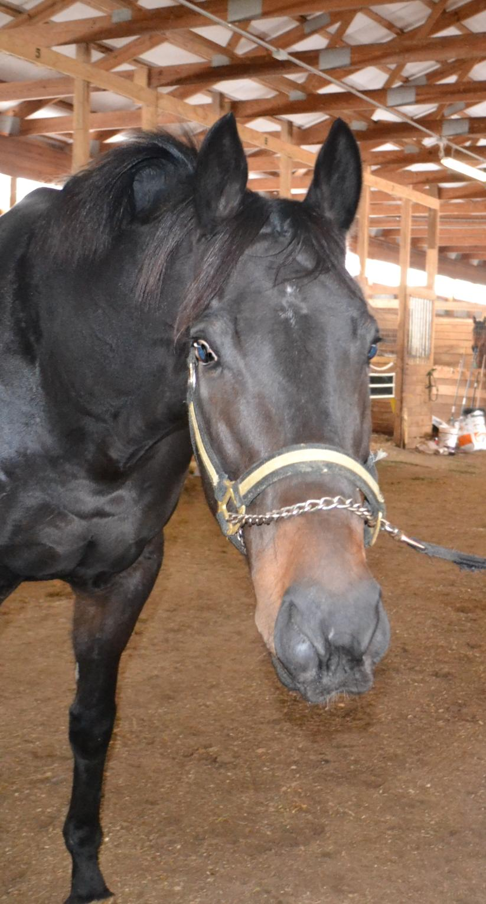
Located in a farm very close to the Finger Lakes Race Track in Farmington, NY (near Rochester, NY). We always enjoy listing horses from this barn and this big boy did not disappoint! “Mark” is described as a barn favorite and we could certainly see why. Mark has a gorgeous, uphill build. We could see him excelling as an eventing horse, but surely he could go in many different sporting directions. His handlers described him as classy and elegant. They also report he is a “total love bug” who loves attention. We were able to get info from his exercise rider as well who reports that he is very nice to ride. His trainer reports that he is retiring sound and without any stable vices. They also report that he LOVES hard peppermints (not the soft ones though), so a home that will provide lots of his preferred treats is a must. Mark has had a successful career on the track earning over $133,000 in his 44 starts with 6 wins, 5 seconds, and 9 thirds, a testament to his durability, heart, and intelligence. His connections are quite attached to this big guy, so references will be checked to ensure he is going to a great home. When we took his pictures, it was bitter cold and very icy. Unfortunately there was no safe way to get outdoor pictures, so these hardly do him justice. You will have to make a visit to see him in person to truly appreciate him! He is by Noonmark out of a Pulpit mare. Mark would be a fabulous RRP 2020 prospect! http://www.equibase.com/profiles/Results.cfm?type=Horse&refno=9069068®istry=T
Price: $3000neg Contact: Text preferred. Chris Progno 585-303-0527 or Lisa Reed 585-305-6014. No calls after 8pm please.
As always, a pre-purchase veterinary exam is recommended.
Chicken Valley Rd, 2016, 16h grey gelding
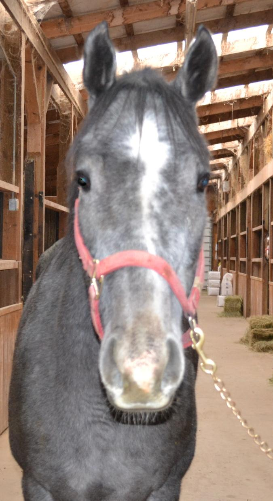
Located in a farm close to the Finger Lakes Race Track in Farmington, NY (near Rochester, NY). Think of all the fun you could have with this name at an event or show! “Chicken” is described as a sweet and sensible young gentleman. His connections report that he “never does anything wrong” and that his heart just isn’t in the racing game anymore. They think he will make a great riding horse in a different discipline. Chicken is reported to be retiring sound and without any stall vices. We visited with him for a while in his stall and he was very sweet and personable. He seemed to enjoy being doted on! Chicken has earned just over $41,000 in his 15 starts with 2 wins and 1 second. It was a bitter cold day and the barn was surrounded by ice on the day we did his listing, so there was no safe way to take him outside for pictures and videos. Despite how cold it was, he was incredibly quiet during his photo shoot with just the lead rope hooked under his chin. The footing was extremely deep in the arena which made it challenging to get a good idea of his movement. His good looks and personality make it totally worthwhile for a trip to the farm to meet this cutie in person! He is by The Lumber Guy out of a Not for Love mare. We think Chicken would be another great prospect for RRP 2020! He’s had some let down time at the farm and is ready to start his next career! http://www.equibase.com/profiles/Results.cfm?type=Horse&refno=10098810®istry=T Price: $2500neg Contact: Deb Breed 585-259-4643 (cell) or 585-289-3467 (landline). Calls preferred. If no answer, please leave a message and slowly state your name and phone number for a return call.
As always, a pre-purchase veterinary exam is recommended.
Wiggles, 2015, 15.1h dark bay gelding
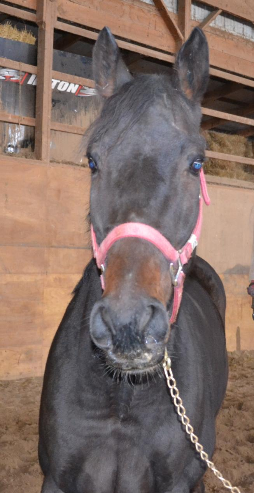
Located in a farm close to the Finger Lakes Race Track in Farmington, NY (near Rochester, NY). Another one with a super fun name to follow him into his second career! His connections Wiggles as “a good egg” who “never does anything wrong”. They think he will make a great riding horse in a different discipline. They also feel that he would be a good choice for a junior rider or someone looking to get into the world of OTTBs (with a professional’s assistance of course). Wiggles is reported to be retiring sound and without any stall vices. We visited with him for a while in his stall and he was very sweet and personable. He seemed to enjoy all the attention! Wiggles has earned just over $47,000 in his 21 starts with 4 wins, 1 second, and 3 thirds. His trainers report that although Wiggles raced decently this year, he developed a strong dislike for the starting gate and was refusing to enter it towards the end of the year. They’re taking this as a sign that he’s ready for something new! It was a bitter cold day and the barn was surrounded by ice on the day we did his listing, so there was no safe way to take him outside for pictures and videos. Despite how cold it was, he was incredibly quiet during his photo shoot with just the lead rope hooked under his chin. The footing was extremely deep in the arena which made it challenging to get a good idea of his movement. His demeanor and personality make it totally worthwhile for a trip to the farm to meet this cutie in person! He is by Soaring Empire out of a Pure Prize mare. We think Wiggles would be another great prospect for RRP 2020! He’s had some let down time at the farm and is ready to start his next career! http://www.equibase.com/profiles/Results.cfm?type=Horse&refno=9929769®istry=T&rbt=TB Price: $2500neg Contact: Deb Breed 585-259-4643 (cell) or 585-289-3467 (landline). Calls preferred. If no answer, please leave a message and slowly state your name and phone number for a return call.
As always, a pre-purchase veterinary exam is recommended.
Y’all Wicked, 2015, 16h bay mare: at FLTAP
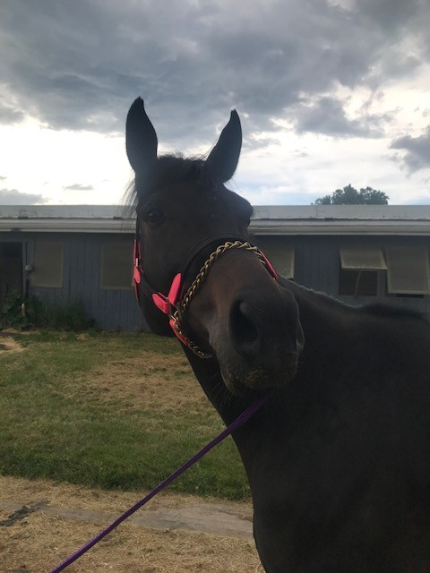
Located at the Finger Lakes Race Track in Farmington, NY (near Rochester, NY). Please note: Due to COVID19, no Finger Lakes Finest volunteers have seen Y’all Wicked in person. All inquiries should be sent directly to Tammi (contact info below). Wicked is lightly raced with only 9 starts, earning $49,000 with 3 firsts and two seconds. Y’all Wicked is described as super sweet and laid back. She is reported to have no vices and is a “total sweetheart” for grooming, vet, and blacksmith. Her trainer sent us videos of her standing quietly in the cross ties and swimming! She last worked a few weeks ago, so she is RRP eligible. Her current connections report that she has a knee chip and do not feel that she will hold up for racing or other strenuous disciplines, but feel she could be an excellent dressage horse, trail horse, or other low impact disciplines. She is by Desert Party out of a Dixie Union mare. She is a half sister to a good NY stakes winner, and the second dam is a multiple stakes producer, so there is good broodmare potential for this well bred mare who was herself a good allowance level race winner.
https://www.equibase.com/profiles/Results.cfm?type=Horse&refno=9907621®istry=T Price: $2500neg Contact: Tammi Lord 585-736-0769
As always, a pre-purchase veterinary exam is recommended.
Pawnee's Pride, 2017 16.1h chestnut gelding
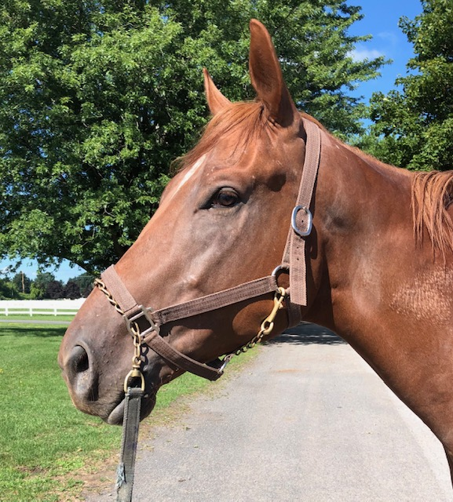
Located at a farm near the Finger Lakes Race track, Farmington, NY. This handsome, big boned young son of Posse is an unraced blank slate with huge potential for you to bring along in the discipline of your choice. He has an uphill and balanced build, with a strong shoulder and hind end and good hip angles, and good feet. His handler, who has also ridden him, describes him as quiet and very good to handle and ride, with no vices. Our volunteer observed him being readied for his photos while standing politely for grooming in his stall, and showing friendly interest as we stroked his forehead. He stood quietly for his photos despite having done nothing but go on the walking machine for the last five days, and despite a horse being lunged and running in an area right next to to him. He jogged quietly, showing a light lofty movement with suspension that led us to think he could be quite a nice dressage prospect. Pawnee's Pride is unraced, has no published works, and is not yet tattooed -- so he is truly a blank slate for you to restart your way. He came to his current connections in very thin and poor shape from a trainer on the NYRA circuit, who said he showed no interest in going on the track, and that his elderly owner/breeder just wanted them to find him a good home. His current people have restored him to good weight and happiness. They did diagnostic work and x-rays of his left front ankle showed what appears to be an old sesamoid chip that was reabsorbed. The x-rays are available. His handler says that he has galloped him on the grass training track and also ridden him in the indoor arena at the farm where they are keeping him, and that he has been very well behaved to ride and that he has not shown any unsoundness. For his jog video, we observed a quiet horse who jogged slowly on a loose lead responsive to his handler, and he showed very good light and lofty movement. They think he will be fine for any discipline. He is by Posse, who is from the Deputy Minister and Rahy/Blushing Groom sire lines, and is known for siring good moving later maturing horses with good brains and jumping ability, many of whom have excelled in sporting disciplines. His dam, Paw Annie, is by Catienus, who has sired several horses placed through FLF who have excelled at the top levels of the show hunter and eventing disciplines. This big young good looking and good moving gelding is an exciting prospect for someone who can patiently let him finish growing and bring out his potential. Price: $1500 negotiable Contact: Linda Dixon 585-329-9062
https://www.equibase.com/profiles/Results.cfm?type=Horse&refno=10281550®istry=T&rbt=TB
As always, a pre-purchase veterinary exam is recommended.
Fuhrelle, 2015 15.2h chestnut mare
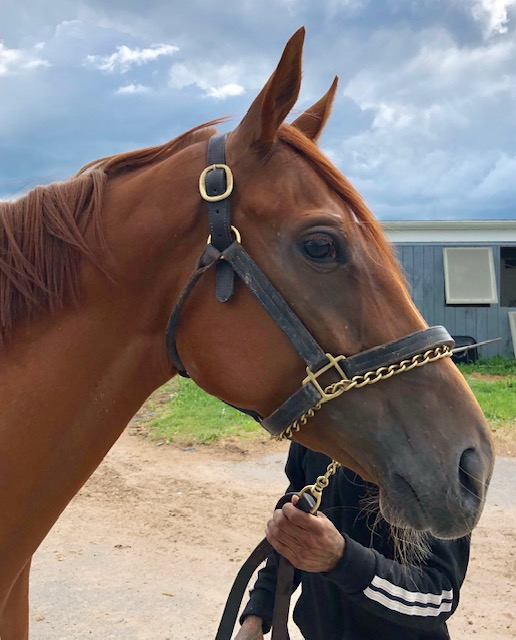
Located at Finger Lakes Race Track, Farmington, NY Fuhrelle is a quiet sweetheart of a mare, and she would rather kiss and cuddle with her human than run fast on the track -- she is the antithesis of the chestnut mare silly stereotype! Fuhrelle is a barn favorite because of her great personality and quiet temperament, and her trainer, who comes from a show hunter background, wishes she had the time to keep her as her own prospect for the 2021 RRP. But she realizes that between her full race horse barn and her family, Fuhrelle's great potential as a show horse can better be brought out by someone with more time to devote to her retraining. The trainer describes Fuhrelle as a loving and kind mare, just the best to have around. She says the mare is sound, but that it is evident that after enjoying the winter off, with three lackluster races this summer, Fuhrelle would much rather be a pampered pet and show horse than a race horse. In our experience, when a track trainer with a background in the H/J show world says a horse has great potential to excel in those disciplines, that is well worth paying attention to! Fuhrelle has a solid bodied compact build that will take up the leg of a taller rider. Her jog video was taken after she had done nothing but walk in the shed row for 5 days, and she came out cool and calm and showed a flowing walk and lovely light movement. Fuhrelle is by Langfuhr, a son of Danzig known for getting durable horses with great brains who have excelled in jumping disciplines. He dam, Rochelle Rochelle, is by Mizzen Mast, who is a son of Cozzene from the Caro sire line -- bloodlines much sought after by both the show hunter and eventing disciplines. Only the best of homes will do for this much loved sweeetheart, so be prepared with references to persuade her trainer that you are the best person to treasure Fuhrelle as much as she does. Price: $1500 negotiable Contact: Rachell Sells 585-748-0983
https://www.equibase.com/profiles/Results.cfm?type=Horse&refno=9883374®istry=T
Visionandaprayer, 2009 16.3 bay gelding
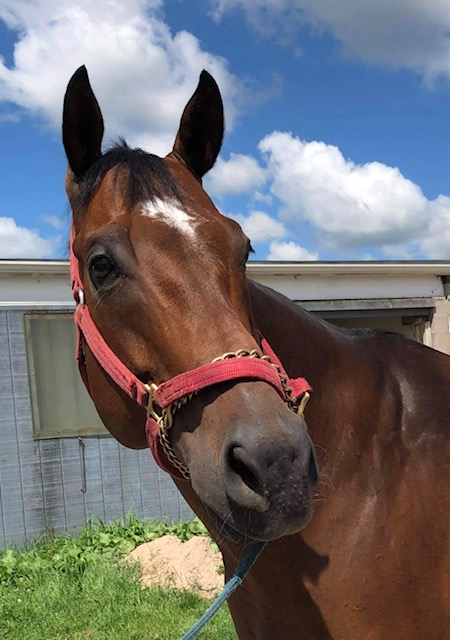
Located at Finger Lakes Race Track, Farmington, NY Here's a handsome wonderful war horse with a lot of good years left to give you great pleasure. His handler describes him as a very sweet lover -- a big teddy bear who loves people and aims to please, and is kind and good to handle. His owner has to downsize due to pandemic hardships, and they figured that Visionandaprayer has earned a great retirement. Five years ago, he bowed a tendon, and it was fully rehabbed and he had a lot of time off. He was brought back to the races last year, and the tendon held up fine to the rigors of racing, but his heart just didn't seem to be in it anymore. Because he raced through the fall of 2019, he is fully eligible for the 2021 RRP -- we think he will make a great candidate to win their war horse award in many disciplines! We were told that his well healed tendon should not present any limitations for any discipline -- after all, he raced on it. He is lightly raced for his age, with only 29 starts. He was a classy allowance horse, with 6 wins, 5 seconds, and over $100,000 in earnings. He has a good boned balanced build, and he showed nice toe pointing movement in his jog video. He is by Songandaprayer, who is a son of Unbridleds Song. His dam is by Polish Numbers, who is from Danzig and Buckpasser lines. These are excellent sport horse bloodlines. Visionandaprayer is a true gem -- do not let his age or his old fully healed tendon stop you from giving him a great new life -- he will reward you for many years. Price: $2,000 negotiable Contact: Adrianne D'Alessandro 585-281-1810
https://www.equibase.com/profiles/Results.cfm?type=Horse&refno=8611583®istry=T
As always, a PPE is recommended. For vet information see the post pinned to the top of our FB page or the How to Buy menu tab on our website.
Formal Start, 2014 17h bay gelding
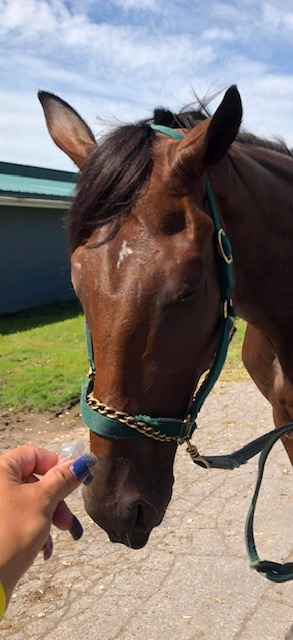
Located at Finger Lakes Racetrack, Farmington NY Looking for a big young gelding who’s a nice light mover, has a sport horse pedigree to drool over, and a kind laid back personality?Formal Start is all that! This huge son of Jump Start is described by his handler as a big teddy bear. She says he’s sound, but he has sometimes bled when he races, so the owner wants to move him on to a new career. In our experience horses that have pulmonary bleeding at race speed rarely have this issue once off the track, even in upper level sport disciplines. From the photos sent to us, we admired his strong shoulder, deep girth. In his video he shows a light, flowing big strided trot with good reach from his shoulders. Taken just two days after he raced, he shows no post race stiffness at all. Formal Start raced in early August, so he’s fully eligible for the 2021 RRP. His sire, Jump Start, is very popular with both eventers and hunter/jumper riders; everyone we know who has been lucky enough to have a Jump Start offspring loves them! His dam is by Two Punch, another sire coveted as a sport horse sire. Big, sound, good moving geldings with excellent sport horse potential are what everyone is looking for, so you should call quickly on this one! Price: $3000 negotiable Contact: Adrianne D’Allesandro 585-281-1810
As always, a PPE is recommended. For vet information see the post pinned to the top of our FB page or the How to Buy menu tab on our website.
Laura's Posse, 2015 16h+ bay gelding
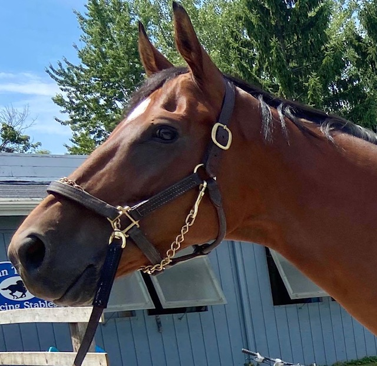
Located at Finger Lakes Race Track, Farmington, NY This handsome solid bodied young son of Posse is described as a "super fun" horse with a great personality who will make an "awesome prospect" for someone who will give him some time to recover from a tweaked XYZ ligament in the fetlock incurred in his last race at the end of July. The contact person for Laura's Posse is a vet tech who can give you all the necessary information about his injury and good prognosis. She says the vet recommends that he get 4 to 6 months off with small paddock turnout, and then he should be fine for restarting for the discipline of your choice. That is the amount of time many people like to give horses off the track anyway, and you can use it for bonding with your new handsome "super fun" horse! The contact person says that Laura's Posse has been handwalking since the injury, and that he has been happy and remarkably well behaved for a race fit horse who suddenly had his activity level reduced. You can see in the jog video that he was very well behaved despite having done nothing but hand walk for two weeks. Laura's Posse is lightly raced, with 11 starts, and 3 wins at Belmont, a top level track -- so there's some class and athletic ability here. His sire Posse is from Deputy Minister and Rahy/Blushing Groom sire lines, and produces solid bodied horses who are good movers and show jumping ability. His dam, Laura's Jewel, is by Jules. This young gelding is offered at a bargain price to help him find a great new home with the right person who will give him the time he needs so that his full potential can be realized. He is fully eligible for the 2021 RRP. Price: $700 Contact: Hannah Lewis 607-661-3212
https://www.equibase.com/profiles/Results.cfm?type=Horse&refno=9922582®istry=T
A PPE is always recommended. For information about on track vet practices available to do PPEs, please see the post pinned to the top of our FB page, or the How to Buy menu tab on our website.
Tricky Posse, 2013 16h bay gelding
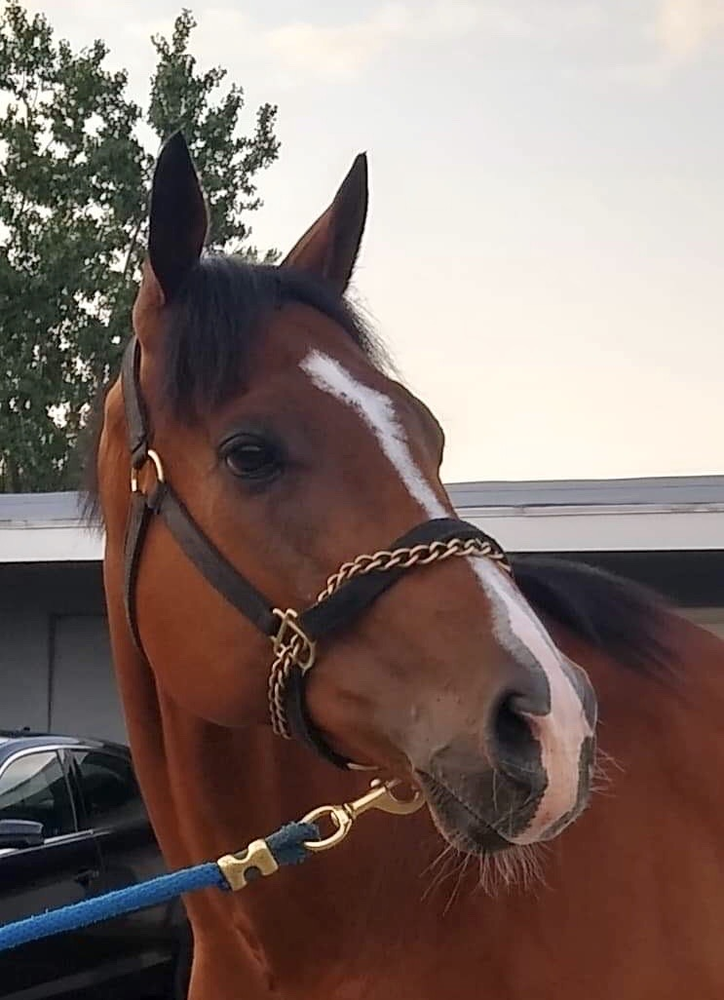
Located at Finger Lakes Race Track, Farmington, NY The trainer of this handsome and flashy bay with chrome describes him as a playful horse with a fun personality. She says that he has an old bow, and is sound on it, with published workouts this summer, but she thinks he might not hold up for further racing so she wants to find him a new career. She thinks that he will be fine for most disciplines, and that he would be best for an experienced rider. He is fully eligible for the 2021 RRP. He has been a good solid racehorse who earns his keep, with 5 wins and 14 more in the money finishes. In the video the trainer sent to us, he shows very nice movement -- typical of Posse offspring. His sire Posse, from the Deputy Minister sire line, is known for getting solid bodied horses who are good movers and have jumping ability. We have placed several who are succeeding in dressage, eventing, and as Hunter/jumpers. Tricky Posse's dam is by Freud, who is another popular sporting horse sire. Price: $2500 negotiable Contact: Kathy Mastin 585-576-5138
https://www.equibase.com/profiles/Results.cfm?type=Horse&refno=9489560®istry=T
A PPE is always recommended. For information about on track vet practices available to do PPEs, please see the post pinned to the top of our FB page, or the How to Buy menu tab on our website.
Prince Supreme, 2013 16.1+ grey gelding
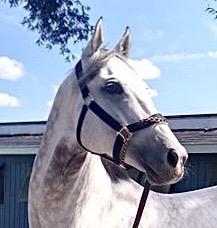
Located at Finger Lakes Race Track, Farmington, NY Wow, is this guy gorgeous or what? Described as a great horse to be around, this elegant solid bodied beauty has been a winning machine on the race track, with 8 wins in 14 starts. But a few years ago he bowed a tendon, and while it was rehabbed and he subsequently raced on it, his current owner/trainer realizes that he will not return to his previous top form and that he is better off being retired to find a new career. Prince Supreme has had published works this year, so he is fully eligible for the 2021 RRP. In the jog video sent to us, we can see good light movement with good push from behind. With a bit of rest to let his tendon recover from his recent workout regimen, the trainer thinks that Prince Supreme will be fine for most disciplines other than racing. Prince Supreme is by Alphabet Soup, who is a son of Cozzene from the Caro sire line, and his dam is from Gone West and Danzig lines. He has a cross of Arts and Letter, a son of Ribot. These are stout and highly desirable sporting lines. Please note: all photos and information were sent to us by the contact person for the trainer; FLF volunteers have not seen this horse in person and you will have to ask the trainer or his contact person for additional information. Price: $3,000 negotiable Contact: Coco Dominguez (owner/trainer) 585 360 7397 or Kathy Mastin (back up contact person since trainer often difficult to get ahold of): 585-576-5138
https://www.equibase.com/profiles/Results.cfm?type=Horse&refno=9514636®istry=T&rbt=TB
A PPE is always recommended. For information about on track vet practices available to do PPEs, please see the post pinned to the top of our FB page, or the How to Buy menu tab on our website.
One Cool Kitten, 2015, 15.2h chestnut mare
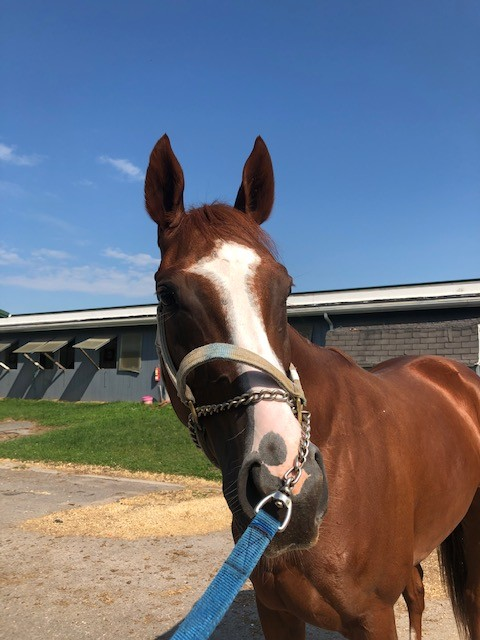
Located at the Finger Lakes Race Track in Farmington, NY (near Rochester, NY). Please note: due to COVID restrictions, our volunteers did not list this horse in person. Frost Giant fans (and maybe Tiger King fans?)!: hurry!! We think Kitten will get lots of interest because there’s a lot to love about her! One Cool Kitten is by Frost Giant out of a One Cool Cat mare. Her connections report that she is an absolute sweetheart who is wonderful to work with. It’s reported that she loves mints and really wants a person of her own. They say she is retiring sound with clean legs, she’s just too slow and not showing interest in racing. She has 21 starts, her last being earlier this month, so she will be eligible for RRP 2021. Her connections report that she turns out well with a herd. She can be strong to gallop on the track, but is reported to be much simpler when ridden at the farm. They also report that they have caught her cribbing very occasionally while at the track, but that when she was at the farm getting turnout, this was never an issue. She has never worn a collar. https://www.equibase.com/profiles/Results.cfm?type=Horse&refno=9970242®istry=T&rbt=TB
http://www.youtube.com/watch?v=MIMWJX2SHt8 Price: $2000neg Contact: Michelle Tasso (text preferred. No texts or calls after 8pm please!) 585-472-2804
As always, a pre-purchase veterinary exam is recommended.
Itsjustnotyourday, 2015 16.1 chestnut mare
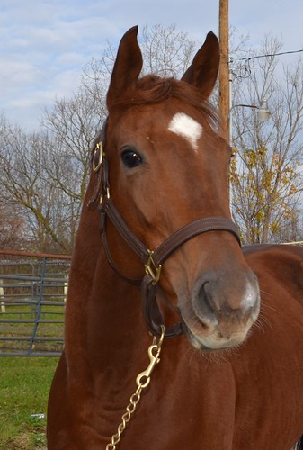
Located at Finger Lakes Race Track, Farmington, NY This pretty mare is described by her trainer as very sweet and friendly, and very easy to handle both on the farm and at the track. She also has a lot of heart and try in her, with 4 wins in 17 starts. There are many reasons she is a trainer favorite. She ran a close second in an allowance race in mid-July, but when she was checked over before being reentered in another race, the trainer and vet noticed some minor swelling in her ankle/suspensory area. They took ultrasounds, which revealed a lesion in the suspensory. The trainer says she is walking and jogging OK on it, and sent us a video. The trainer has informed us that the vet says she can go on small paddock turnout for a couple of months, and then can be turned out in a larger pasture, and with a year off she should be fine for any endeavor. The trainer will share ultrasounds and the vet's contact information with seriously interested potential buyers. Itsjustnotyourday has a pretty expression, a sloping shoulder, and a good topline. She is by Bustin Stones out of a mare by Soto. We initially listed this mare and got to see her in person (and give her peppermints) last November, before the owner decided to retain her for racing. In the video from last November she showed off a relaxed walk with good overreach and displayed cute movement with a floaty, airy trot. In video from mid-August sent to us by the trainer, that same nice movement potential can be discerned, although she was a bit fresh from being race fit and then having done nothing but hand walk since her injury was diagnosed. The trainer wants to assure that her much loved mare goes to only the best of homes that can give her the proper time she needs, and who will cherish her as much as she does. So be prepared with references, if you want it to be your day! Price: $1500 negotiable to an excellent approved home Contact: Alex Hillegass 484-896-8754
https://www.equibase.com/profiles/Results.cfm?type=Horse&refno=9903518®istry=T
A PPE is always recommended. For information about on track vet practices please see the post pinned to the top of our FB page, or the How to Buy menu tab on our website.
Yankee Noodledandy, 2016 15.3h+ dark bay filly
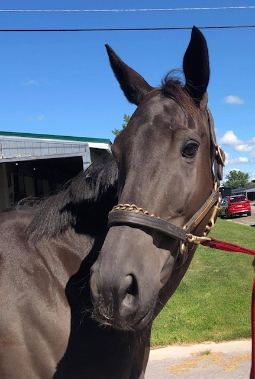
As if this sweet nearly black filly's registered name isn't cute enough for you, her barn nickname is "Moostash" because she has a white mark on her upper lip that looks like she is sporting a moustache! (You can slightly see it in the photo of her face.) The trainer says that Moostash is as sweet as can be, and also sound and clean legged with no vices. But she is bred for turf, does not seem to care for the dirt track at Finger Lakes, and in her workouts she is not showing enough speed to warrant shipping her somewhere to try the turf. (But, hint hint..... eventing cross-country and stadium are on the turf!) She had one race last November, and has several published workouts this summer, so she is fully eligible for the 2021 RRP. In the video the trainer sent us, Moostash is perfectly behaved, alert, and displays a lovely light, flowing and balanced trot. Based on her pedigree, we think this girl has unlimited potential for eventing or in the show hunter ring. Her sire is Heavy Breathing, who is a full brother to Frost Giant, from the Giant's Causeway and Gone West sire lines. We have placed a few Heavy Breathing offspring in the past couple of years, and the people who have them tell us MORE PLEASE!!! They have great brains, learn quickly, are quiet and sensible, lovely movers, and very good jumpers. One of them is succeeding with a junior rider at the top levels of hunter shows in Ontario; two others that we get updates on are quickly moving up the levels in eventing. Yankee Noodledandy's dam is Nickerdoodle, who is by Hat Trick, a son of Sunday Silence. More than Ready also appears on her dam's side, which brings in another cross of Halo. Price: $2,000 negotiable Contact: Adrianne D'Alessandro 585-281-1810
https://www.equibase.com/profiles/Results.cfm?type=Horse&refno=10079804®istry=T
A PPE is always recommended. For information about on track vet practices who can do PPEs, please see the post pinned to the top of our page, or the How to Buy menu tab on our website.
Chiricahua, 2017 15.3h+ bay gelding
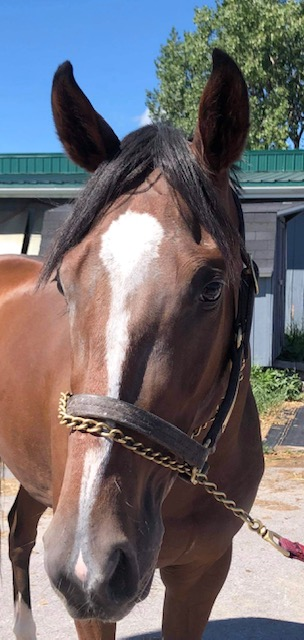
This flashy young bay gelding with chrome checks all the boxes of what everyone says they are looking for: he is lightly raced, sound, well put together and a good mover, has a good sport horse pedigree, and he has unlimited potential for a new career. His trainer, who sent us the photos and video, says that after 7 starts in which he has yet to finish better than fourth, it is obvious that racing is not his best game and that he is better suited for a different job. He is fully eligible for the 2021 RRP. She says that he is sound with very clean legs and no vices. She reports that he can be a bit timid at first with new people, but that once he gets to know you he loves you. Named after an indigenous tribe from the southwest, and a mountain range and national monument in Arizona, he is by Alpha, who is a son of Bernadini and a grandson of AP Indy, out of a mare by Colonel John who is a son of Tiznow. Quiet American, Fappiano, Northern Dancer, Alydar, adn Secretariat are other notable names in his pedigree. In the two jog videos that the trainer sent to us, we observed a horse who was good to handle, with a light balanced trot and good reach from his shoulders. He has the uphill build of a sport horse, and since he is still growing, he should get bigger, and should fill out to be quite impressive. Sound young lightly raced geldings tend to be quite popular, so call soon if you are interested in making Chiricahua your next sport horse partner. Price: $2,000 negotiable Contact: Adrianne D'Alessandro 585-281-1810
https://www.equibase.com/profiles/Results.cfm?type=Horse&refno=10282126®istry=T&rbt=TB
A PPE is always recommended. For information about on track vet practices, please see the posts pinned to the top of our FB page, or the How to Buy menu tab on our website.
TOYSHOP, 2013 16.1h grey gelding
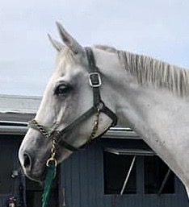
Located at Finger Lakes Race track, Farmington, NY
This beautiful homebred, nicknamed "Ghost," is one of his owner/breeder's all time favorite horses. She reports that Toyshop always draws admiring comments from onlookers at his races because he is so beautiful. She says that he is lively and spirited, but also friendly and well mannered. He would be best suited for an experienced rider. One of his exercise riders reports that he floats over the ground, is a beautiful mover, and is great to ride. He is lightly raced, with only 16 starts, and one win. He has published workouts this summer, so he is fully eligible for the 2021 RRP. Toyshop has spent some of his winters at the same barn where one of our FLF volunteers boards, so she has gotten to know his friendly personality and good manners first hand. Toyshop is by Alphabet Soup, who is from the Cozzene/Caro sire line. His dam, Haunted Honeymoon, is by Eastern Echo, a son of Damascus. These are excellent sport horse bloodlines.
Price: $3,000
Contact: Valerie Morrison 585-733-8489 (cell) or 315-986-8300 (work)
you can also contact his track trainer, Jim Wright, at 585-734-9656 between 10 and 11 am Mon-Sat. to make arrangements to see Toyshop
https://www.equibase.com/profiles/Results.cfm?type=Horse&refno=9524895®istry=T&rbt=TB
As always, a pre-purchase veterinary exam is recommended.
Wise Nobility, 2015 16h dark bay mare
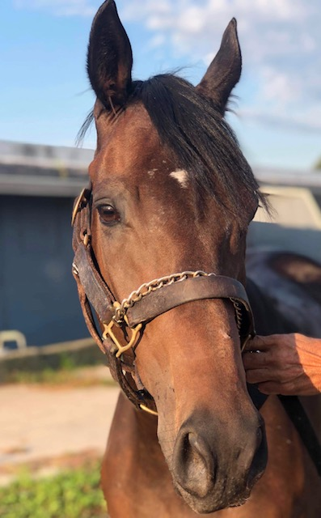
Located at Finger Lakes Race Track, Farmington, NY This lightly raced daughter of Wiseman's Ferry indeed has a look of kind-eyed wise nobility! She has started only twice, and showed no racing talent. Her workouts this summer are slow, so her trainer realizes that she needs a new career. The trainer says she is sound and clean legged, has never had any injuries or issues, and that she gallops her in a snaffle. The trainer also reports that Wise Nobility can be a bit on the higher energy side, and a bit shy, so that she will be best with someone who she can develop a trusting bond with. But those of you who have been fortunate enough to develop a trusting bond with a good mare know the then they will try their hearts out for you! Wise Nobility can go in any new direction in the discipline of your choice. In the jog video the trainer sent us, she shows a nice light trot with good push from behind. Her sire, who is by Hennessy, is also the sire of the much beloved champion Wise Dan. Her dam, Sweet Nobility, is from Devil's Bag/Halo and In Reality lines -- great sport horse bloodlines. Wise Nobility has an uphill build and a strong shoulder, also good attributes for a sport horse career. Price: $1500 negotiable Contact: Alex Hillegass 484-896-8754
https://www.equibase.com/profiles/Results.cfm?type=Horse&refno=9880186®istry=T
A PPE is always recommended. For information about on track vet practices please see the post pinned to the top of our FB page or the How to Buy menu ta b on our website.
Henning's Penny, 2017 15.2h+ chestnut filly
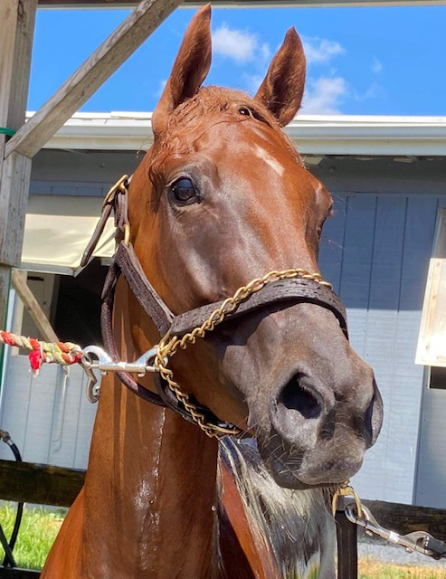
Located at Finger Lakes Race Track, Farmington, NY Shining like a copper penny, this filly is described as cute, sound, feisty, and full of endearing character. After four unsuccessful races, it is obvious to her trainer that she is not cut out to be a racehorse. But she has unlimited potential for any new career. She is leggy and will grow and fill out some more, but with her stature and spunk she might make a great polo prospect. And her breeding is great for eventing. She is by Mission Impazible, who is a son of Unbridled's Song, and who has several offspring that we have have placed over the last couple of years who are quickly adapting well to new eventing careers. Her dam, Sun Pennies, is by top sire Speightstown, who is a son of Gone West. Her second dam is a stakes winning daughter of Unbridled. She is fully eligible for the 2021 RRP. We think you can have lots of fun with this filly! Price: $1000 negotiable Contact: Hannah Lewis 607-661-3212
https://www.equibase.com/profiles/Results.cfm?type=Horse&refno=10349779®istry=T
A PPE is always recommended. For information about on track vet practices, please see the post pinned to the top of our page, or the How to Buy menu tab on our website.
Playboy's Pitch, 2017 15.3h+ bay filly
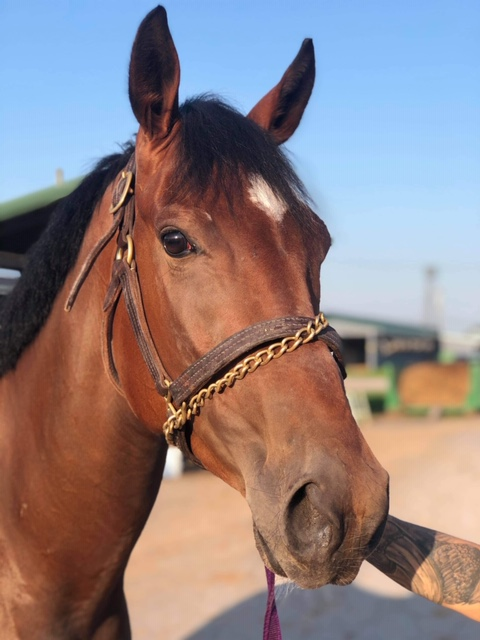
Located at Finger Lakes Race Track, Farmington, NY This still growing young filly is described by her trainer as easy going with a good brain, good to handle and good to gallop in a snaffle. The trainer reports that she is sound, clean legged, and has never had any soundness issues. But after just three races in which she ran near the rear of the field, it is obvious that she is just too slow to a good racehorse. But she has unlimited potential for any new career. The trainer feels that you could go in any new direction pretty easily with this filly. She has a pedigree full of good sport horse sires. Her sire, New York Playboy, is by Hook and Ladder, who is from Dixieland Band and Cox's Ridge lines, and he has Cormorant/His Majesty in his dam sire line.. Her dam Positive Pitch is by Read the Footnotes, from the Smoke Glacken/Two Punch sire line. Price: $1500 negotiable Contact: Alex Hillegass 484-896-8754
https://www.equibase.com/profiles/Results.cfm?type=Horse&refno=10269029®istry=T
A PPE is always recommended. For information about on track vet practices, please see the post pinned to the top of our page, or the How to Buy menu tab on our website.
Tote Board, 2017, 15.2 ½, Bay Filly
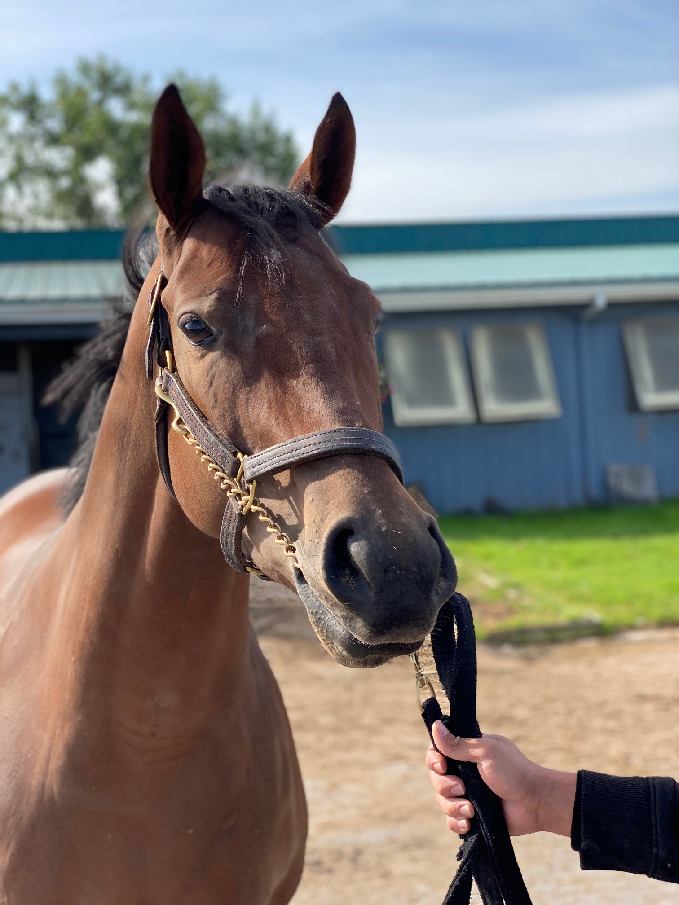
Located at the Finger Lakes Race Track in Farmington, NY (near Rochester, NY). We aren’t quite sure where this name came from, but she sure is cute! Unfortunately for her current connections, she shows zero aptitude for racing, so she has started the “let down” process and has had the last few weeks off to start her transition to a post-racing lifestyle. Her shoes have been pulled, so she is barefoot in her video. She is reportedly great to work around and excellent in her stall for grooming. On the track, she could be strong to ride but always stuck to the task at hand-- she was workmanlike and well mannered. She is by Big Brown, out of a Too Much Bling mare. While she just didn’t have the talent that her connections were hoping for, if you are searching for a young, lightly raced, “clean slate” filly to bring in to your sporthorse program, look no further-- this one is for you!! https://www.equibase.com/profiles/Results.cfm?type=Horse&refno=10241464®istry=T Price: $2,000neg Dana Saul 315-871-9383
As always, a pre-purchase veterinary exam is recommended. Please see the "How to Buy" tab on the website for resources.
Bug Tales 2015, 16.1, dark bay mare
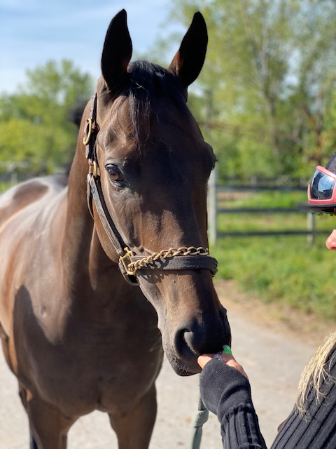
Located at the Finger Lakes Race Track in Farmington, NY (near Rochester, NY). If you’re a sucker for dapples, this mare is calling your name!! Bug tales is reportedly great to ride and goes to the track in a plain D ring snaffle! Her stunning stature and correct movement will make her an excellent partner for a new career! Bug tales turns out well with others and is a solid citizen around the barn. She is reported to be sound with no vices. She does have an old well healed bow that she has raced on with no issues. Bug Tales is by Forty Tales and out of Solo Song, by Fly so free. Call to take her home today and retell the story of "A Bug's Life" with your own new perspective!
Price: $1,500 Contact Adrianne D’Alessandro 585-281-1810
https://www.equibase.com/profiles/Results.cfm?type=Horse&refno=9939822®istry=T
As always, a pre-purchase veterinary exam is recommended. Please see the "how to buy" tab on the website for resources.
Simmering Miss, 2015, 16.2, chestnut mare
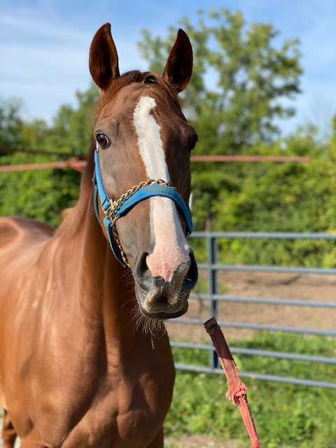
Located at the Finger Lakes Race Track in Farmington, NY (near Rochester, NY). A nice slow simmer is a perfect depiction of this mare’s personality. Her connections report that she has “never moved fast enough to injure herself” but also never moved fast enough to make a successful racehorse. She is very lightly raced with only 10 starts. She has only hit the board 1 time in those starts. Simmering Miss is with a trainer who takes lovely care of his horses. We are always excited to see what he is going to pull out when he waves us down at the track for a listing. You can trust that she has been correctly handled and managed. Her groom reports that she is very nice to work with with no vices, a nice mover, and has a good brain. Unfortunately for him, she is also just very slow. We think she will be very successful in a different career! She is by Simmard out of a Pleasant Tap mare. https://www.equibase.com/profiles/Results.cfm?type=Horse&refno=9926666®istry=T Price: $1,200 John Tebbutt 585-230-5710
As always, a pre-purchase veterinary exam is recommended. Please see the website "How to Buy" tab for resources.
Stone Breaker, 2016, 16.2+ grey gelding
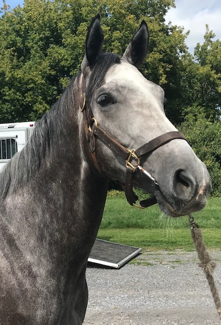
Don’t go breaking my heart, Stone Breaker! This handsome hunk has earned over $100,000 in 8 starts on the racetrack, a very successful boy! Stone Breaker is about as gorgeous as they come with a nice uphill build. He is sure to turn heads wherever he goes! He is reportedly great to work around with good manners and a friendly personality. He is good to ride and eager to go to work each day. His gentlemanly demeanor will serve him well as he trains for a new discipline. They report he has no stall vices. After his last start, Stone Breaker had some soreness in his knees. His xrays revealed some arthritis and his connections would like him to retire to a less strenuous discipline where he can have many more successful years in a different career. Stone Breaker is by Eskendereya out of a Empire Maker mare. He is located at a farm very close to the Finger Lakes Race Track in Victor, NY, so shoppers can see and meet him in person by making an appointment with the trainer. Hurry-this one will look beautiful in your barn!! https://www.equibase.com/profiles/Results.cfm?type=Horse&refno=10060120®istry=T&rbt=TB Price: $1500 Contact Karen Barrow 585-415-1152
As always, a pre-purchase veterinary exam is recommended. Please see the "How to Buy" tab for resources.
Ella’s Ghost, 2016, 16.3+ Grey/Roan Gelding
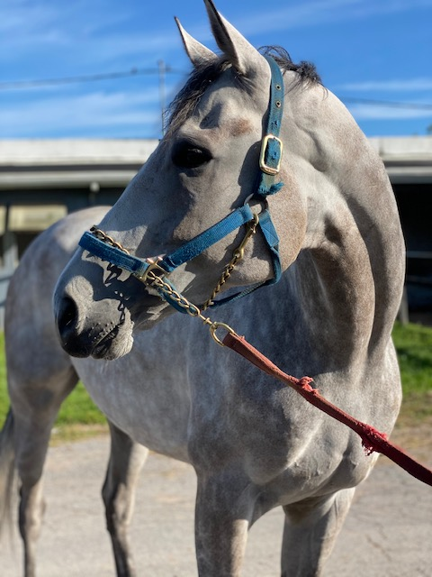
Located at the Finger Lakes Race Track in Farmington, NY (near Rochester, NY). Move over Casper, there’s a new ghost in town!! This handsome gelding is surely to turn heads in his new career with his huge stride and stunning presence. But it’s not all looks for this guy!! His groom reports that he is “the sweetest horse you’ll ever meet” and that he is an absolute gem to work around with good manners in the barn. His personality shines through with his quiet demeanor and he even likes to stick his tongue out at visitors in the barn. Ella’s Ghost is reported to be sound with no vices: His connections say that he has clean legs and no injuries. He is by Big Brown and out of Undaunted Ella, by Half Ours. He’s looking for his new career today-- make him your next RRP entry!! https://www.equibase.com/profiles/Results.cfm?type=Horse&refno=10205934®istry=T Price: $7,000 John Tebbutt 585-230-5710
As always, a pre-purchase veterinary exam is recommended. Please see the "How to Buy" tab on the website for resources.
Aleph, 2017 16h bay gelding
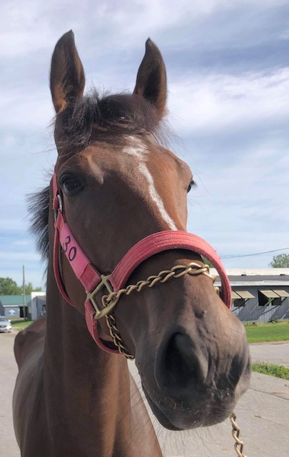
Located at a farm in Shortsville NY very close to the Finger Lakes Race Track, where he can be seen by appointment Aleph, a son of Alpha from the AP Indy sire line, is described as a potential gem once he matures and bonds with his new person. He has not shown enough racing ability in his 13 starts, in which he has yet to win, so it is time to let him find the career that he can excel in. He is described as sound, clean legged, and without any vices. His contact person, who is the trainer's daughter who handles him a lot, says that Aleph is still mentally immature, and cautious about things like sudden fast movements. She says he looks to his handler for direction and assurance, and that he willingly follows direction to do what you are asking him to do and trusts you that it is safe to proceed. She says that with someone who is experienced with young horses and retraining them off the track, who can give him clear direction and confidence, she thinks he will blossom and has unlimited potential. He shows even, flat kneed movement in the jog video. He has an excellent sport horse pedigree. His sire Alpha is by Bernardini, who is a son of AP Indy out of a Quiet American mare. His dam is by Forest Danger, who is by Mr. Greeley, a son of Gone West. Aleph is offered at a very enticing bargain price for a young, sound well bred gelding with such upside potential. Take your time with him, let him mentally and physically mature and fill out, bond with him, give him confidence, and we agree that you are going to have a real gem of a horse. Price: $850 Contact: Jamie Boldt 585-943-4298
https://www.equibase.com/profiles/Results.cfm?type=Horse&refno=10244083®istry=T
A PPE is always recommended. For information about on track vet practices who can do pre-purchase exams, please see the post pinned to the top of our page or the How to Buy menu tab on our website.
Unbridled Gal, 2016, 15.3, Grey Filly: Price Drop
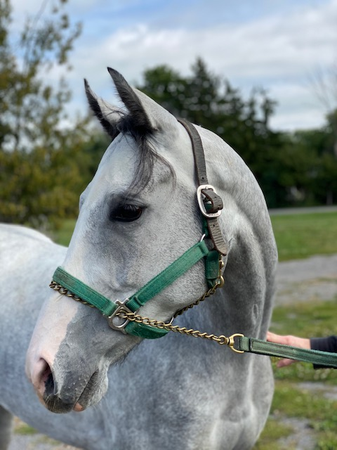
Located at a farm in Shortsville NY very close to the Finger Lakes Race Track, where she can be seen by appointment. Calling all grey lovers!! This kind eyed filly is lightly raced with just 9 starts in her career and she is well known by her connections! She has been with current trainers since she was a yearling, and they were the folks who first broke her. They report that she has “not a bad bone in her body,” and is extremely sweet. Unbridled Gal is good in solo turn out and loves people, loves to graze, loves peppermints! Our volunteers experienced her kind demeanor and observed excellent movement that will make her stand out in sporthorse rings in her next career! Gal did come back from the track with dirt in her eye last year and went to Cornell for a full eye workup. She was cleared by the veterinary hospital with 100% vision and no further issues, but the dirt did leave a small visible dot on her eye. She is reportedly clean legged and sound, with no stall vices. Unbridled Gal is by The Lumber Guy out of a Hook and Ladder mare. https://www.equibase.com/profiles/Results.cfm?type=Horse&refno=10099650®istry=T&rbt=TB
Price: $1800 negotiable Contact: Dan Jacobs text or call 585-764-3917 References will be thoroughly checked.
A Pre-purchase exam is always recommended. For information about on track vet practices who are available to do PPEs, please see the post pinned to the top of our page, or the How to Buy menu tab on our website.
Mend Up, 2016 16h bay gelding
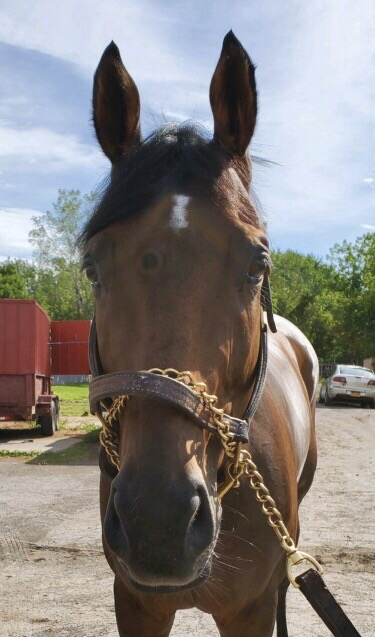
Located at Finger Lakes Race Track, Farmington NY This lovely young gelding checks all the boxes -- handsome, good mover, quiet, sound, great sport pedigree with the coveted sire Maria's Mon his damsire, and very reasonably priced. He comes from a trainer who always has lovely well cared for horses, and we have placed many into new homes where they have found success in eventing or the H/J show ring. Mend Up showed some initial promise racing as a two year old, winning on the tougher NYRA circuit, but after that initial win he has not had much success racing, so his owner says it is time to find him a new career. He has only 12 starts, with one win and one third. The trainer says he is sound and clean legged, with a great personality -- she says he loves attention. The trainer also reports that Mend Up is very nice to ride, well behaved. She says he is very quiet and good to handle. Mend Up is by Forty Tales, a son of Tale of the Cat. His dam, Dos Arriba, is by Maria's Mon, who was rated as one of the best sires for TB sport horses in a recent issue of the RRP's Magazine. Everyone we know who has a horse with Maria's Mon close up raves about their temperament, athletic ability, and good brain. We have similar good reports about Forty Tales offspring. Mend Up last raced on August 17, so he is fully eligible for the 2021 RRP. Price: $1500 Contact: Terry Genecco
A Pre-purchase exam is always recommended. For information about on track vet practices who are available to do PPEs, please see the post pinned to the top of our page, or the How to Buy menu tab on our website.
Youth Gone Wild, 2014, 16.2, Grey/Roan Mare
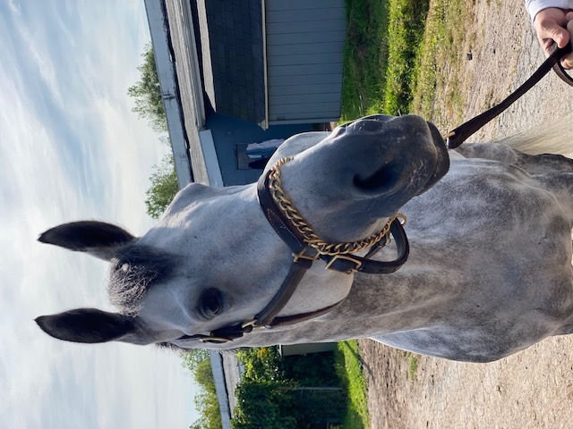
Located at the Finger Lakes Race Track in Farmington, NY (near Rochester, NY). There’s certainly no “old grey mare” who “ain’t what she used to be” around here! Youth Gone Wild is a beefy, solid bodied athlete who has a wonderful personality and gorgeous movement. She is reportedly great to ride and a pleasure to have in the shedrow. Her connections couldn’t say enough good things about this adorable mare. She’s pleasant to work around, groom, and ride. She turns out well at the farm, and has no stable vices. In 28 starts, Youth Gone Wild has earned over $50,000 on the racetrack, but she’s just not finding her groove this season and her connections have decided to let her move on to a new career. Our volunteers observed a demeanor and movement that would be an excellent fit for a hunter career, but this gorgeous girl could certainly go in any direction. Youth Gone Wild is by Utopia, out of a Maria’s Mon mare. Call today to bring this awesome girl home to make her your next partner!! https://www.equibase.com/profiles/Results.cfm?type=Horse&refno=9673482®istry=T&rbt=TB Price: $5,000 firm Contact: Terry Genecco 585-820-2575 (text preferred)
A pre-purchase exam is always recommended. For information about on track veterinary practices available to do PPEs please see the post pinned to the top of our FB page, or the How to Buy menu tab on our website.
Ghost Block-- 2015, 16.1h, Dark Bay Gelding
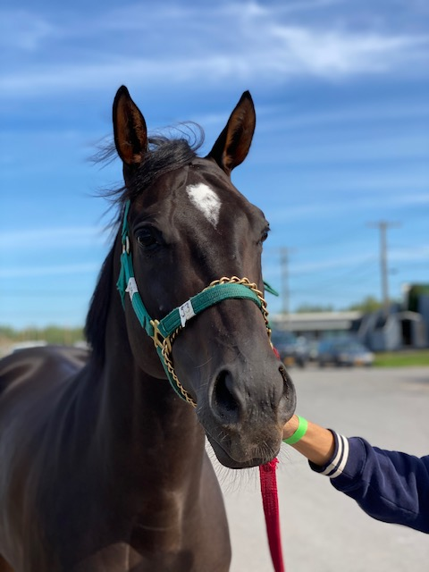
Located at the Finger Lakes Race Track in Farmington, NY (near Rochester, NY). Check out this weekend’s volunteer favorite! This handsome guy is described as “just like a Golden Retriever in a Thoroughbred body!” He certainly showed that adorable demeanor for his meet and greet today. While he made it VERY clear that his first love is and will always be peppermints, he made plenty of time to make loving gestures and receive scratches from our team on the backside. Sadly for his connections, he has slowed down this year on the racetrack and they need to cut back the herd before winter. Ghost Block is described as sound with no vices. He is by Gemologist and out of a Vindication mare. https://www.equibase.com/profiles/Results.cfm?type=Horse&refno=9929882®istry=T $3500 Neg Dana Saul 315-871-9383
A pre-purchase exam is always recommended. For information about on track veterinary practices available to do PPEs please see the post pinned to the top of our FB page, or the How to Buy menu tab on our website.
NEXT QUEEN, 2016 16h bay filly
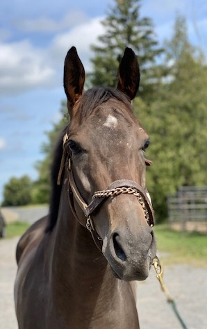
Located at a farm in Shortsville NY, very close to the Finger Lakes Race Track, where she can be seen with an appointment She can indeed be your next queen, or princess, or cherished wonderful mare! Next Queen is described by her trainer as very sweet, calm and quiet and sound with no vices -- just what everyone wants. Our volunteers who took her photos at the farm where she is hanging out awaiting her new person raved about her as just the sweetest horse -- they loved her! Next Queen has had only 12 starts, with one win, and two seconds and two thirds. But since winning her first race earlier this year, she has found the "NW2" conditions more challenging for success, so her owner and trainer have decided it is good time to find her a new career while she is still sound and has unlimited potential for any discipline. For her jog video Next Queen jogged politely on a loose lead, and showed even balanced flat kneed movement that suggests she could be very cute in the hunter ring. She is fully eligible for the 2021 RRP. Next Queen has one of the best sport horse pedigrees we have seen in a while. Her sire is Fairbanks, a son of the great Giant's Causeway out of a mare from Damascus and Reviewer lines. Her dam, What is Next, is by Devils' Bag, a son of Halo, out of a Buckpasser mare from Princequillo lines. All of this at a very attractive bargain price! Price: $850 Contact: Jamie Boldt 585- 943-4298
https://www.equibase.com/profiles/Results.cfm?type=Horse&refno=10069341®istry=T&rbt=TB
A pre-purchase exam is always recommended. For information about on track veterinary practices available to do PPEs please see the post pinned to the top of our FB page, or the How to Buy menu tab on our website
Georgiana Best, 2015, 15.3h, Chestnut Mare
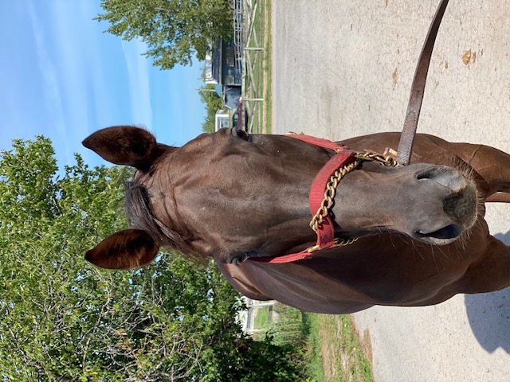
Located at the Finger Lakes Race Track in Farmington, NY (near Rochester, NY). Pictures don’t do this one justice! This big bodied mare is lightly raced with only 6 starts in her career. By only hitting the board once in those attempts, she has made it clear to her connections that she is just not fast enough to continue in her racing career. She is reported to have no soundness issues and no stable vices. While she may not be the tallest in the shedrow, her solid build will surely make even a taller rider look balanced on her back. Georgiana is said to be very gentle and quiet in the stall and had her impeccable manners on display for her meet and greet with our volunteers today. Her jog video excited many of her nearby barn mates, but she was unflappable amidst the bustle of their excitement. She showed off her excellent movement and showed many hints to our volunteers that she will make an outstanding prospect for the RRP 2021. Georgiana last raced on 9/8/2020 and while she is well behaved and workmanlike on the track, she does have a tendency to be nervous in the starting gate. Her trainer states she doesn’t display this behavior anywhere else and she can be groomed loose in her stall. Georgiana Best is by Fast Draw and out of a Smarty Jones mare. Call today to bring this sweetheart of a mare into your family today! You won’t regret it-- she’s waiting to be someone’s new best friend.
https://www.equibase.com/profiles/Results.cfm?type=Horse&refno=9914178®istry=T
http://www.youtube.com/watch?v=bG1hDW__qB4
Price: $2,000 negotiable Eddie Maver 786-285-2047 A pre-purchase exam is always recommended. For information about on track vet practices who are available to do PPEs, please see the post pinned to the top of our FB page, or the How to Buy menu tab on our website.
Redeem Me, 2014, 15.3+h, Chestnut Mare
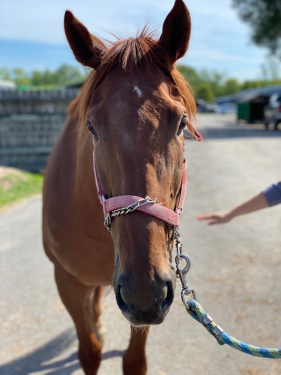
Located at the Finger Lakes Race Track in Farmington, NY (near Rochester, NY). Sometimes a name says it all! This adorably sweet mare is looking for someone to “Redeem her” and help her find her way into a new career. She was so quiet for her meet and greet with our volunteers and acted like she was ready to be a pony horse, not a race horse! She truly could be one of the quietest horses we have listed at the track. She does have a paralyzed flap so she is best suited for a pleasure horse or low level sporting career. However, she could have a surgery performed to repair this and return to higher level careers. She is reported to have no injuries or stall vices. Redeem Me has an incredibly wise and kind eye and she displayed a truly “in your pocket” personality. Redeem Me desperately needs her feet done, but seemed to jog soundly despite this. She last raced at the end of 2019. We really feel this one will be someone’s best friend and we would love to follow her story! Redeem Me is by Redeemed and out of a Loustrous Bid mare.
https://www.equibase.com/profiles/Results.cfm?type=Horse&refno=9759683®istry=T&rbt=TB
http://www.youtube.com/watch?v=RBnOxYKlkCc Price: $850neg Contact: Luis Gutierrez 585-880-5622 (contact person for owner/trainer) A pre-purchase exam is always recommended. For information about on track vet practices who are available to do PPEs, please see the post pinned to the top of our FB page, or the How to Buy menu tab on our website.
Ranger Wrote, 2017, 16h+ dark bay gelding
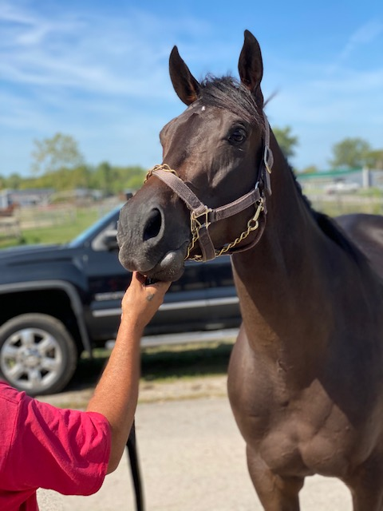
This handsome young man is basically a blank slate! He has had one very lackluster start in which he broke slow, didn’t keep up with the pack, and eventually just cantered through the finish line at his own pace. Ranger seemed incredibly sweet during his photoshoot and enjoyed the peppermints and attention. His trainer reports that he is retiring sound and without vices, however, due to a language barrier, it was challenging to get much more information than that. A groom told us that Ranger is good to handle and he appeared well behaved on the walker, which we observed upon arrival. Ranger jogged very politely on a loose lead despite some ruckus in the background. Our volunteers thought his floppy ears while jogging were just too cute. We think he could be a fantastic prospect for RRP 2021. Ranger Wrote is by “Wrote” out of a “U S Ranger” mare.
https://www.equibase.com/profiles/Results.cfm?type=Horse&refno=10376052®istry=T Price: $3,000 Contact: Nelson Sanchez: 787-463-4625
http://www.youtube.com/watch?v=M4LYpPgFgmU A pre-purchase exam is always recommended. For information about on track vet practices who are available to do PPEs, please see the post pinned to the top of our FB page, or the How to Buy menu tab on our website.
Meetthetruth, 2014, 15.3h, chestnut gelding
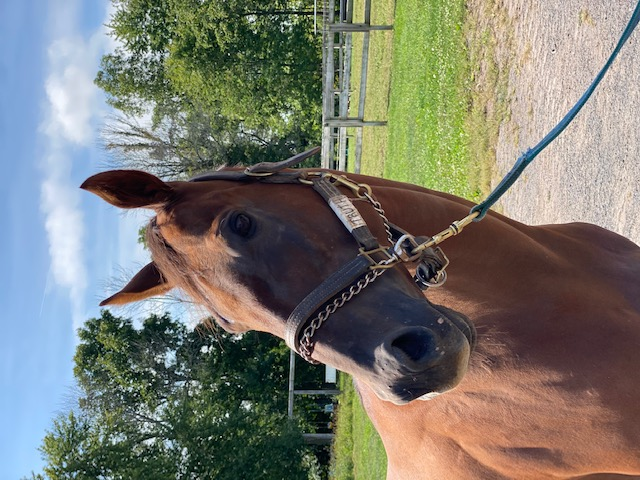
Located at a farm very close to the Finger Lakes Race Track in Shortsville, NY. Meetthetruth’s connections recently brought “Truth” to the farm so he can easily be seen by appointment by shoppers (COVID visitor restrictions are still in place at the track). Truth hails all the way from California! We don’t always see California breds here, but this one sure is a cutie. His connections report that Truth is a sweet boy who is easy to work around and has no stall vices. In 2017, Truth bowed his right front tendon. He was given ample time to fully heal and was very carefully rehabbed. It is reported that the tendon is now tight and cold and does not impact him. Truth’s trainers report he has no soundness concerns. His handler told us that he is great in individual turnout. They feel he would also turn out well in a group, it’s just not part of the routine at his current farm. Truth is eligible for RRP 2021. Meetthetruth is by Rendezvous out of a Stephen Got Even mare. This is a bargain price for such a quality gelding, so we suggest calling quickly if he checks all the boxes for you! https://www.equibase.com/profiles/Results.cfm?type=Horse&refno=9734998®istry=T
http://www.youtube.com/watch?v=b_rp0GKZRTg Price: $850 Contact: Jamie Boldt 585-943-4298 (text preferred) A pre-purchase exam is always recommended. For information about on track vet practices who are available to do PPEs, please see the post pinned to the top of our FB page, or the How to Buy menu tab on our website.
Blessed Honour, 2015 16.1h grey gelding
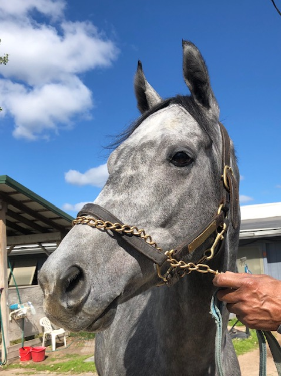
Located at Finger Lakes Race Track, Farmington, NY This gorgeous grey definitely needs a new career other than racehorse: in 33 starts he has yet to win. But he has shown his sturdiness and durability and willingness to try, and he is described by his trainer as very sound -- just slow. He has great potential for any new career direction you want to take him in. The trainer says he is good to handle, has no vices, and we observed a clean legged horse who stood politely for his photos. He had raced just a couple of days before we saw him, but he showed no post race stiffness in his jog video as he moved well... although he had a hard time keeping up with his trainer who ran too fast for a comfortable jog, so he started to canter a bit. He is by The Lumber Guy, who is by Grand Slam -- a sire popular in the sport horse world. His dam is by Aptitude, who is a son of AP Indy. It is rare to find young grey geldings offered at a bargain price, so we think you should move fast if you are interested in this one! Price: $1000 negotiable Contact: Ortis Henry 585-364-4711
https://www.equibase.com/profiles/Results.cfm?type=Horse&refno=9923575®istry=T&rbt=TB
A pre-purchase exam is recommended. For information about on track vet practices that are available to do PPEs please see the post pinned to the top of our page or the How to Buy menu tab on our website.
Tenacious Rose, 2015 15.3h gr/roan mare
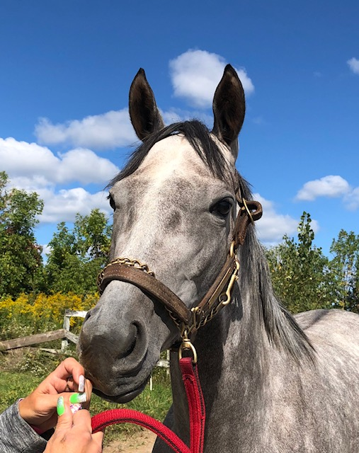
Located at Finger Lakes Race Track, Farmington, NY Rosie is so pretty that we just kept taking more pictures, as she happily posed in the sun while getting mints from her handler. We listed Rosie last fall, and she quickly was placed, but on the eve of her shipping, the purchaser had a setback that precluded getting a horse. By that time the race meet was almost over so the owner/trainer decided to take Rosie to his farm for the winter, let her enjoy turn out, and brought her back into training this summer. The winter off did her good and let a little bit of ankle wear and tear heal, and her handler reports that she is sound with cold and tight ankles. But after starting this racing season with a promising third place, in her two most recent races she has shown that her heart isn't really in the racing game anymore and she would prefer to move on to a new career. Over er racing career she has been a "tenacious" good little racehorse, with 3 wins and 13 in the money finishes in 21 races. She is fully eligible for the 2021 RRP. Her handler says that Rosie is a well behaved mare, good in turn out, has no vices, but will be best with an experienced person that she can bond with, because she can occasionally get a bit fussy or impatient if she thinks the human isn't doing things right (like not giving her enough peppermints!). She was super polite and quiet and friendly for her photo session and jogged quietly, showing balanced light movement with some spring to her step. Rosie has nicely proportioned balanced and compact conformation, with a nicely sloping shoulder and depth through the heart girth. We think this mare could transition to a variety of new careers and her pedigree indicates this as well. She is by Drosselmeyer who traces bloodlines to Mr.Prospector, Danzig, Nijinsky and Seattle Slew. She is out of a mare named Tenacious who is by the coveted sports sire, Marias Mon, noted for siring horses who are good movers and jumpers that are also kind and smart. Price: $1,500 negotiable Contact: Adrianne D'Alessandro 585-281-1810
https://www.equibase.com/profiles/Results.cfm?type=Horse&refno=9925170®istry=T&rbt=TB
A pre-purchase exam is recommended. For information about on track vet practices that are available to do PPEs please see the post pinned to the top of our page or the How to Buy menu tab on our website.
Friendship Seven, 2015 16h bay gelding
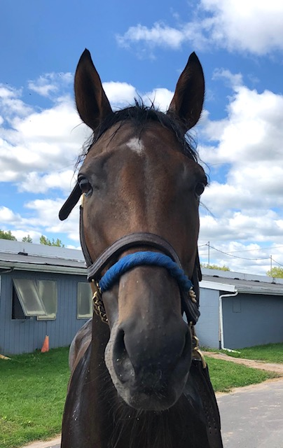
Located at Finger Lakes Race Track, Farmington, NY We were quite impressed with the powerful solid boned build and strong shoulder on this guy -- he just spoke athleticism and "sport horse potential" to us. But he was pumped up with excitement at being asked to jog outside on a crisp morning, just out of the cold water wash rack, when he had not done more than walk the shed row for a few weeks since his last race, so he did not relax and show his true movement and potential for his jog video. We saw tantalizing hints of very good movement; to get a better impression we watched the video of his one winning race, and in the gallop out and trot back we saw great movement, a big balanced efficient and ground covering stride. The trainer says he is a good horse to work with, has no vices, and he does well in turn out at his farm. He said that after finally winning a race after several tries last year, Friendship Seven has not been competitive in the next level of race conditions against winners, so it is time to find him a new career. The trainer reports that Friendship Seven has had some fluid on his knee, but that he has not been sore on the knee, and that it has not caused him any problems. On the day we photographed him his legs were clean and we could not feel any fluid or heat in the knee. He has 14 starts, with one win and 4 seconds. He has raced this summer, so he is fully eligible for the 2021 RRP. He has a very good sport horse pedigree, one oriented towards turf racing. His sire Soldat was a turf stake winning son of the great sire War Front, a son of Danzig. His dam is by Dehere, a son of Deputy Minister out of a Secretariat mare. Friendship Seven's second dam was a major turf stakes winning daughter of Nodouble, a source of durable stamina in TB lines. Price: $2,000 negotiable Contact: Sal Iorio 585-455-4019
https://www.equibase.com/profiles/Results.cfm?type=Horse&refno=9893844®istry=T&rbt=TB
A pre-purchase exam is recommended. For information about on track vet practices that are available to do PPEs please see the post pinned to the top of our page or the How to Buy menu tab on our website.
Deseronto, 2017 16.1h chestnut gelding
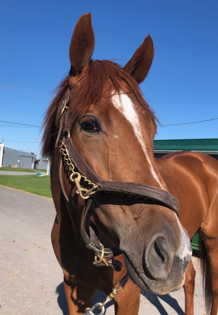
This handsome young guy with beautiful movement has been with his owner/trainer since he was a weanling, so you can learn his whole history from them. He has shown little racing ability in his 3 starts, but he shows huge potential for many new disciplines, including show hunter, dressage, and eventing. His trainer, who also rides him, says he has a very soft way of going, and "the most comfortable dream of a trot" that she could ride all day! Deseronto is described as sound -- she says "he has never had a pimple on him." Deseronto has raced this year and has recent workouts, so he is fully eligible for the 2021 RRP. Since Deseronto was gelded earlier this year his trainer says he has become more focused and easy to handle and the trainer also reports that even when he was a two year old stud colt her teenage daughter and niece played with him and groomed him and loved on him in his stall. He is reported to be good in turnout with other horses, and without any vices. For his jog video Deseronto showed off a flowing big strided trot, even after he had breezed on the track earlier that morning. He is by Honorable Dillon, who is a son of Tapit out of a mare from the Blushing Groom line, and his dam, Try Your Best, has strong turf breeding, by Breeder's Cup Turf Mile winner Royal Academy who is a son of Nijinsky out of a mare by Arazi which brings in another cross of Blushing Groom. Price: $2500 negotiable Contact: Lauren Linn 585-867-1157
https://www.equibase.com/profiles/Results.cfm?type=Horse&refno=10271315®istry=T&rbt=TB
A pre-purchase exam is recommended. For information about on track vet practices that are available to do PPEs please see the post pinned to the top of our page or the How to Buy menu tab on our website.
MARRIED TO ANYA, 2014 16h bay gelding -- retained for racing
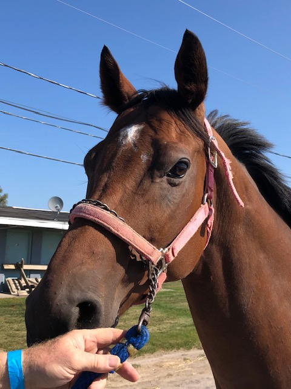
Located at Finger Lakes Race Track, Farmington, NY On a day when we saw several handsome solid bodied horses, this guy gets the beefcake award! Not only is he a solid hunk of horse, but he's quite pretty, well balanced, and a good mover too. His handler says he is sound, mellow, and very good to handle with no issues or vices. Anya certainly acted mellow as he posed like a statue in the sun and politely did everything he was asked to do. He showed off a lovely light trot with good suspension and engagement from behind, and a flowing walk with a big step. Anya had raced just three days before his photo session, and he certainly wasn't showing any tightness or ill effects from that effort. To add to the enticing package, Married to Anya has a an ideal sport horse pedigree full of some of the most sought after sires. He is by Posse, who is a son of Silver Deputy (Deputy Minister line) and a mare by Rahy (Blushing Groom and Halo lines). Anya's dam, Significant Other, is by Not for Love, who is one of the sries most coveted by people looking for both eventing and show hunter prospects. We have listed and placed several Posse offspring, and they are known for solid bodies, good brains, good balance and movement and jumping ability. Anya has had 39 starts, with 4 wins, 5 seconds, and 6 thirds, but this summer his racing performances haven't been what they used to be, so it's time to find a new career. He has no limitations for any discipline, and great potential for so many. Price: $3,000 negotiable Contact: Victor Dean 585-481-4433 (text or call)
https://www.equibase.com/profiles/Results.cfm?type=Horse&refno=9679163®istry=T
A pre-purchase exam is always recommended. For information about on track vet practices that are available to do PPEs please see the post pinned to the top of our page or the How to Buy menu tab on our website.
MIKEKNOWSBEST, 2014 16.2h dark bay gelding
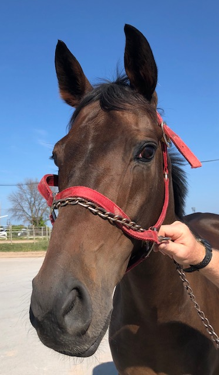
Located at Finger Lakes Race Track, Farmington, NY Big handsome Mike is a homebred so his owner can tell you his entire history. And his pedigree is outstanding for eventing/sport horse disciplines! The owner described Mike as a very sensible and friendly horse, no issues or vices, very sound, clean legged, but just too slow to be a racehorse. Mike has had only 5 races, and has always been well behind the pack. He didn't even make his first start until last fall, so he was never rushed as a youngster and was allowed to fully mature before put into training. Mike gleamed with dappled good health, was very polite and well behaved for his photo session, and showed a big strided walk and light jaunty trot for his jog video. He is fully eligible for the 2021 RRP. His sire is Encaustic, who is by Broad Brush out of a Stop the Music/Hail to Reason mare. Broad Brush has sired many sport horses and steeplechasers, and the Hail to Reason line is also known for stamina and jumping prowess. Mike's dam, Dancin Daze, is by Cure the Blues, another son of Hail to Reason, out of a Dr. Fager mare. Mike's second dam is by Valid Appeal, from the In Reality/Intentionally sire line. Mike should be on the lists of anyone looking for an eventing prospect but he has unlimited potential for any discipline you want to do with him. Price: $2,000 negotiable Contact: Eric Sharp 585-924-3174 (home phone landline -- no texts! 7 pm is a good time to reach him; Ok to leave a message, and please no calls after 9 pm)
https://www.equibase.com/profiles/Results.cfm?type=Horse&refno=9805892®istry=T
A pre-purchase exam is always recommended. For information about on track vet practices that are available to do PPEs please see the post pinned to the top of our page or the How to Buy menu tab on our website.
I'M NOT FUNNY, 2015 16h dark bay gelding
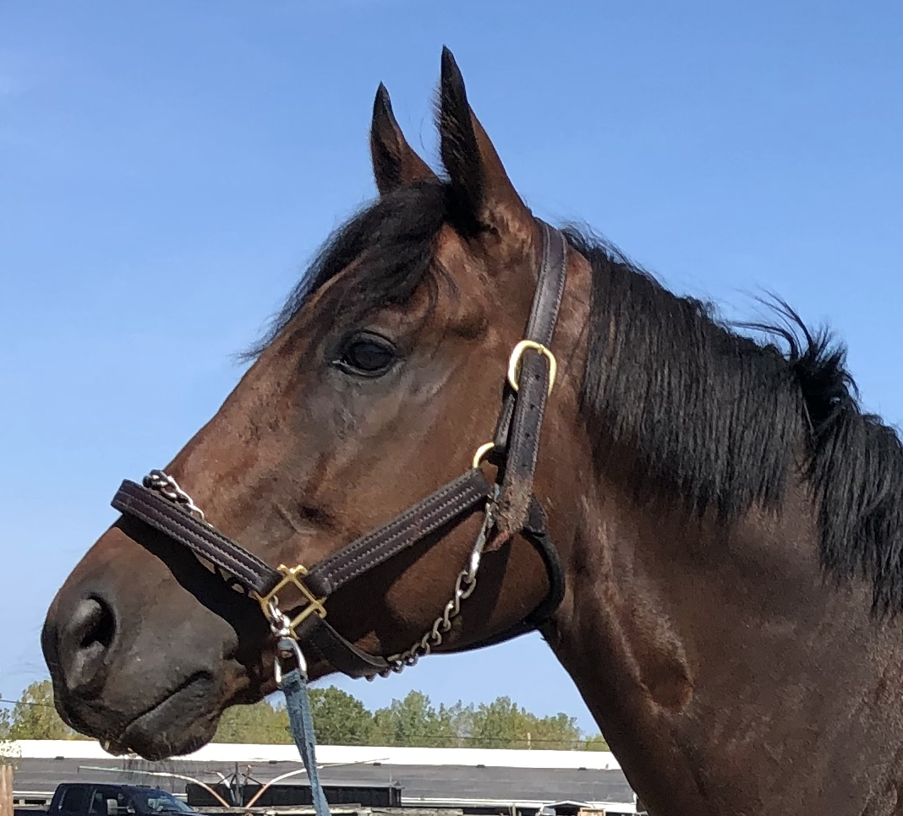
Located at Finger Lakes Race Track, Farmington NY On a day when we saw almost two dozen really nice horses, this gorgeous hunk is the overall top pick of our volunteer who has a knack for picking out top show hunters! But just because her eye says "fancy show hunter," your eyes can just as readily and legitimately say top event or dressage prospect. He is stunning in person: excellent solid bodied balanced conformation with a strong shoulder and hind end and a deep heart girth, and a kind intelligent eye. His groom and trainer both said he is a wonderful horse, kind, great to handle, quiet and laid back, no vices, a quality guy. His trainer also comes from a show hunter background and she strongly agreed that he is an excellent show hunter prospect. He showed beautiful movement for his jog video, trotting quietly on a loose lead with a light cadence, good hind end engagement and reach from his shoulders. Funny does have an old set osselet on his left front ankle; his trainer says he had it when he came to her, and that he has been 100% sound on it the entire time he has been in her care. She flexed the ankle in front our volunteer while Funny was being groomed for his photo session to demonstrate that there is full ankle movement. I'm Not Funny is by D'Funnybone out of a Grand Slam mare. He is entered to race on October 6, and then will be ready to move on to the next chapter of his life. Price: $2,500 Contact: Rachel Sells 585-748-0983 http://www.equibase.com/profiles/Results.cfm?type=Horse&refno=9893404®istry=T
A pre-purchase exam is always recommended. For information about on track vet practices that are available to do PPEs please see the post pinned to the top of our page or the How to Buy menu tab on our website.
NEW STONES, 2016 16.2h gr/roan gelding
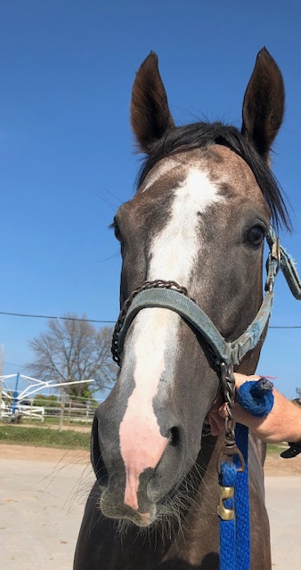
Located at Finger Lakes Race Track, Farmington, NY This stunning big young gelding has a lot of fans already! His breeder has been in touch with us to say what a wonderful loved horse he is and they desperately want to be able to keep in touch with whoever is lucky enough to get him. And other people who have worked with this horse and loved him have also let us know that they have been following him and want to get him or to keep in touch with whoever does. These are rare and very important indications that this horse is indeed very special! New Stones is described by his handler as a very playful and friendly horse who loves people and attention and interacting. He also says that New Stones is sound and has no issues or vices. We were mesmerized by New Stones' beautiful spotted dark roan good looks with lots of flashy chrome. He also showed very good movement for his jog video. It took New Stones a while to finally win his first race last year, and since that maiden victory he has not been competitive in racing conditions against other winners. He has 21 starts, one win, and six seconds or thirds. This year, he has always run far back in the field. Since it appears that racing is not his game, and it seems so obvious that with his size, looks, and movement that so many sporting disciplines are where he can shine, as his handler said to us, "he needs to find a new job." He is fully eligible for the 2021 RRP. New Stones has an exceptional sport horse pedigree. He is by Old Fashioned, a son of Unbridled's Song from Prince John and Hoist the Flag stout lines on the dam side. New Stones' dam Wellsong is by El Prado,who is a son of the great Sadler's Wells out of a Sir Ivor mare. Many people in the sport horse world will attest that Unbridled's Song and Sadler's Wells close up in the pedigree are ideal! There is already a line forming of people who want this horse.... so don't hesitate to call and be the lucky one! We request that whoever buys him please let us know through a Message, so that we can put you and the breeder's daughter in touch so that the breeder can follow this beloved and special horse. Price: $5,000 firm Contact: Victor Dean 585-481-4433
https://www.equibase.com/profiles/Results.cfm?type=Horse&refno=10051333®istry=T
A pre-purchase exam is always recommended. For information about on track vet practices that are available to do PPEs please see the post pinned to the top of our page or the How to Buy menu tab on our website.
SACRED CANYON, 2011 16.3h bay mare
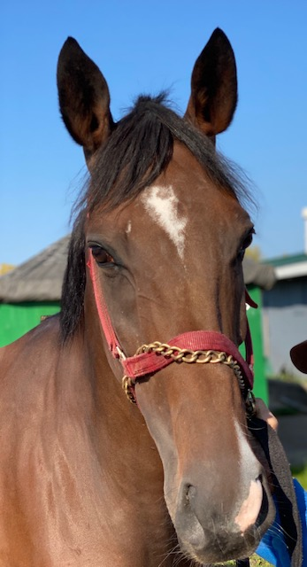
Located at Finger Lakes Race Track, Farmington, NY Sport horse breeders take note: we think this big attractive and solid bodied mare is an excellent sport horse breeding prospect. She has a big heart and great work ethic, with 9 wins, and 24 top three finishes in her 48 races, with an impressive $174,000 in earnings. She has certainly earned a great retirement to a loving home. She has an old large osselet on a front ankle that she has raced on for several years, but it has started bothering her after she races. She had raced 5 days before we took her photos, and she was still off at the jog. Her owner had just pulled her shoes because he had decided to retire her, and she jogged barefoot as well. He says that she should be fine for flat work and trails and pleasure riding. He says she is a good girl, and that he can groom her in her stall without tying her and he can also clean out her stall while she stands untied in it. He says she can be a bit aloof with new people until she gets to know you, but once she does she really warms up to you and is a great mare. She has an impressive uphill build and strong shoulder and good bone -- ideal qualities to pass on to offspring. She also has some excellent sport horse and turf stamina sire lines in her pedigree. Her sire El Medwar is a grandson of Gone West and Danehill (Danzig and Ribot lines). Her dam is by Sky Classic, who is from Nijinsky and Nodouble lines. Secretariat, Northern Dancer, and Princequillo are other illustrious sires in her pedigree. Price: $750 negotiable to an excellent home Contact: Randy Peters 757-945-8977 (text or call but PLEASE do not call after 5 pm).
https://www.equibase.com/profiles/Results.cfm?type=Horse&refno=9101109®istry=T
A pre-purchase exam is always recommended. For information about on track vet practices available to do PPEs please see the post pinned to the top of our FB page or the How to Buy menu tab on our website.
Bustin to Get Home, 2013 16.1h chestnut gelding
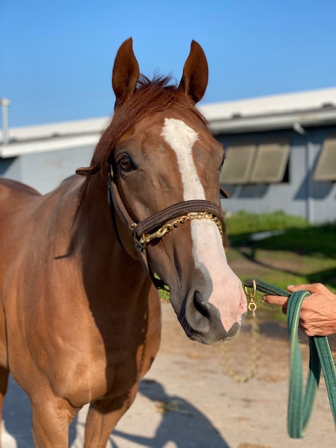
Located at Finger Lakes Race Track, Farmington, NY This handsome solid boned gelding impressed us with his strong shoulder and hind end, and his friendly and alert expression. His trainer says that he is sound, has no issues, is a good horse to be around and work with, and that during the off season when he is at her farm he is quiet, great to handle and good in turn out with other horses. Bustin had raced 4 days before we saw him, and just walked in the shed row in the interim, so he was happy and a tad frisky to be outside. He showed good movement with a light and balanced trot. He has been a good durable hard trying racehorse, with 68 starts and 25 top three finishes, but this year he is not showing the same enthusiasm for racing, so his trainer thinks it is time to let him find a new career. He can go in any direction and has no limitations. He shows the solid body and athleticism and work ethic to make a good barrel horse, or eventing, jumping or dressage. He is by Bustin Stones, who is a son of City Zip; his dam is by Brocco who is from the Kris S./Roberto sire line so coveted in sport horse disciplines. Price: $1500 negotiable Contact: Donna Bireta 585-281-3058 https://www.equibase.com/profiles/Results.cfm?type=Horse&refno=9460180®istry=T
A pre-purchase exam is always recommended. For information about on track vet practices that are available to do PPEs please see the post pinned to the top of our page or the How to Buy menu tab on our website.
BENNY AND ALEX, 2013 16.2h grey gelding: retained for racing
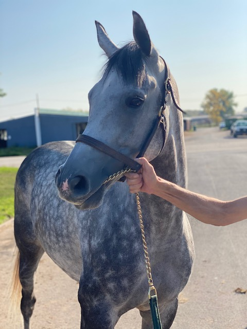
Located at Finger Lakes Race Track, Farmington, NY Hello gorgeous! This guy certainly got our attention with his chiseled Arab-like head, dazzling dapples, strong shoulder and solid boned conformation. Benny's trainer says he is sound and she emphasized that while he gets a bit strong at the track, on her farm when he is getting turn out he is just a "good, good guy." She has had him on her farm during the last three winters and she said he is just a pleasure to work with and he is good in turn out with other horses. Benny showed very good movement for his jog video, with a flowing walk, and strong push from behind that suggests to us that eventing and dressage might be ideal new careers for him. Benny has had 58 starts with 23 top three finishes and over $100,000 in earnings, so he has shown his heart and durability... and he's eligible for the war horse awards at the RRP Makeover. He has a great sport horse pedigree. His sire, here Comes Ben, is by Street Cry out of a Danzig and Halo line mare. Benny's dam is by Royal Academy, a son of Nijinsky, and is out of a daughter of Grey Dawn. Benny's tail female line is the famous La Troienne mare line, the best in the US TB stud book. Big sound grey geldings tend to be very popular offerings, so don';t hesitate if you are interested in making Benny and Alex your new sport horse star! Price: $3500 Contact: Donna Bireta 585-281-3058 https://www.equibase.com/profiles/Results.cfm?type=Horse&refno=9497538®istry=T
A pre-purchase exam is always recommended. For information about on track vet practices that are available to do PPEs please see the post pinned to the top of our page or the How to Buy menu tab on our website.
Scott Frost, 2017 15.2h dark bay gelding
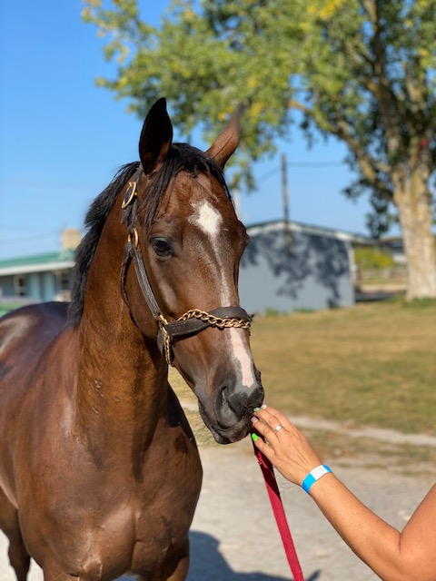
Placed immediately
Rollo Lothbrok, 2015 17h bay gelding
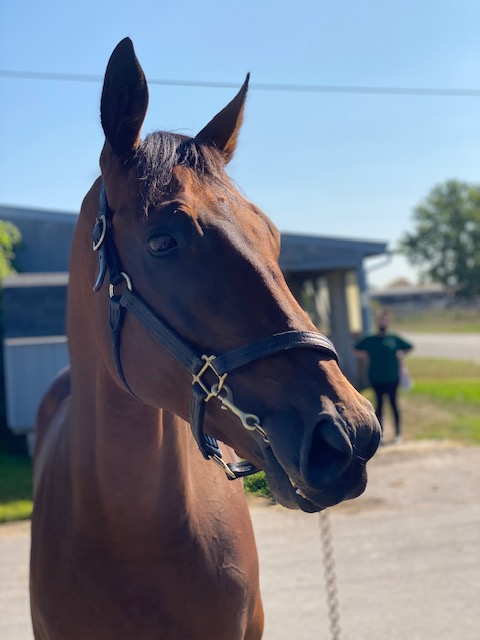
Located at Finger Lakes Race Track, Farmington, NY. Named after a Viking nobleman and warrior from the History Channel series Vikings, this big handsome horse is indeed noble! His handler, who is the trainer's daughter, raved about him, saying he is "a quality, quality, horse," with a great personality. She reports that he is very balanced and light under saddle, and that he is so well behaved on the track that he doesn't need to stay with a lead pony. She said that Rollo is the kind of horse that she would race one day, and take right to the show ring the next day! (She knows, because she does this with her ex-race horse who is now her pony horse for the racehorses.) She says that he can be a little bit pushy sometimes on the ground, but that he really doesn't have bad manners. Rollo has impressive big bone and clean legs. He is a beautiful mover -- he showed off that balanced lightness and float that his handler described when he jogged for her on a loose lead. His movement is fancy enough for the show hunter ring, and he also sure does seem like an upper level dressage or eventing prospect. Rollo has 24 starts, with 3 wins and 7 additional top three finishes. He is fully eligible for the 2021 RRP. Rollo is by Posse, who is from Deputy Minister, Rahy and Blushing Groom lines. We have placed many Posse offspring and they are known for being solid boned, sensible, good movers and jumpers. Rollo's dam is from AP Indy, Allen's Prospect, and Lord Avie lines.Rollo is entered to race on Oct. 7, and he will ready to go after that. Get in line for this quality big horse!
Price: $5,000 firm
Contact: Dana Saul 315-871-9383
https://www.equibase.com/profiles/Results.cfm?type=Horse&refno=9903199®istry=T
A pre-purchase exam is always recommended. For information about on track vet practices available to do PPEs, please see the post pinned to the top of our page, and the How to Buy menu tab on our website.
DR. MAC, 2017 16.1h dark bay gelding
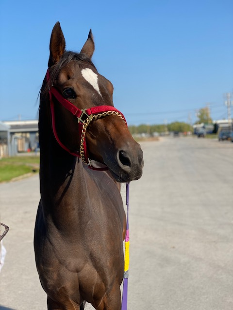
Located at Finger Lakes Race Track, Farmington, NY When our volunteers saw this gorgeous dappled young horse we nicknamed him "Dr. McDreamy," even before we saw his fabulous floaty movement! Mac is one of his trainer's all time favorite horses -- she just adores him. She reports that you can do anything with him, and that he wants to be a pet, with his true goal in life to eat peppermints and soak up your affection. She states that he is completely sound, and we observed clean legs. She says that he has a good work ethic and likes to train, but in the few races that he has had he has shown no interest in going faster than the other horses. He has 6 races, and has nothing better than a 5th place finish to show for it. Mac is a beautiful mover -- he showed off a flowing walk and a floaty trot with good hind end engagement and reach from his shoulders. With this movement he can be McDreamy indeed in many disciplines, from show hunters to dressage to eventing. His trainer said she thought he would be great going cross-country. He is still growing and is likely to get a bit bigger. When he is fully mature and filled out he will live up to the McDreamy nickname we gave him. His pedigree is great for sport disciplines. He sire is Dr. Large, a son of A P Indy and a mare from Mr. Prospector, Northern Dancer, and Buckpasser lines. Mac's dam is by Quiet American, who is a desirable sport horse sire from the Fappiano line, and in her female line she has Pleasant Colony and Stage Door Johnny. With these stamina lines, Mac should relish cross country galloping. Price: $5,000 Contact: Linda Dixon 585-329-9062 text or call
http://www.equibase.com/profiles/Results.cfm?type=Horse&refno=10263433®istry=T&rbt=TB
A Pre-purchase exam is always recommended. For information about on track vet practices available to do PPEs, please see the post pinned to the top of our page, and the How to Buy men tab on our website.
CHARLIE RIFFIC, 2014 17h bay gelding
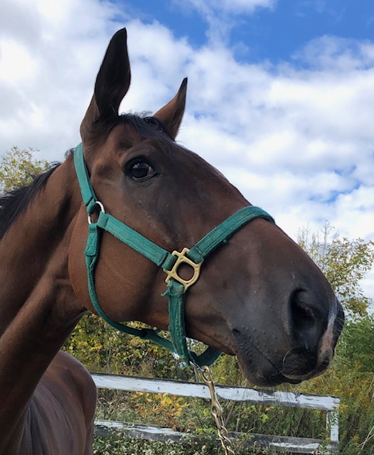
Located at Finger Lakes Race Track, Farmington, NY Ter -Riffic indeed! The photos absolutely just do not do justice to this big, gorgeous warmblood imposter with a great personality and fabulous movement!!! On the day that we had the privilege of photographing the fabulous Charlie, we had a new volunteer with us who was also looking for her own dream upper level event horse prospect -- and out of 23 great horses that we saw Charlie was her first choice. But the trainer said that Charlie had to race one more time in October before he would let him retire from racing and go on to a new career. So this very savvy person who with good reason thought that Charlie was an outstanding upper level sport horse prospect had to pass him by just due to the timing of an available trailer and stall. Well, for those of you who are serious about getting an outstanding upper level eventing/jumpers/rated show hunters prospect, this is your great opportunity! Charlie should be at the very top of the list for anyone who is seriously looking for an upper level sport horse prospect. The photos just do not show how fabulous he is... just watch his video where he shows light and lofty and flowing big strided movement! Trust us -- we saw him in person, and he is stunning! He has a noble and elegant presence. He has great bone and a strong sloping shoulder. He has great big strong feet. He has a friendly and loving personality. He is a beautiful mover with a balanced, light, and lofty trot and a big flowing walk with a big overstep. He is adored by his groom, and by his handler who is the trainer's daughter -- she says he knows his name and responds when you call out "Charlie," and that he loves getting his butt scratched. He is described as an an all around good guy to handle and work with and ride, with no vices or issues, sound and clean legged. He has spent winters on his trainer's farm and he is reported to be good in turn out with other horses. Charlie is a Massachusetts bred, and his racing success has been in races restricted to MA breds. In past years, Finger Lakes had races limited to MA breds, but this track no longer offers these races, and Charlie has not been as competitive in races open to any horses. That is the only reason why they want to find him a new home and career. Charlie has 35 starts, 2 wins, and 6 second place and 5 third place finishes. Charlie's sire Field Commission is from Deputy Minister and Broad Brush sire lines. His dam is by Chief Seattle, who is a son of Seattle Slew, out of a mare from the Halo line. These are great sport horse bloodlines! Charlie is one of the top sort horse prospects we have listed, so dont' wait to make him a star in a new career! Price: $5,000 Contact: Adrianne D'Alessandro 585-281-1810
https://www.equibase.com/profiles/Results.cfm?type=Horse&refno=9685450®istry=T
A pre-purchase exam is always recommended. For information about on track vet practices that are available to do PPEs please see the post pinned to the top of our page or the How to Buy menu tab on our website.
HURRICANE ANDY, 2012 16.1h bay gelding
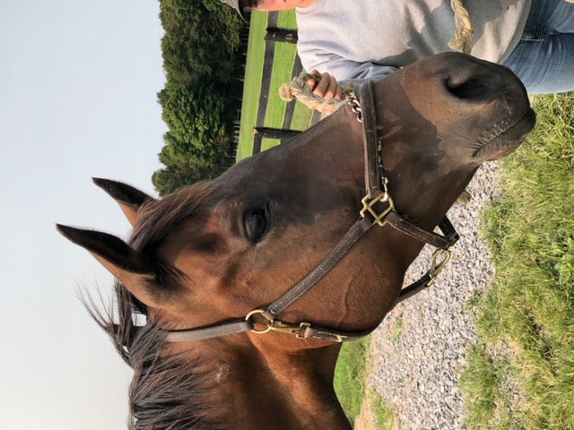
Located at a farm in Avon NY, where he can be seen in person with an appointment Hurricane Andy is the sort of horse that anyone should want in their barn! He is described as a very calm and sweet horse, who loves hanging out with his gelding turnout buddies. And on the track he was a model of consistency with a great work ethic, always trying hard and bringing his best. In his 29 starts, he won 10 races, with an additional 6 seconds and 4 thirds, accumulating over $110,000 in earnings. With so many wins, there were increasingly few races that he would be eligible to compete in, and when the Finger Lakes racing season was delayed this year due to COVID, his owner/breeder decided that the wonderful Andy had earned a great retirement and sent him back to the farm where he was born and raised so that he could find an ideal new home and career. The farm owner informed us that she got a vet assessment on Andy when he arrived, and he is reported to be sound. He has already been let down, so he is ready to restart in a new career. In the jog video that the farm owner sent to us, Andy shows a flowing walk and a lovely trot with good push from behind and good reach from the shoulders. Andy last raced in September of 2019, so he should be eligible to compete in the 2021 RRP. Andy can go in any direction.... eventing, dressage, hunter paces, foxhunting, trail riding... we think he will be happy and bring his great brain and work ethic to whatever you want him to do. Andy has a pedigree full of stout old TB lines that are known for producing good sport horses. His sire is Key Contender, who is by Fit to Fight (from the Bold Ruler line) out of a Key to the Mint mare. Andy's dam, Crashing Through, is by Senor Speedy out of a Best Turn granddaughter. Ribot, Turn-to, Princequillo, Bold Ruler -- the durable coveted great TB lines of the past -- are all prominent in his pedigree to an extent not often seen in modern TBs. Andy's younger half brother out of Crashing Through was placed through FLF last year, and he is demonstrating gorgeous jumping form, great movement, is sweet and quiet like Andy, and is already enjoying going on hunter paces and cross country schooling. Note: because Andy is located at a private farm, you must contact the farm owner to make an appointment to come see him. She said she could ride him to show how he goes under tack. Price: $1,000 very good home essential Contact: Sue Carlson 585-734-8531 (text only please)
https://www.equibase.com/profiles/Results.cfm?type=Horse&refno=9305658®istry=T&rbt=TB
A pre-purchase exam is recommended. Since Hurricane Andy is not at the track, you are not limited to the on track vet practices for a PPE. You can find information about vet practices in the area of the farm under the How to Buy menu tab on our website.
Ukiah, 2016 15.3+h bay filly
Located at Finger Lakes Race Track, Farmington, NY Frost Giant fans, better act fast to try to get this lovely daughter of that coveted sport horse sire! With her good looks and movement we have a feeling she is going to be popular. In her 6 races, Ukiah has shown no racing aptitude, so her trainer wants to find her a new career. She is described as very sensible and level headed, good to handle with no vices, and sound. We observed clean legs and a very polite and respectful filly who did whatever her handler asked. She has a strong shoulder and a deep heart girth, with an elegant neck and head. Her dapples and chrome add to the pretty picture; when she finishes growing into her leggy frame and fills out she is going to be stunning. She jogged politely, showing a big and light trot. She is by Frost Giant, who is a son of Giant's Causeway out of a Gone West mare. Her dam, Apocolyptic, is by Hickman Creek, who is a son of Seattle Slew out of a Buckpasser mare, and she is out of a mare by Silent Screen, by Prince John. We have placed many Frost Giant offspring, and everyone that we know who has them always wants more. They are succeeding in eventing, in dressage, and in the hunter ring. They are known for good brains and work ethics, jumping ability, and good movement. Price: $2500 Contact: Adrianne D'Alessandro 585-281-1810
https://www.equibase.com/profiles/Results.cfm?type=Horse&refno=10069820®istry=T&rbt=TB
A pre-purchase exam is recommended. For information abut on track vet practices available to do PPEs, please see the post pinned to the top of our page or the How to Buy menu tab on our website.
Chenais' Posse, 2015 16.2h bay mare
Located at Finger Lakes Race Track, Farmington, NY Looking for an outstanding sport horse prospect? Here she is! This big elegant mare is described by her trainer as a really nice horses to work with and be around, sound and clean legged with no vices and a good work ethic. The trainer says that Chenais has good stamina and is a forward horse -- sounds ideal for eventing and cross country! We think she is an excellent upper level sport horse prospect. She has an alert, kind and intelligent expression, and she is well put together with a balanced build, strong shoulder and hind end. She has been racing well, bringing home checks, but given the difficulties of this year, the trainer knows she has to downsize and she wants to let this mare go on to a new career while she is still sound and full of unlimited potential. We saw Chenais only two days after she had raced, and for her initial jog pass on the pavement she was slightly tight (but not nearly as stiff as a lot of horses right after they race), but for her second pass she warmed up and showed very good flat kneed movement with good flow and reach. We also watched the videos of her winning races, and we observed a ground covering big fluid gallop stride and she runs well on both muddy and fast tracks. She should be a blast on cross-country! She has an ideal sport horse pedigree. She is by Posse, who is from Deputy Minister and Rahy/Blushing Groom and Roberto/Hail to Reason sire lines. Her dam is a very well bred daughter of Unbridled's Song who is a half sister to stakes winners and producers. Posse tends to sire big, solid boned, pretty bays who are good movers, good jumpers, and good brained horses. Price: $3,000 negotiable Contact: Terry Genecco 585-820-2575
https://www.equibase.com/profiles/Results.cfm?type=Horse&refno=9863572®istry=T
A pre-purchase exam is always recommended. For information about on track vet practices available to do PPEs, please see the post pinned to the top of our page, and the How to Buy menu tab on our website.
APRILFOOLEDYA, 2014 16.2h dark bay gelding
Located at Finger Lakes Race Track, Farmington, NY
Meet "Joker," a beautiful friendly guy who just doesn't want to be a racehorse. In his seven races, he has always run far back in the pack. But with his good looks, solid build, and kind personality he has so much potential for the discipline of your choice. Joker's trainer says he is very good to handle on the ground and quiet to ride under saddle, and that he has no vices. He says Joker has always been sound. We photographed him two days after he had raced, and we observed a bit of a hitch in his step behind. The trainer reiterated that Joker has always been sound and has no issues, and said the dry and cuppy track surface this year has led several horses to feel hind end post-race effects for several days. We took a quick look at Joker 5 days after we took our video, and he looked fine and showed good movement. Joker is reported to be good in turn out, where he prefers to have a buddy. Joker is by a stallion, Dark Mystery, who was primarily used for show horse and sport horse breeding, so that bodes well for Joker's potential in a new career.
Price: $2,000 negotiable
Contact: Eddie Maver 786-285-2047
https://www.equibase.com/profiles/Results.cfm?type=Horse&refno=9693683®istry=T
A pre-purchase exam is always recommended. For information about on-track vet practices available to do PPEs, please see the post pinned to the top of our page or the How to Buy menu tab on our website.
BOLD LITTLE BABY, 2015 16+h bay mare -- retained for racing
Located at Finger Lakes Race Track, Farmington, NY
Sweetest horse EVER!! That is what the handler who showed this pretty mare to us kept exclaiming over and over -- that she was one of the sweetest horses she had ever dealt with. She said this was all the more remarkable because the mare is with a trainer who often makes his horses sour and grumpy, so the fact that this mare is so utterly sweet and loving and kind shows this is her enduring nature. She told us that Bold Little Baby has had periodic soreness in her right front knee, but it has not kept her from racing. Indeed, she had raced just three days before we took her photos and videos, and she showed a big flowing step at the walk and a nice flat kneed trot. We were told that her current trainer has not done any diagnostics on her knee. We think Bold Little Baby will be fine for flat work disciplines, and perhaps more depending on diagnostics on the knee. Like many of the trainers' horses, she is on the thin side, but with an upgrade and more TLC and groceries, she will fill right out. Bold Little Baby is a West Virgina bred, and the RRP offers a lucrative award for the highest placing WVa bred (and there are usually not that many of them in the competition). She spent most of her racing career at Charlestown, and came to Finger Lakes this summer. She has 24 starts, with 3 wins and 46% top three finishes, so she obviously has a lot of heart and try in her. Whoever brings this sweet girl home and gives her some time to recover from the rigors of racing is going to have a loving great horse to enjoy! Her sire is Siento El Trueno, by City Zip out of a Valid Appeal mare. Her dam is a Two Punch granddaughter.
Price: $1,000 negotiable
Contact: Marisa 315-719-9665
https://www.equibase.com/profiles/Results.cfm?type=Horse&refno=9897222®istry=T
A pre-purchase exam is always recommended. For information about on-track vet practices available to do PPEs, please see the post pinned to the top of our FB page, or the How to Buy menu tab on our website.
TOASTY BOY 2012 15.3+h., chestnut gelding
Wowza! Sometimes a horse surprises you when you are doing the research for their write up. Toasty Boy is certainly one of those. We loved our meet & greet with the exceptionally personable and super friendly Toasty Boy. We thought he was an adorable little peppermint hound. But little did we know what an awesome warhorse he is too! He’s had 74 starts with 7 wins and lifetime earnings of $105,976. And he still acts like a big, cuddle-bug baby! We were told that he is an absolute “ladies man” who loves to ham it up for all his female grooms and that he adores being groomed and fussed over. He has a solid, well-proportioned and well-balanced build. We can’t help but think that this, along with his chill personality, has helped keep him sound and feeling so good over his long and successful career. But his trainer feels that this year Toasty “just doesn’t want to be here at the track anymore”. In his five starts in 2020, he has yet to be on the boards. Don’t let his age (8) fool you, he still has plenty of go and is described as a happy horse who likes to “turn and burn”. His trainer suggested that he could “make a good little barrel horse” but felt he had the versatility to go in many different directions. We think with his cute, relaxed, movement, he’d do well in the hunter ring too. We’re told that he is “pretty calm and quiet”, good in his stall but that he will sometimes will stall walk if there is commotion, settling down again once everything is quiet. That pulling on his lead in his video at a walk, but not when he jogged? Ha! He was being a tad mischievous trying to “negotiate” a little extra grazing time with his groom, which totally cracked up this volunteer! So if you are into war horses, or dandys who fancy themselves quite a ladies man, or a peppermint hound aficionado that has plenty of get up and go, or an adorable boy who is ALL of the above, check out this cutie pie! And bring a box of Kleenex to hand out to all his grooms for when you put him in your trailer to take him home.
Price: $2,500 neg.
Contact: Joe Cabrera (315) 704-8256
https://www.equibase.com/profiles/Results.cfm?type=Horse&refno=9329972®istry=T
http://www.youtube.com/user/FLFinests/search?query=toasty%20boy
A pre-purchase exam is always recommended. For information about on-track veterinary practices available to do PPEs, please see the post pinned to the top of our FB page or the How to Buy menu tab on our website.
EYE’M GONE 2017, 15.3 h., dk bay filly
Located at Fingerlakes race track, Farmington, NY (Close to Rochester, NY).
“Oh!” gasped the volunteers in unison as we saw yet another pretty dark bay girl. This filly has a gorgeous, shiny coat and just enough flashy white chrome to boot! She is a refined and elegant looking girl who was as sweet and polite during her photoshoot as she was pretty. We loved her feminine head and pretty arched neck. She’s a baby, only 3, so we expect that she will grow and fill out to be a truly lovely mare who is sure to draw attention in the show ring. She has a long, sloping shoulder, good depth through her girth and nice short cannons. Even though she’s a youngster, she has an uphill build and was nicely filled out with nice depth throughout her entire body. During her video, she was quiet and polite, displaying a long, elegant walk, and a dainty trot. This sweet young filly would likely benefit from some downtime to mature, for some R&R, and to bond with her new person before starting her new job. We envision that she is one who will love being groomed and doted on. Eye’m Gone is by Central Banker and out of a Noonmark mare. Other notable sport lines in her pedigree include Gone West, Storm Cat, Halo, Unbridled and Damascus. In 8 lifetime starts, she has yet to place on the boards; although she currently has an entry for 10/05 if you would like to see her run. Someone is sure to quickly snatch up such a young, sweet, quiet and pretty girl , so you had better act quickly before “Eye’m gone”!
Price: $1,500, neg.
Contact: Ortis Henry (585)364-4711
https://www.equibase.com/profiles/Results.cfm?type=Horse&refno=10245189®istry=T
http://www.youtube.com/watch?v=VjsVwVV6b30
http://www.youtube.com/watch?v=3rPFUHdUuJQ
A pre-purchase exam is always recommended. For information about on-track veterinary practices available to do PPEs, please see the post pinned to the top of our FB page or the How to Buy menu tab on our website.
PUT UP R SHUT UP 2016, 16 h, dk bay mare
We started our day off right by visiting this lovely mare! We admired her gorgeous head and neck and nice, uphill build. This cute mare is solidly and correctly constructed with good depth through her heart girth and ample width to her chest. Plenty of room for lung capacity! She even has a pretty blaze on her face to add a little flare. We found her to be very polite during her photoshoot event though there was quite a bit of activity in the surrounding area. We were told that she is sound and has no stable vices, although admittedly, we were told that she is forward and can be a tad strong to ride. Eventers? Foxhunters? Are you taking note? This girl likes to go and move (and was a little sassy in her video), but as evidenced by our photo shoot, also has the good sense and manners that she will also stand quietly. She displayed some very nice movement for her video- decent overstep at the walk and a springy, relaxed jog. She has 12 lifetime starts, and after some initial success (2-3-2 record), she has yet to finish on the boards this year. As the race meet winds down, it is time to move her on to a new career. She is by Boys at Tosconova, who is noted for producing horses that are good jumpers and have great work ethics. One of our volunteers can attest to this, she adores her "Boys" mare, who has a fun personality, is a real trier and a hard-working, people pleaser! Put Up R Shut Up is out of a Cryptoclearance mare. She also has Halo and In Reality in her pedigree. Her cute name may sound like a trick (and yes, think of all that fun you can have with that!), but why not check her out and give yourself a nice treat before Halloween and the end of the race meet?
Price: $850
Contact: Jaime Boldt (585)943-4298 (text preferred)
https://www.equibase.com/profiles/Results.cfm?type=Horse&refno=10096609®istry=T&rbt=TB
http://www.youtube.com/watch?v=fsWss5VlBv8
A pre-purchase exam is always recommended. For information about on-track veterinary practices available to do PPEs, please see the post pinned to the top of our FB page or the How to Buy menu tab on our website.
AFLEET MICKEY 2016 14.2 h, dk.bay, g.
Located at Finger Lakes racetrack, Farmington (close to Rochester, NY).
The volunteers couldn’t wait to get their hands on this adorable, pint-sized cutie! We loved this sweet-faced pony. He was described to us as a, “nice, quiet, sweet guy who is very friendly” and that’s exactly what we saw during his photo shoot. We’re told that he is good in his stall, has no stable vices, and that he is agreeable to gallop on the track. Based on his friendly and curious demeanor, we certainly believe it! We noted his sturdy, compact build, nice proportions, and solid underpinnings. He remained quiet and relaxed during his video and displayed cute movement at the jog. He seems like he’s an athletic little guy with a good brain that would be fun to have in the barn. Granted, we estimated his height so he may be slightly taller than a literal pony and he’s certainly young enough that he could still grow a smidgeon. So, although you might not technically be able to show him as a literal show-pony, he would still be an excellent partner for someone looking for a shorter Thoroughbred; but with a decent width to his barrel, he will seem and ride bigger than what the measuring stick says. He might also be an excellent choice for those athletic pursuits that favor a compact horse with a low center of gravity- such as barrels, polo, or ranch work. And with his charming personality, he would probably relish being a family pet, pleasure and trail horse too! Mickey is by Fiddlers Afleet out of Ballymist, a Mt.Livermore mare. His lineage is peppered with many sport lines (Northern Afleet, Fappiano, Buckpasser, Blushing Groom, Hail to Reason) which bodes well for a variety of different athletic pursuits in his second career. Since he only has a single third place finish out of 8 starts, he’s being moved on because he’s not competitive as a racehorse. He has a 10/07 entry at the track if you’d like to see him run. Good things do come in small packages!
Price: $1,500 neg.
Contact: Ortis Henry (585) 364-4711
https://www.equibase.com/profiles/Results.cfm?type=Horse&refno=10091090®istry=T
A pre-purchase exam is always recommended. For information about on-track veterinary practices available to do PPEs, please see the post pinned to the top of our FB page or the How to Buy menu tab on our website.
SHE LOVES IT, 2016, 16.3, dark bay filly
Located at Finger Lakes Racetrack, Farmington, NY. This gorgeous girl boasts just as much character as she does good looks! She Loves It is a groom favorite that has no vices. She loves to play with toys in her stall and reminds everyone in the barn of a “big puppy”. This trainer prefers to see a bit more weight on his horses and noted that she is still growing and has been a bit of a hard keeper. She is reported to be sound and extremely easy to work around and with. She is straightforward to ride and is a favorite of her exercise rider as she is so smooth. She is reported to have a long stride and stretches out at the gallop. This big bodied, stunning girl demonstrated a lovely, flowing, relaxed jog.She’s sure to get you noticed in any arena. Our volunteers could easily see the eventing potential in this kind, beautiful mare. She Loves It has a regal pedigree, by Union Rags out of a More Than Ready mare. Her last race was 9/28/2020 making her fully eligible for the 2021 Thoroughbred Makeover!
http://www.youtube.com/watch?v=JJJpX5MKSKs
https://www.equibase.com/profiles/Results.cfm?type=Horse&refno=10052007®istry=T
Price: $4500 Contact: Joe Cabrera 315-704-8256
A pre-purchase exam is always recommended. For information about on-track veterinary practices available to do PPEs, please see the post pinned to the top of our FB page or the How to Buy menu tab on our website
NONEEDTOFLATTERME, 2014, 16h+, bay gelding
Located at Finger Lakes Racetrack, Farmington, NY. Calling all Flatter fans! This favorite stud for sport horse stamps all of his offspring and this trainer’s favorite does not disappoint! This gorgeous, personable guy boasts solid bone, a well-developed neck, and a deep barrel that could take up a taller rider’s leg easily. He’s reported to be sound, and despite only wearing one shoe, he demonstrated a long, relaxed walk and a quiet floating jog. While he can be a bit strong at the track, his trainer reports that she’s hopped on him at the farm and that he is levelheaded and laid back, true to most Flatter offspring. She reported no vices and that he is an easy keeper. While he has been competitive in the past, he hasn’t been showing the same speed this year and his trainer feels it is time for him to move into a different career. His last race was 9/24/19 so he’s fully eligible for the 2021 Thoroughbred Makeover. Noneedtoflatter me is by Flatter and out of a Tiznow mare. Both Flatter and Tiznow offspring are known for their fantastic brains and their jumping ability! We think this guy could succeed in just about any discipline! This guy is his trainer’s favorite and references will be checked.
http://www.youtube.com/watch?v=MI5aTX8Vs9E
https://www.equibase.com/profiles/Results.cfm?type=Horse&refno=9680536®istry=T
Price: $5,000 Contact: Julie Smith 585-500-5333
A pre-purchase exam is always recommended. For information about on-track veterinary practices available to do PPEs, please see the post pinned to the top of our FB page or the How to Buy menu tab on our website.
TOUSLED, 2016, 16.2h, bay filly
Located at Finger Lakes Racetrack, Farmington, NY. This dreamy, tall filly is as sweet and curious as they come. She snuggled volunteers as she politely begged for peppermints. This solid, well balanced girl’s coat gleamed in the sun, and despite some excited horses on the walker around us, she showed off her calm, levelheaded demeaner. Her trainer reports that she has no vices and is very easy to work around. Tousled is reported to turn out well with other horses and enjoys her time on the farm. She is reported sound, but “hasn’t beat a horse this year” so it is time for Tousled to become someone’s show horse. She was our easiest to photograph of the day, loving to pose for picture and soaking up the attention of our volunteers! She showed off a relaxed, over tracking walk and a flowy, relaxed jog. This young girl could go in any direction. She is by Majesticperfection out of a Broken Vow mare.
https://www.equibase.com/profiles/Results.cfm?type=Horse&refno=10075113®istry=T
Price: $3500 negotiable Contact: Julie Smith 585-500-5333
http://www.youtube.com/watch?v=WVHIh9eCELs
A pre-purchase exam is always recommended. For information about on-track veterinary practices available to do PPEs, please see the post pinned to the top of our FB page or the How to Buy menu tab on our website.
Q FOOLED ME, 2016, 16.1h, bay gelding
Located at Finger Lakes Racetrack, Farmington, NY
If you’re looking for an easy going, mellow, compact, well-muscled beef cake, Q Fooled Me is your guy! The trainer reports this guy can be a bit mouthy at the track, but that that is his only vice. He was definitely looking for his peppermints while our volunteers were photographing him, but he offered snuggles in return! The trainer reported that he is a good, straightforward ride at the track and that he is very easy on the farm and in turnout. He also reported that Q feels “much bigger” to ride because of his well-muscled, broad body, and deep barrel. His trainer reports that he is sound. He displayed a nicely relaxed, long walk with overstep and an easy relaxed jog. We think this guy could be successful in just about any discipline! He’s racing 10/6/2020, so he is fully eligible for the 2021 RRP Thoroughbred Makeover! Q Fooled Me is by The Lumber guy out of a Thunder Gulch mare.
https://www.equibase.com/profiles/Results.cfm?type=Horse&refno=10076025®istry=T
Price: $3500
Contact: Sal Iorio, (585) 455-4019 (text preferred)
http://www.youtube.com/watch?v=87uyo2XeLPE
A pre-purchase exam is always recommended. For information about on-track veterinary practices available to do PPEs, please see the post pinned to the top of our FB page or the How to Buy menu tab on our website
SECRET ALCHEMY, 2016, 16h, bay filly
Located at Finger Lakes Racetrack, Farmington, NY
This sweet lady was already wrapped for the evening, but she still wanted to come greet our volunteers. She stood alertly, watching other horses, but never let their commotion affect her at all! She is reported to always be this easy going, always sweet, and always easy to ride. The same horse every time you take her out of her stall. She is reported to be sound and to have no stable vices. She clearly loves her peppermints as she nuzzled our volunteers while we were photographing! This kind girl has a sweet eye and cute ears atop her lovely, chiseled face. She displayed a flat-kneed, effortless jog, despite already being wrapped for the evening. Secret Alchemy is by Sky Mesa, who’s by the highly revered and highly desired Pulpit, out of a Harlan’s Holiday mare.
https://www.equibase.com/profiles/Results.cfm?type=Horse&refno=10098292®istry=T&rbt=TB
Price: $2500 negotiable
Contact: Dana Saul (315) 871-9383
http://www.youtube.com/watch?v=mf7CEbvJbP4
A pre-purchase exam is always recommended. For information about on-track veterinary practices available to do PPEs, please see the post pinned to the top of our FB page or the How to Buy menu tab on our website
Chicken Valley Rd, 2016, 15.2+h grey gelding
Located at the Finger Lakes Race Track in Farmington, NY (near Rochester, NY). Think of all the fun you could have with this name at an event or show! “Chicken” is described as a sweet and sensible young gentleman. His connections report that he “never does anything wrong” and that his heart just isn’t in the racing game anymore. They think he will make a great riding horse in a different discipline. Chicken is reported to be retiring sound and without any stall vices. We visited with him for a while in his stall and he was very sweet and personable. He seemed to enjoy being doted on! Chicken has earned just over $42,000 in his 20 starts with 2 wins and 1 second. He did not hit the board at all in his 5 starts this year, so his connections are now certain that he is better suited for a different discipline. He is by The Lumber Guy out of a Not for Love mare. We think Chicken would be another great prospect for RRP 2021!
http://www.equibase.com/profiles/Results.cfm?type=Horse&refno=10098810®istry=T
Price: $1500neg
Contact: Deb Breed 585-289-3467 (landline) or 585-233-3785 (cell). Calls preferred. If no answer, please leave a message and slowly state your name and phone number (please repeat number twice!!) for a return call.
A pre-purchase exam is always recommended. For information about on-track veterinary practices available to do PPEs, please see the post pinned to the top of our FB page or the How to Buy menu tab on our website
Nagoya - Placed
So Noted - Placed
Fearless Diva - Placed
STREAM OF GOLD 2015, 15.3+ h., dk bay, mare
Located at Finger lakes racetrack, Farmington, NY
We did a double take when this pretty mare with her shiny coat and dapples followed behind her doppelganger stablemate. Halleluiah! One of our volunteers was ecstatic that it was a day filled with so many beautiful dark bay mares (including this one)! This girl has a beautiful neck, a long, sloping shoulder, and a deep heart girth. She has powerful looking hindquarters with muscular gaskins. Overall, she gives the impression of a very solidly put together and nicely muscled mare. We could see her being successful in and versatile enough for a number of different athletic pursuits in her next career. She was described to us as being sound and without any stable vices, although, “she’s a girl”, but we think that she is a very lovely one at that. Even though she is being prepped to race on Monday, she was polite and respectful amidst the bustle of the early morning activities backside while we took pictures. This solidly built mare is by Two Step Salsa and out of a Successful Appeal mare. Her pedigree also includes several popular sport sires including Seattle Slew, Buckpasser, In Reality, Ribot , and Damascus. She has a perfectly respectable record with 4 wins in 31 starts and earnings exceeding $55,000. Unfortunately she hasn’t had any wins within the past two years, so her connections have decided to move her along to a new career before the end of the season. But she is entered to race on Monday (10/05) if you would like to see her run just once before you take this pretty girl (who we think is a lovely bargain) home!
Price $850. Contact: Jaime Boldt (585) 943-4298, text preferred
https://www.equibase.com/profiles/Results.cfm?type=Horse&refno=9883288®istry=T&rbt=TB
TRACKTIVE EFFORT, 2016, 16.0 hands, gray/roan colt
Located at Finger Lakes Race Track, Farmington, NY (near Rochester, NY).
We recognized this gorgeous guy and were impressed by how he has matured from the cute colt that we saw and listed very late last year. He definitely knew how to strike a pose and seemed to enjoy being the focus of attention. This youngster has a pretty and slightly dished face, a long sloping shoulder and beautiful arched neck. He has a compact build with good bone, a wide chest and muscular hind quarters. We were amazed how well behaved he was, and saw no signs of stud-like behavior, as he was a perfect gentleman even with lots of activity going on around him. We were told that he is just as straight-forward and easy to ride on the track. In his video, he had a lovely, relaxed walk and carried himself in a way that gave you the impression that he owned the place. Imagine how that confidence will call attention to you in the show ring! During his jog, we detected cute movement with loft and suspension. Last year, we had reported that after his last race he was slightly sore in his left knee. This year, after continued lackluster performance as a racehorse and only twos wins in 9 starts, his owner doesn’t want to push him further, and would rather move him to a less strenuous career. This colt, who sold as a $40,000 yearling, is by Mission Impazible, a sire noted for producing horses with good brains and temperaments and out of a Cuvee mare. We should also remind you that FLF offers a gelding incentive program because, as one of our volunteers once said, “this gorgeous colt will make an even gorgeous gelding!” You can have the procedure and post-op recovery performed at the track, at lower cost to you and with no hassles. Grays are always popular listings, and this is a one is a well put together boy. With his good looks, solid build, and gentlemanly manners, he’s worth a look and a little investment in R&R for a horse that is sure to stand out in the show ring. Gain some traction in finding your next Thoroughbred by visiting Finger Lakes to see him in person! Price: $2,500 neg. Contact: Ortis Henry 585-364-4711
https://youtu.be/bQgI-UKZkxg
As always, a pre-purchase veterinary exam is recommended.
DECISIVELY 2016,15.2 h, bay g
His handler describes this boy as, "young, happy, and gorgeous". And all of the volunteers agree. She says he is her favorite and that she, "loves, loves, loves him". And all of the volunteers can see why. We're told that he is super sweet and cuddly in his stall. Unfortunately, with COVID- restriction in place, the volunteers don't get to visit the horses inside the barns and we find that we really miss experiencing all those fun details that we usually share with you. Decisively has a shimmering bright bay coat; its golden sheen and his little bit of chrome can't help but get you noticed in the show ring. He is very well-proportioned and has strong, well-muscled hindquarters. We also liked his long, sloping shoulder, clean legs and good bone. He was a little bit wiggly for our photographer, not because he was being naughty, but because there was a lot going on outside and he wanted to see! Like most youngsters, we're told that he'll can get wound up if something is going on. During his jog video, beside the other normal bustle and activity, there was some additional commotion when there was a loose horse nearby. Decisively's video shows athletic, good-feeling movement with plenty of impulsion. We think this athletic boy, who sold as a $75,000 yearling, would transition well into a variety of different disciplines and will be a stunning horse as he matures and continues to fill out. Decisively is by Into Mischief and out of an Any Given Saturday mare; other notable sport sires in his pedigree include: Storm Cat, Affirmed, AP Indy, and Blushing Groom to mention just a few. He has 19 lifetime starts, with a 3-3-1 records but in his 4 starts this year, he's been on the boards only once, with a single win. So his connections have decided that it is time to move him on to a new career. Your gain! He is a fun, athletic, happy, and good-feeling young horse offered at a great bargain. Don't delay, be decisive, and make the call to see him!Price: $850 Contact: Jaime Boldt (585) 943-4298 (text preferred)
A pre-purchase exam is always recommended. For information about on-track veterinary practices available to do PPEs, please see the post pinned to the top of our FB page or the How to Buy menu tab on our website.
Baldonnel 2013 15.3h gray gelding
Messy Sundae, 2015, 16h bay mare
Located at the Finger Lakes Race Track in Farmington, NY (near Rochester, NY). Another one with a super fun name to follow her into his second career-and who doesn’t love a messy sundae?! Her connections describe Sundae as “a total sweet heart” who “anyone could work with”. They think she will make a great riding horse in a different discipline. They also feel that he would be a good choice for a junior rider or someone looking to get into the world of OTTBs (with a professional’s assistance of course). Sundae is reported to be retiring sound and without any stall vices. They repeat that she is easy to work around, groom, and stands well for the farrier. Her exercise rider also said that she is good to ride and quiet to tack. Sundae has earned just over $46,000 in her 24 starts with 4 wins, 1 second, and 3 thirds. In her two starts this year, Sundae did not hit the board, so she is definitely ready for a new career! Her trainers report that Sundae has been doing well in training and she is really getting “back into gear”, but the meet is very short this year, so she’s ready to find a new job. She is by Simmard out of an Artax mare. We think it’s definitely worth treating yourself to this Messy Sundae as an RRP prospect for 2021!
https://www.equibase.com/profiles/Results.cfm?type=Horse&refno=9914490®istry=T
Price:$2500neg
Contact: Deb Breed 585-354-2303 (landline) or 585-233-3785 (cell). Calls preferred. If no answer, please leave a message and slowly state your name and phone number (please repeat number twice!!) for a return call.
http://www.youtube.com/watch?v=b8vJdSPD8io
A pre-purchase exam is always recommended. For information about on-track veterinary practices available to do PPEs, please see the post pinned to the top of our FB page or the How to Buy menu tab on our website
Gonna Be Morgan, 2014, 15h+ chestnut mare: retained by owner
Located at the Finger Lakes Race Track in Farmington, NY (near Rochester, NY). Major cutie patootie alert! Our volunteers wanted to load this gal up in our cars and take her home with us. Morgan is described a cute girl who “does nothing wrong”. Her trainer reports that she has a little bit of speed when ridden and can be a forward ride, but never does anything naughty. We admired her shiny, copper coat with dapples shining through. She was super quiet for her photo shoot as well as during her walk and jog video. She was very friendly with our volunteers and loved all the peppermints and attention. She is reported to be retiring totally sound and without stable vices. Her trainer reports she is good to work around and trailers well. Morgan has 38 starts and has earned over $64,000 with 4 wins, 5 seconds, and 3 thirds. In her 5 starts this year, she has not hit the board, so her connections know she is ready to move on to a different career. We are confident this cutie will make a new rider very happy. Her trainer feels she could be a barrel or polo horse, but surely she could go in many different directions. Gonna Be Morgan is by Pomeroy out of a Not For Love. She is another fabulous prospect for RRP 2021!
https://www.equibase.com/profiles/Results.cfm?type=Horse&refno=9684237®istry=T
Price:$1500
Contact: Deb Breed 585-354-2303 (landline) or 585-233-3785 (cell). Calls preferred. If no answer, please leave a message and slowly state your name and phone number (please repeat number twice!!) for a return call.
http://www.youtube.com/watch?v=7ljYFAygSdE
A pre-purchase exam is always recommended. For information about on-track veterinary practices available to do PPEs, please see the post pinned to the top of our FB page or the How to Buy menu tab on our website
Swaggerette, 2016, 16 1/2h grey filly
FIVE EIGHTEEN, 2017, 15.3, bay gelding
Located at Finger Lakes Racetrack, Farmington, NY
If you’re looking for a horse with a larger than life personality, Five Eighteen is your guy! This guy was a volunteer favorite, showing off his cute “baby antics”, making us all laugh as he played tug with his lead rope while we took our listing. We could tell he enjoyed the attention! He is reported to have no stall vices and is very easy to work around in the barn. His trainer also reported that he is the “same horse every time he comes out of the stall”, that he’s a very straight forward, reliable ride. Volunteers noted his long, sloping shoulder and solid, balanced build. One even remarked that he was “hunter extreme”. We could see this young fellow excelling in just about any discipline! Five Eighteen demonstrated a relaxed walk and jog with nice reach. He just raced October 7, so he is fully eligible for the 2021 RRP Thoroughbred Makeover and we’d love to see this young character compete there! Five Eighteen is by Ghostzapper and out of a Tiznow mare. Tiznow offspring are often sought after for their ability to jump and their fantastic brains!
https://www.equibase.com/profiles/Results.cfm?type=Horse&refno=10252060®istry=T
Price: $2,000 negotiable
Contact: Dana Saul (315) 871-9383
http://www.youtube.com/watch?v=Hz0-F2Tgqv0
A pre-purchase exam is always recommended. For information about on-track veterinary practices available to do PPEs, please see the post pinned to the top of our FB page or the How to Buy menu tab on our website
Sweeping Vista, 2015, 16.2h, Bay Gelding
Unwavering, 2017 16.2+h bay gelding: retained for racing
Located at Finger Lakes Race Track, Farmington, NY
Wow -- this impressive big young son of super sire Into Mischief cost $300,000 as a two year old! But he has not lived up to his regal pedigree in his racing performance, so now just a year later you can own a son of the great Into Mischief, sire of Derby winner Authentic and numerous other champions, for a tiny fraction of his 2 year old price! Unwavering has had only 7 starts and has yet to finish in the top 3. Most of his races have been at Woodbine on the synthetic surface; in September his owner sent him to his trainer at Finger Lakes to see if the dirt track and softer competition would produce better results, but it did not. The Assistant trainer who showed this big impressive young horse to us said he thinks he wants to just gallop all day on the grass.... well that sounds like a cross-country eventing machine to us! He informed us that Unwavering is sound, good to handle, sound, and just wants to be a pet. We admired his big bone and impressive shoulder... and just imagine what a stunning specimen he will be when he finishes growing and is fully mature. He is going to be one big impressive horse! Unwavering was a bit on the muscle for his jog video because he has not done anything since late September when they decided to let him find a new career, but he showed balanced good movement, and even threw in a few tantalizing canter strides rocking back on his hind end. Given his youth and size and power, this horse is recommended for an experienced rider and OTTB retrainer, but we think he has upper level potential! While his pedigree was meant for racetrack stardom, it is also great for sport/jumping disciplines. Into Mischief is a son of Harlan's Holiday, and that sire and his other sire sons are proving quite popular amongst eventers for producing forward thinking bold jumpers with great stamina. Unwavering's dam is a half sister to several top stakes winners including top sire Petionville, another sire admired in sport horse disciplines. His dam is from Deputy Minister and Wavering Monarch/Majestic Light lines... terrific sport horse lines! Will Unwavering live up to his 2 yo price and amazing pedigree in upper level eveting? Who will be the lucky purchaser who bring him up the levels to fulfill his potential?
Price: $5,000
Contact: Paul Ubbink 585-727-8309
https://www.equibase.com/profiles/Results.cfm?type=Horse&refno=10303158®istry=T&rbt=TB
A pre-purchase exam is always recommended. For information about on-track veterinary practices available to do PPEs, please see the post pinned to the top of our FB page or the How to Buy menu tab on our website.
Gato S Magic, 2014, 15.2h Bay Mare
Located at the Finger Lakes Race Track in Farmington, NY (near Rochester, NY). Dapples for days! We admired her shiny coat and her stocky build during her meet and greet. Gato was very sweet and well behaved during her photo shoot. She seemed to enjoy modeling in the sun and gently took peppermints from our volunteers. Her trainer reports that this her her typical demeanor-level headed, kind, quiet. This chunky girl is unraced. Her trainer reports that she sustained a small sesamoid fracture while training last year. She was carefully and correctly rehabbed and was sound until recently blowing out a large hoof abscess. The abscess hole was filled with hoof acrylic and she is healing well, but will need a bit more time for the hoof to grow out. He can give you lots of information and is willing to release any vet records to interested parties. She walked quietly and politely on a loose lead with her handler. Gato is well put together with a strong shoulder. Her trainer feels she would be a great pleasure or trail horse due to her easy going nature and we agree! She has no stall vices. She is by Relato Del Gato out of a Robyn Dancer mare.
http://www.equibase.com/profiles/Results.cfm?type=Horse&refno=9731932®istry=T
Price: $1500 neg to great home!
Contact: Eddie Maver 786-285-2047
http://www.youtube.com/watch?v=d1T3AgBMMf4
A pre-purchase exam is always recommended. For information about on-track veterinary practices available to do PPEs, please see the post pinned to the top of our FB page or the How to Buy menu tab on our website.
LOVER'S LEAP, 2015 16.1h chestnut gelding - retained for racing
Located at Finger Lakes Race Track, Farmington, NY
We admired this very handsome dappled beauty for his lofty athletic movement, great shoulder, and enticing aptitude for upper level sporting disciplines. His owner says that he "is as sound as they come," and that jockeys who have ridden him in races report that he is "the soundest horse they ride at Finger Lakes." Lover's Leap is reported as a good feeling horse at the track, but "an angel" who mellows out at the farm and is good in turn out with other geldings. Lover's Leap has been a successful racehorse, with 34 starts, 4 wins, 9 additional top three finishes and over $110,000 in earnings. But he has been less successful on the track this year, so with the race meet ending soon, his owner wants to move him on to a new career where we think that Lover's Leap's athleticism and movement will make him a star. We think he has top level potential in eventing, or the H/J ring. Lover's Leap is by Bridgetown, who is a son of the great sire Speightstown, a son of Gone West. His dam is from the Kris S./Roberto sire line. This gorgeous, sound, clean legged, and good moving young gelding is an excellent upper level prospect.
Price: $5,000 negotiable
Contact: Kevin Zufelt 585-698-8102 (text or call)
https://www.equibase.com/profiles/Results.cfm?type=Horse&refno=9856163®istry=T&rbt=TB
A pre-purchase exam is always recommended. For information about on-track veterinary practices available to to PPEs, please see the post pinned to the top of our FB page, or the How to Buy menu tab on our website.
ELI ROCKS, 2017 15.2+h chestnut filly
Located at Finger Lakes Race Track, Farmington, NY
Heads up Frost Giant and Malibu Moon fans-- this young lightly raced sound filly offers the enticing pedigree combination of being a daughter of Frost Giant, out of a mare by Malibu Moon. Talk about an ideal sport horse pedigree -- it doesn't get any better than this! Eli Rocks has had only 5 races, but has yet to come close to hitting the board, so her trainer realizes that a different career is in order for her. We photographed her just three days after she had raced, but she showed no post race stiffness and showed good movement for her jog video, with good hind end engagement and lightness. Her trainer said she is sound and has no vices, and we observed clean legs. With her smaller stature, she is an ideal polo prospect. But of course she will grow a bit, and with her pedigree she could be a great event prospect for those of us who are of average size and do not need a huge horse... but want an athlete like her.
Price: $1,500 negotiable
Contact: Adrianne D'Alessandro 585-281-1810
https://www.equibase.com/profiles/Results.cfm?type=Horse&refno=10276475®istry=T
A pre-purchase exam is always recommended. For information about on track veterinary practices available to do PPEs, please see the post pinned to the top of our page, or the How to Buy menu tab on our website.
Cantspareasquare, 2018, 17h+ bay gelding
Located at a farm very close to the Finger Lakes Race Track in Palmyra, NY (near Rochester, NY). This handsome giant was cleverly named during The Great Toilet Paper Shortage of 2020. He could be your best thing that comes out of 2020! For everyone who feels they need a 17h+ horse, here’s your chance. “Booger”, as he is lovingly referred to as, is 17 1/2 and growing. He is so tall and stocky that his connections feel that racing is likely not going to be his cup of tea, so they would like to see him move onto a career that he is more likely to be successful in. He has had some training at the track, but no official workouts or races, so he is truly a blank slate! He has been ridden outside at the farm as well as in the indoor and has always been well behaved. His rider reports that he has nice floaty gaits and feels that he would excel as a hunter. His connections report that he is very sensible and kind, “a really, really good baby.” He is well behaved in turnout at the farm, and an overall exciting prospect. At only 2 years old, this very large guy is going to continue to grow and fill out. For this reason, he is likely best suited for a tall, long legged rider with experience bringing along young horses. He is by Micromanage out of a Western Expression mare. He comes from connections who take excellent care of their horses, so you can be assured that this boy has been pampered and brought along correctly. Booger is a homebred and very special to his connections, so references will be checked. His connections have provided us with lots of videos-he is barefoot in all of them.
https://www.youtube.com/watch?v=T9IMV71ZwUw
https://www.youtube.com/watch?v=bwChFAqEbjM
https://www.youtube.com/watch?v=GHSihjEap_s
https://www.youtube.com/watch?v=3TnitooC948v
https://www.youtube.com/watch?v=V_Mb11pHhGg
https://www.equibase.com/profiles/Results.cfm?type=Horse&refno=10479042®istry=T
Price: $7500
Contact: Lisa Reed 585-305-6014 No texts or calls after 8pm please!! Serious inquiries only.
A pre-purchase exam is always recommended. For information about on track veterinary practices available to do PPEs please see the post pinned to the top of our FB page, or the How to Buy menu tab on our website.
MOLLY'S SHRINK, 2016 16.2h chestnut filly
Located at Finger Lakes Race Track, Farmington, NY
With her name, of course Molly is a daughter of Freud! She is very flashy with eye-catching chrome, has a strong wide chest, and a leggy uphill build. She also showed very good movement for her jog video. The trainer says she is sound and a good girl to handle, but she came to him from Belmont in mid-September underweight and he is working on bulking her up. Once she finishes growing, and fills out, she is going to be stunning. The trainer reports that in early 2020 Molly had throat surgery to correct a partially paralyzed flap. She has raced 6 times, without success. After finding the waters at Saratoga and Belmont too deep, her owner sent her to Finger Lakes in the hope that softer competition would make Molly a winner. But in her race just a couple of days ago, she still finished far back, so it is time to let her find a new career. She has unlimited potential for any discipline, and her trainer says that she does not make a noise. Molly has an excellent sport horse pedigree. Her sire Freud is a full brother to Giant's Causeway, and many Freud offspring are succeeding as eventers, jumpers, show hunters, and dressage horses. Molly's dam Kaleigh Rose is by El Coorredor, a Gone West grandson out of a mare from Deputy Minister lines. Northern Dancer, Roberto and Blushing Groom are other notable sires in her pedigree.
Price: $2,000 negotiable
Contact: Luis Gutierrez 585-880-5622 (call, do not text; best time to reach him is between 11 am and 12:30 pm)
https://www.equibase.com/profiles/Results.cfm?type=Horse&refno=10059251®istry=T
A pre-purchase exam is always recommended. For information about on-track veterinary practices available to do PPEs, please see the post pinned to the top of our FB page or the How to Buy menu tab on our website.
CHOSEN ONE ELIJAH, 2011 15.2h liver chestnut gelding
Located at Finger Lakes Race Track, Farmington, NY
This striking looking dark liver chestnut is like a nifty sports car -- compact, flashy with chrome, speedy, responsive, and sensitive. His trainer has had him for several years, and he says he is still a sound and happy horse. Elijah has been a durable and hard trying racehorse, with 6 wins and 6 more top three finishes, and over $147,000 in earnings. But he has slowed down this year, so his trainer figures it is time to let him go enjoy a new career. We got additional information about Elijah from someone who used to gallop him. She reports that he has a soft mouth, does not like heavy handed riders, and prefers women riders. She also reports that he is a sensitive and intuitive horse who feeds off the vibe from people and the environment -- if there is a lot of hectic activity going on or the people handling him are stressed, he picks up on that. But if you are a calm, happy and patient person, then Elijah will be that way too. In our experience, when horses are still as clean legged and sound as Elijah after several years of racing, they have proven that they are balanced, efficient movers who are not hard on themselves, and are inherently durable horses who have many good years left to give. Elijah is by Western Expression, who is a son of Gone West out of a mare from Majestic Light and Buckpasser lines. Elijah's dam, Apocalyptical, is by Wiseman's Ferry out of a mare from Seattle Slew and Prince John lines. Elijah is a 3/4 brother to a horse that is a multiple graded stakes winner who won over a million dollars on the track and who also held up sound throughout a long career. Make Elijah your Chosen One, and he will reward you for a long time!
Price: $1500 negotiable
Contact: Luis Gutierrez 585-880-5622 (call, do not text; best time to reach him is between 11 am and 12:30 pm)
Additional person to contact if you have difficulty getting a hold of Mr. Gutierrez: Alexandra Hillegass 484-896-8754
https://www.equibase.com/profiles/Results.cfm?type=Horse&refno=9083275®istry=T
A pre-purchase exam is always recommended. For information about on-track veterinary practices available to do PPEs, please see the post pinned to the top of our FB page or the How to Buy menu tab on our website.
TROPICAL STORM EM, 2016 16h+ dark bay filly
NICE BANK 2016 16.1+ DK BAY Gelding
PEBBLES FANTASY 2016 16.1 ch filly
HARD HAT DIVA 2016 16.3 DK BAY FILLY
ASK CONTRITION 2016 15.2 DK BAY FILLY
Susan’s Funnybone, 2015, 16.1h chestnut gelding
Located at the Finger Lakes Race Track in Farmington, NY (near Rochester, NY). Love. Love. Love. Our volunteers were head over heels in love with this sweet boy. If you are looking for kind, quiet, and sensible, this is your boy. His handler reported that Susan’s Funnybone is excellent to work with and very laid back. He thinks he could be a good option for a junior rider or someone working with their first OTTB (with a trainer’s assistance of course). He stood perfectly still in the roadway while he took his pictures. He walked and jogged on a loose lead despite it being a bit chilly and windy. His trainer reported that this is his typical demeanor-relaxed, intelligent, and kind. His trainer reports that he is retiring sound and without any vices. He earned over $57,000 in his 17 starts with 3 wins, 3 seconds, and 2 thirds, but he has not hit the board in any of his starts this year. His trainer feels that he is ready for a different career. We could see him going in many directions, but his demeanor and personality sure scream “hunter”. Wherever he goes, we would love to follow his career! He would be a great option for RRP 2021. He is by D' FUNNYBONE out of a Purge mare.
https://www.equibase.com/profiles/Results.cfm?type=Horse&refno=9898222®istry=T
Price: $2500
http://www.youtube.com/watch?v=ywFpkFEgJaw
Contact: Adrianne D’Alessandro 585-281-1810 or Julius Ashley 585-905-4512
A pre-purchase exam is always recommended. For information about on-track veterinary practices available to do PPEs, please see the post pinned to the top of our FB page or the How to Buy menu tab on our website.
Gray Witch, 2016, 16.1+h grey filly
Located at the Finger Lakes Race Track in Farmington, NY (near Rochester, NY). This cutie’s trainer immediately told us that “this filly is poorly named-she’s not witchy at all”. So, while this name is very fitting for the current Halloween season, it’s not fitting for this gorgeous girl’s personality! Gray Witch is described as great to work around with no stall vices. She is nice to ride and is reported to not pull any naughty business on the track. Her trainer reports that is lightly raced with only 5 starts. She has not hit the board in any of her starts this year, so they feel she is better suited for a different discipline. They report that she can get footsore from the hard track and has been prone to stone bruises, but they do not feel this would be an issue after some time this winter to let her feet grow out. The perfect (not so pleasant) weather will quickly be upon us-so there’s no better time for some let down time! Gray Witch has a huge, uphill build. She may grow a touch more as a four year old, and will certainly continue to fill out off the track, so she is a good option for a taller or long legged rider. Whatever discipline you choose, she will turn heads with her fabulous looks wherever you go! She is eligible for RRP 2021. Gray Witch is by Graydar out of a TEUFLESBERG mare.
https://www.equibase.com/profiles/Results.cfm?type=Horse&refno=10049109®istry=T&rbt=TB
Price: $2500
Contact: Karen Barrow (text preferred) 585-415-1152
http://www.youtube.com/watch?v=Gqyk-b_XknQ
A pre-purchase exam is always recommended. For information about on-track veterinary practices available to do PPEs, please see the post pinned to the top of our FB page or the How to Buy menu tab on our website.
Chump Change, 2012, 15.3h bay mare
Located at the Finger Lakes Race Track, Farmington, NY (near Rochester, NY). This shiny girl with an adorable face is an easygoing cutie. And a 'health nut' too!'(we were told by her handler that this pretty girl prefers grass, apples, and carrots to peppermints!) But even though she turned down our candy, she was still very affectionate and appreciated the scratches and smooches that we lavished upon her! And her cute name made us smile.We liked her wide chest and her solid, well-proportioned and balanced body. Her slightly longer frame suggests a more hunter-like appearance and movement. We observed her to jog soundly with relaxed rhythm and fluid hunter-like movement. We saw her go quietly and relaxed on a loose lead. Her assistant trainer stated, "a little kid could walk her" and shared that her special needs son often visits her and helps to feed her. Chump Change is by Pomeroy, who is a Danzig grandson. We have placed several Pomeroy offspring over the last several years, and they are reported to have great brains and temperaments, are athletic, good movers and jumpers, and great all around horses! Chump Change's dam is by Forestry. We can see Chump Change being a willing partner who could do well in a variety of disciplines. Her physique suggests western oriented disciplines would be right up her alley, and her solid conformation and lovely movement also point towards the hunter ring. This mare, who started her race career at Gulfstream Park and Pimlico, has been a consistently good performer at the track; in her 49 starts, she has a record of 10-11-8, and lifetime earning exceeding $136,000. We think this is a testament to her durability, great attitude and solid work ethic.
https://www.equibase.com/profiles/Results.cfm?type=Horse&refno=9328692®istry=T&rbt=TB
Price: $1,500 neg.
Contact: Jackie Stauffer 585-857-1413 Text preferred
http://www.youtube.com/watch?v=g0NL_HTKKG8
A pre-purchase exam is always recommended. For information about on-track veterinary practices available to do PPEs, please see the post pinned to the top of our FB page or the How to Buy menu tab on our website.
FAIR HONOR 2016 15.3 GR/RO FILLY
DANCER'S REVENGE 2018 16 h dk bay gelding
JUDITH'S COUGAR, 2017 15.3h chestnut gelding
Located at a farm in Shortsville NY, very close to the Finger Lakes Race Track
This still growing young gelding with an uphill build and striking facial markings is described by his trainer as "super sweet, sound, and clean legged." That's quite an endorsement -- who wouldn't want such a handsome flashy youngster with those attributes! Cougar has had twelve starts, with one win in March 2020 at Aqueduct. Since breaking his maiden, he has been less competitive in the next level of competition, so his trainer realizes it is best to let him move on to a new career, where his potential for any discipline is unlimited. Cougar is fully eligible for the 2021 RRP; his last race was on October 6. His trainer, who also gallops him and has been riding him at their farm, says that he is a sweet and kind horse to ride. His trainer reports that Cougar prefers galloping over grass rather than the hard dirt tracks he has raced on.... and that is ideal for going cross country! Our volunteer who went to the farm to get his photos and information reports that he walked and jogged in hand and showed what she described as an "elegant walk and trot". In his jog video you can see beautiful movement with reach from teh shoulders and good push from behind. We watched the video of his one winning race to further appraise his movement, and we saw a lofty light stride at the trot and gallop with very good reach from the shoulders as he trotted back to the winner's circle.
Cougar is sired by Kantharos, who is from the Tale of the Cat sire line out of a mare from the Halo sire line. Cougar's dam, Miss Cougartown, is by Cowtown Cat, who is a son of Distorted Humor, and she is out of a mare from the Cox's Ridge/Turn-To sire line. These are excellent sport horse pedigree lines. Cowtown Cat is known for getting pretty and flashy chestnuts who are well proportioned, good moving and good jumping offspring and very amateur friendly.
Price: $2,000 negotiable
Contact: Dylan Clarke 352-286-7559 (text or call) or Matt Clarke 352-875-4044 (text preferred).
https://www.equibase.com/profiles/Results.cfm?type=Horse&refno=10285049®istry=T
A pre-purchase exam is always reocmmended. For information about veterinary practices available to do PPEs please see the post pinned to the top of our page or the How to Buy menu tab on our website.
Stronger Kat, 2016, 15.3+ day bay filly
Located at the Finger Lakes Race Track in Farmington, NY (near Rochester, NY). This pretty Florida bred made her way up north in the Spring, but after two starts up north, she’s letting her connections know that racing really isn’t her forte. She is relatively lightly raced with only 11 starts, earning just over $41,000 with two wins, one second, and two thirds. Her trainer reports she has no stall vices and is a good girl to work with. They report she is typically very quiet, but can have her excitable moments, like any young horse. She stood quietly during her photo shoot, even with horses galloping on the training track right behind her. She also jogged quietly for our volunteer. Her connections feel she would benefit some down time to finish growing and just “be a horse”. That’s often what many horses need coming off the track, and what better time for that than a frigid northeast winter! She will be RRP eligible for 2021. Stronger Kat is by Reward the Cat out of a Strong Hope mare.
https://www.equibase.com/profiles/Results.cfm?type=Horse&refno=10031599®istry=T
Price: $1000
Contact: Mike LaCesse 585-303-9467
http://www.youtube.com/watch?v=wYwPJ0p7sn8
A pre-purchase exam is always recommended. For information about on-track veterinary practices available to do PPEs, please see the post pinned to the top of our FB page or the How to Buy menu tab on our website.
PRINCE SLAUGHTER, 2014 15.3h dark bay gelding
Located at Finger Lakes Race Track, Farmington, NY
This flashy and sporty looking guy showed off a lofty and big trot, holding it together as strong wind gusts swirled around him. His trainer reports that Prince Slaughter is sound, clean legged, and has no vices or issues and is good to handle. We did observe nice clean legs. He reports that the horse came to his barn from PA in late August, and wasn't fully in shape. He realized that with the Finger Lakes meet ending at the end of October he didn't have enough time to get him fully fit for racing, so he is willing to let him move on to a new career. Prince Slaughter was friendly and polite, but showed some understandable friskiness at the jog as the wind swirled, since his trainer reports that he had only been handwalking for a while since he decided to take him out of training. Considering these circumstances Prince Slaughter was quite well behaved, and we think that once he can enjoy turnout he will be a steady guy. He has had 20 starts, with 3 wins and 4 additional top three finishes. Prince Slaughter is by Roaring Fever, who is a son of Storm Cat out of a Seattle Slew mare. His dam Absalutely Royal, is by Salutely, a son of Hoist the Flag who is renowned as a jumping sire.
Price: $2,000 negotiable
Contact: Luis Gutierrez 585-880-5622 (call, do not text; best time to reach him is between 11 am and 12:30 pm)
https://www.equibase.com/profiles/Results.cfm?type=Horse&refno=9685294®istry=T
A pre-purchase exam is always recommended. For information about on track veterinary practices available to do PPEs, please see the post pinned to the top of our FB page or the How to Buy menu tab on our website.
Cheer for Grace, 2013 15.3h bay mare

Located at a farm in Shortsville NY, very close to the Finger Lakes Race Track.
Grace is a morning glory that loves to train and enjoys being a race horse, but despite her worker bee nature, it hasn’t made her a competitive racehorse. She has had 20 starts, and has yet to win. The owners joked that her clean legs are the result of never going fast enough to hurt herself and said she has never had a soundness issue. They also say that Grace is a very sweet mare. Her winter coat is starting in but you can still see the traces of dapples in her coat and her flashy face markings. She has been ridden around the farm and is used to turn out. They believe her hard working nature will lend itself to any discipline off the track. Grace is also a cuddle bug and treat hound who is already working as a riding horse under saddle. In addition to an in hand jog video, we have videos of her being ridden at the trot and canter, and she is a very good mover, with a balanced and flowing way of going. Cheer for Grace is by Indian Ocean, who is a son of Stormy Atlantic out of a Halo mare. Grace's dam, Lulu's Secret, is by Unbridled Time, a son of Unbridled's Song with another cross of Halo.
Price: $2,000 negotiable
https://www.equibase.com/profiles/Results.cfm?type=Horse&refno=9521238®istry=T
A pre-purchase exam is always recommended. For information about veterinary practices available to do PPEs, please see the post pinned to the top of our FB page or the How to Buy menu tab on our website.
DARK LOVE, 2017 16.2h dark bay filly
Located at Finger Lakes Race Track, Farmington, NY
For those of you who missed out on the other offspring of Japan that we have posted recently, here is a big gorgeous young daughter of this sire who is proving to be quite popular as a sport horse sire -- for good reason, since he is from the Medaglia D'Oro/El Prado/Sadler's Wells sire line, and his offspring are like this filly -- tall, built uphill, gorgeous, big movers, good temperaments. Dark Love is not showing enough racing ability to persist in that direction -- she has had 4 races and has yet to finish better than 5th. Her trainer says that she is very sound. He noted that she has a naturally high hocked step at the trot, and that she has been fully checked over and been given a clean bill by vets. She is a big strided lofty mover who covers a lot of ground and has good reach from the shoulders. We also watched the videos of her races, and she has a good ground covering gallop that is not high hocked. We can see her as an excellent dressage or eventing prospect. Her handler says that Dark Love is a good girl, good to work with, with no vices or issues. Dark Love's dam Lovely Daniella is by Gold Token out of a mare from the Belong to Me branch of the Danzig sire line. Dark Love's pedigree, with the Sadler's Wells line on top and the Danzig line on her dam side, is very enticing for sporting disciplines.
Price: $3,000 negotiable
Contact: Dana Saul 315-871-9383
https://www.equibase.com/profiles/Results.cfm?type=Horse&refno=10236008®istry=T&rbt=TB
A pre-purchase exam is always recommended. For information about on track vet practices available to do PPEs, please see the post pinned to the top of our FB page or the How to Buy menu tab on our website.
Racing Raven 2015 16.1 dk bay gelding
OVERTURNED, 2016 16.2+h bay filly
Located at Finger Lakes Race Track, Farmington, NY
Our volunteers were very impressed with this big, elegant flashy filly. We admired her solid bone, great strong shoulder and lengthy build. She showed off a huge overstep at the walk, and a lovely light and even trot. Her trainer says that she is sound, but just mentally done with racing. He has had her on his farm which is just down the road from the track, and he says she is good in turn out and very nice to be around and easy to handle. She was perfectly polite for her photo session on a cold day that had many horses fidgeting -- but not her. Overturned is an Ontario bred daughter of Court Vision. Court Vision happens to be the the full brother of our current FB page cover boy, King's Vision, who, as you can see from his cover photo, is quite the talented jumper winning at the top levels of the show hunter circuit. If Overturned has picked up the family jumping gene from her "Uncle King" then we think she is destined for stardom as a sport horse.
Price: $3500 negotiable
Contact Sal Iorio 585-455-4019 (text preferred)
https://www.equibase.com/profiles/Results.cfm?type=Horse&refno=10099560®istry=T&rbt=TB
A pre-purchase exam is always recommended. For information about on track vet practices available to do PPEs, please see the post pinned to the top of our FB page or the How to Buy menu tab on our website.
SANDY LANE, 2015 16h bay gelding
Located at Finger Lakes Race Track, Farmington, NY
Our volunteers fell totally in love with this kind eyed sweetheart -- and that was even before we looked up his pedigree and found out that he is by the great sire Awesome Again and out of a mare by the much loved Say Florida Sandy -- a sire who was well known for getting great brained, kind, durable and big hearted horses who were coveted in the eventing and fox hunting communities. Sandy is described by his handler as a very sweet and kind horse who is a solid citizen who never does anything wrong -- but he does not care for the Finger Lakes racing surface (they claimed him at Aqueduct, and he raced much better on the tougher NY circuit). He has 29 starts with 3 wins, 9 additional top 3 finishes, and over $90,000 in earnings. She says he is sound, and we observed clean legs and good big feet. He has very good solid and balanced conformation, and the most pleasant and kind expression. He jogged very quietly like an obedient puppy on a loose lead, showing nice balanced movement. His handler says that he has been out of training for several weeks, which makes it even more amazing how quiet he was for his jog. She says that he was turned out for the winter at the farm, and that he easily mixed in with the herd as low guy in on the totem pole. He is by Awesome Again, from the Deputy Minister sire line out of a mare from the Blushing Groom line, and his dam is a stakes placed mare by Say Florida Sandy, who is by Personal Flag, a son of Private Account and a Hoist the Flag mare. Sandy's dam is also from Roberto and Buckpasser lines. In essence, Sandy Lane's pedigree is a "who's who" of sires known for getting durable, kind, steady, good jumping sport horses. Sandy is fully eligible for the 2021 RRP and we would love to follow his new career!
Price: $2,000 negotiable
Contact: Michelle Tasso 585-472-2804
https://www.equibase.com/profiles/Results.cfm?type=Horse&refno=9900241®istry=T&rbt=TB
A pre-purchase exam is always recommended. For information about on-track vet practices available to do PPEs, please see the post pinned to the top of our FB page or the How to Buy menu tab on our website.
STEFANIA, 2014 16h chestnut mare
Located at Finger Lakes Race Track, Farmington, NY
The beautiful solid bodied Stefania is described by her handler as a good girl who is very nice to ride, with a lovely way of going who never does anything wrong. She reports that she has ridden Stefania at the farm over the winter, and that she is equally unflappable there and at the track. Stefania also turns out well in a mixed herd. We admired Stefania's kind eye, friendly and quiet demeanor, and her strong shoulder and balanced conformation. Stefania is more suited for flat work and lower level jumping, because she has previously had chips removed from each knee. Stefania has raced this year after those surgeries, has hit the board, and has not had any issues or unsoundness or soreness. The fact that she has held up well for racing bodes well for her hardiness for many new careers. She has had 15 starts and two wins. She is a very nice mover, with a flowing flat kneed trot and good hind end engagement. We think she would make a lovely dressage horse. She is also an enticing sport horse broodmare prospect, because her pedigree is ideal for sporting disciplines. She is by Encaustic, who is a son of Broad Brush out of a Stop the Music mare from the Hail to Reason/Turn-to sire line. Stefania's dam Never Under is from the Wavering Monarch/Majestic Light sire line and out of a mare from the In Reality/Intentionally sire line.
Price: $1,200 negotiable
Contact: Michelle Tasso 585-472-2804 (text preferred and please do not contact after 8 pm)
https://www.equibase.com/profiles/Results.cfm?type=Horse&refno=9684853®istry=T&rbt=TB
A pre-purchase exam is always recommended. For information about on-track vet practices available to do PPEs, please see the post pinned to the top of our FB page or the How to Buy menu tab on our website.
Tchaikovsky, 2015 16.1+h bay gelding
Located at Finger Lakes Race Track, Farmington, NY
As we watched the lofty great movement of this gorgeous gelding, we couldn't help but think about the beautiful music you could pair him with for your dressage freestyle! Everyone tells us they want a young sound good sized gelding who is a good mover, has great sport horse potential, and is bargain priced. Well here he is!! Better act fast, because such a beautiful young gelding with such quality movement at this price should get snapped up quickly. Tchai, as his trainer calls him, impressed us with his beautiful head, well proportioned physique, and lofty movement with suspension and reach. His trainer reports that he is very sound, has no vices, and is a very mellow settled guy at her farm where her helper has even ridden him around bareback. She says that he loves turn out and grazing! He has 22 starts, with 3 wins and 3 places, but this year he has had less success, so she realizes it is best to let him find a new career. We photographed him just before he was tacked up to go out to gallop, and for his jog video he was a bit up since he knew that he was supposed to be going to the track. But oh my did his movement leave us drooling under out masks -- he showed off great suspension and cadence and a great reach from the shoulders and push from behind. Tchai is by Elusive Quality, a son of Gone West out of a dam from Northern Dancer and Sir Ivor bloodlines. Tchai's dam True Gritz is by Yes Its True, who is from the Raja Baba sire line. Tchai is an exciting sport horse prospect!
Price: $1,200
Contact: Denise Cottone cell: 813-531-0662 ( you can call or text her cell in the mornings when she is at the track; she does not have cell service at her farm where she is in the afternoons and evenings)
home phone 315-210-6546 (call this number after 1 pm)
https://www.equibase.com/profiles/Results.cfm?type=Horse&refno=9924506®istry=T&rbt=TB
A pre-purchase exam is always recommended. For information about on-track vet practices available to do PPEs, please see the post pinned to the top of our FB page or the How to Buy menu tab on our website.
SEATTLE FROST, 2015 15.3+h dark bay mare
Located at Finger Lakes Race Track, Farmington, NY
Attention fans of Frost Giant offspring! Here is a beautiful young sound daughter of this coveted sport horse sire offered at a bargain price. Her trainer describes her as a very sound mare who loves to be petted and loved on. You can see from the photos how much she loves peppermint treats! We observed her being groomed untied in her stall, and while she showed some mild ticklishness with some brief ear pinning she was such a good girl who never so much as turned her head. Her trainer also gallops her and said that she can sometimes take a hold of the bit, but when she is in regular work and gets turn out "she is like a kitten and you could put an 8 year old child on her." We admired Seattle Frost's elegant pretty good looks and big shoulder and uphill build. She showed good big strided light movement for her jog video, and did exactly what her trainer asked -- when her trainer ran fast for the first pass, Frost trotted really fast; when we asked the trainer to slow her own pace down, Frost then just ambled slowly alongside on a loose lead. This is a sign of a horse very attentive to cues and who likes to do what she is being asked to do! The trainer reports that Frost did have a mild partially paralyzed flap and she had surgery to correct it right in her stall, and that she has been scoped since by the vet and has received a clean bill of health and makes no noise when galloping. Frost has had 26 starts, with only one win, so it is obvious that her talents lie in a different direction than racing. She is by Frost Giant, a son of Giant's Causeway out of a Gone West mare who is proving to be a sire of excellent sport horses who have good brains, great heart, good jumping ability and movement. Her dam is a granddaughter of Seattle Slew. The trainer is very motivated to find a good new home for this lovely sport horse prospect by the time the stable area closes on Nov. 4, so please step up quickly if you wnat to get a Frost Giant offspring at a bargain price!
Price: $1,000 firm
Contact: Jackie Falk 508-633-4668 calls preferred but please do not call after 8:30 pm
https://www.equibase.com/profiles/Results.cfm?type=Horse&refno=9883205®istry=T
A pre-purchase exam is always recommended. For information about on-track vet practices available to do PPEs, please see the post pinned to the top of our FB page or the How to Buy menu tab on our website.
WIN BIGLY, 2016 16.2h bay gelding
Located at Finger Lakes Race Track, Farmington, NY
On a day when our volunteers saw a dozen seriously nice horses, this big young guy was the one that had us drooling the most under our masks! His photos on a gray blustery day just do not do him justice -- he is spectacular in person, and we think you will indeed "Win Bigly" with him in the sporting discipline of your choice. Show hunter? Jumper? Eventing? Dressage? We think Win Bigly has great aptitude for all of them. His handler kept raving about what a classy horse he is, with lots of lovable personality. His trainer says he is sound -- he had already been done up in front wraps as standard practice by the time we got to his barn to photograph him, and we were assured that his legs are completely clean. "Big," as his handler affectionately called him, impressed us with his kind eye and alert expression, his great sloping shoulder that shouts jumping ability, and his solid boned uphill build. For his jog video Big displayed light big strided movement with loft and reach. Win Bigly is lightly raced, with only 11 starts, and 3 wins. But this year in his 4 starts he has been less successful in the tougher race conditions his previous victories limit him to, so his trainer wants to let him go on to a new career. He is by Courageous Cat, a Storm Cat son out of a mare from Rahy, Blushing Groom and Danzig lines who is proving to sire horses who show beautiful jumping form based on our experience. Big's dam is by Devil's Bag, a son of Halo, who is also an admired sport horse sire. Trust us... we think Big is one of the best we have listed out of a seriously fancy group in the FLF Class of 2020!
Price: $4,000 negotiable
Contact: Dana Saul 315-871-9383
https://www.equibase.com/profiles/Results.cfm?type=Horse&refno=10069801®istry=T&rbt=TB
A pre-purchase exam is always recommended. For information about on-track vet practices available to do PPEs, please see the post pinned to the top of our FB page or the How to Buy menu tab on our website.
PRESTON COURT, 2016 16.1h gray gelding
Located at Finger Lakes Race Track, Farmington, NY
When a gorgeous gray comes out of the barn and his handler describes him as "a very cool horse," "a super nice guy," you should all pay attention! Preston Court is a very well bred, young and still growing gelding who has good bone, a good strong shoulder, and good hip angles. He is still a bit butt high, which suggests he has more growing to do. We think when he finishes growing and fills out and develops his top line he is going to be stunning. He is described as sound, and we observed clean legs. He has 13 starts, 2 wins and 4 additional top 3 finishes, so he has earned his keep as a race horse. But he is with a trainer who believes in letting them move on to new careers once they have gone through their first couple of level of race conditions and are not likely to set the racing world on fire, but have unlimited potential for new sport horse careers. Preston Court wowed us with his huge overstep at the walk and his very fluid trot -- jogging very politely on a loose lead in the midst of a cold wind that had others riled up. He was very friendly and quiet and seemed ot enjoy our attention. Preston Court is sired by Mission Impazzible, a son of Unbridled's Song out of a Hold Your Peace (Prince John lines) mare. Mission Impazzible has quickly established himself as a sire of good sport horses who have great brains, even temperaments, willing attitudes, and excellent jumping ability. Preston Court's dam was a $300,000 yearling, and she is by Elusive Quality out of a graded stakes winning Danzig granddaughter.
Price: $3,000 negotiable
Contact: Dana Saul 315-871-9383
https://www.equibase.com/profiles/Results.cfm?type=Horse&refno=10071731®istry=T
A pre-purchase exam is always recommended. For information about on-track vet practices available to do PPEs, please see the post pinned to the top of our FB page or the How to Buy menu tab on our website.
ONCE IS FOREVER, 2015 16.1h+ dark bay mare
Located at Finger Lakes Race Track, Farmington, NY
A very, very special mare says her contact person, who rides her, grooms her, ponies her, puts her young daughter on her to ride, and handles so many horses at the track and rarely raves about one as much as she raves about Once is Forever! She says that Once is Forever is very sound, has absolutely no vices, is a very friendly sweetheart who loves kids and pets (as is evident in the photos!), has no vices, trailers very well, and has been ridden on trails, gone over cross rails, and has been ridden in both English and Western saddles by her and her young daughter. The mare does all this while also in race training and racing-- she has a "whatever you want me to do" attitude! So just imagine what she will do once she is concentrated on one particular new discipline. This unflappable versatility and attitude to do whatever her rider wants suggests to us that this gorgeous young sound big mare can succeed in any discipline you want to point her to. And she seems to have upper level potential for sporting disciplines. We were told that she has been measured at just a hair under 16.2h, which is certainly big enough for almost anyone. Once is Forever has 29 starts, with 3 wins and 9 additional top 3 finishes and over $40,000 in earnings. She has raced 6 times this year with a win and a placing, and is fully eligible for the 2021 RRP - and we think she can be a star in multiple disciplines, Western and English. In the video clip sent to us of the mare being ridden, she displays a beautiful light and balanced trot with great flat kneed reach from her shoulders. And she shows great balance and responsiveness to her rider's weight shifting and leg cues as she does turns on the forehand on a soft rein! We also watched the videos of some of her winning races to further assess her movement, and we observed a very fluid ground covering gallop. Once is Forever is by Stay Thirsty, who is a son of Bernardini and a grandson of AP Indy and is out of a Storm Bird mare. One is Forever's dam Thunder Babe is from Nijinsky, In Reality, and Hail to Reason lines -- all excellent sport horse sire lines.
Price: $5,000 negotiable to an excellent home
Contact: Dana Saul 315-871-9383
https://www.equibase.com/profiles/Results.cfm?type=Horse&refno=9905788®istry=T
A pre-purchase exam is always recommended. For information about on-track vet practices available to do PPEs, please see the post pinned to the top of our FB page or the How to Buy menu tab on our website.
Platinum Nugget, 2015 16.2h liver chestnut gelding
Platinum Nugget, 2015 16.2h liver chestnut gelding
This stunning big young gelding was immediately placed with a shopper who was volunteering with us when we took his listing.
https://www.equibase.com/profiles/Results.cfm?type=Horse&refno=9858217®istry=T&rbt=
PRINCESS AZTECA, 2016 15.3h bay filly
Cosmo the Comet, 2009, 17.1+h Dark Bay Gelding
Tall dark and handsome-this boy would look beautiful as your new sort horse project! Cosmo the Comet has been a successful race horse earning over $119,000 in his 52 starts with 8 wins, 1 second, and 7 thirds. This beautiful boy is hanging out at his owner/trainer's farm not far from the Finger Lakes Race Track. His trainer reports he does best racing on grass and feels that he would make an excellent eventing prospect for this reason. She describes him as “good natured and loving” and has no vices. He is reported to be very athletic, not naughty, but strong with good endurance, so he would be best suited for an experienced rider or someone working with a trainer. He showed good loft and suspension for his jog pass that we think will appeal to those in sporting disciplines. He is quite tall which should appeal to all those long legged riders. Cosmo the Comet turns out well with other geldings at the farm. His trainer reports he is good for the vet and farrier, cross ties, clips, and trailers well. She reports he is sound with an old osselet that does not bother him. Don’t let his age deter you. This is the perfect age to start retraining. At this age, horses have “seen it all” on the race track, no more funny business, just ready to work. These horses are often made of steel! He is by Spanish Steps out of an Alydeed mare.
http://www.equibase.com/profiles/Results.cfm?type=Horse&refno=8606211®istry=T
Price: $2500 negotiable Contact: Chris Nunn 315-374-1877 (text preferred)
As always, a pre-purchase veterinary exam is recommended.
City Girl, 2014 16.1h bay mare
Located at Finger Lakes Race Track, Farmington, NY Unraced and a homebred, City Girl is a beautiful lofty mover with great potential for dressage or lower level eventing -- or any career you want to aim her at. And she is RRP eligible since she has published workouts this year, as recently as the end of May 2019. Her owner/trainer had her in race training when she was a three year old, but City Girl got a bit sore and ultrasounds revealed a minor "pinhole sized' hole in a tendon, although there was no swelling. So she stopped on City Girl and fully rehabbed her and gave her lots of time to hang out at the farm. She put City Girl back in race training this spring, but she is not showing a lot of speed in her workouts, and the owner/trainer is busy with a second job and other horses at the track and farm, and has realized that it is better for this mare to find her a new career than to try to get her started in racing as a 5 year old maiden. The owner /trainer says that City Girl is good to ride and to handle, and she is a very easy keeper. City Girl showed off impressive big lofty movement at the trot, and a flowing big strided walk with swing. She is by Cosmanaut, who is a a son of Lemon Drop Kid; her dam is by Good and Tough out of a secretariat mare. Price: $1500 Contact: Chris Nunn 315-374-1877 (text preferred) http://www.equibase.com/profiles/Results.cfm?type=Horse&refno=9724798®istry=T&rbt=TB
As always, a pre-purchase veterinary exam is recommended.
That Tale, 2017 15.2-3h chestnut filly
Located on a farm in Clifton Springs NY near the Finger Lakes Race Track That Tale is a very sweet and sensible young NY bred filly who is rapidly growing -- she is almost 15.3 now and will likely top out at over 16h -- the farm owner says she has already grown almost two inches since she arrived at his farm in early June. She was doing speed work for the Ocala two year olds in training sale earlier this spring when her ankle got sore; they took x-rays and there was a very small chip on the sesamoid, not in the joint. So she was withdrawn from the sale, and sent back to Western NY to a farm near the Finger Lakes Race Track. After a couple of months on the farm, her legs have stayed cold and tight, and the farm owner says she enjoys running around in the field and has never shown any signs of unsoundness or soreness or heat. This suggests that she has great potential to be fine for most disciplines -- horses with small ankle chips can have very successful competitive careers including in lower level jumping. While there was no place at the farm to get an outdoor jog video, we were able to get a video of That Tale trotting in a small indoor arena, and she showed very nice movement, with a big stride, and a flat kneed trot with good reach from her shoulders. The farm owner says she is great to work with and handle, very well behaved, and a pleasure to have around. That Tale is by Forty Tales, who is a son of Tale of the Cat out of a Forty Niner mare. Her dam is I Do That, a daughter of Wheelaway, who is by Unbridled. That Tale is offered at a bargain price, but a very good home is essential and references will be required. Don't pass on this very nice filly who has a lot of potential just because she has a minor issue! Price: $750 negotiable to an approved home with references Contact: Terry Genecco 585-820-2575
http://www.equibase.com/profiles/Results.cfm?type=Horse&refno=10266133®istry=T
Please note - the photo set is of the correct horse but under her dam's name.
https://youtu.be/qTjiDpi7ibg
As always, a pre-purchase veterinary exam is recommended.
Ganache 2016 16.2h bay mare
Located at Finger Lakes Race Track, Farmington, NY. We first offered Ganache last year, before her owner/trainer decided to keep her over the winter to try racing her again this year. Last year, we thought she was hands down one of the top upper level eventing prospects we listed -- and now that she has matured as a 4 year old, we are just as enthusiastic about her unlimited potential. Two new volunteers also got to see her this time, and they too were ecstatic about her as a sport horse prospect. As one of them said "I am besotted with this filly!" Her trainer says she is very sound and has stamina for days, and loves to gallop, but she lacks the speed to be competitive in the sprint races that predominate at Finger Lakes -- she has had 8 starts and has yet to hit the board. Her trainer thinks she will be a cross country machine, going, and going, and loving it! He gallops her, and says she is great to ride, very fluid and forward. He said she can gallop two miles and come back not even blowing or sweating. Cross-country machine indeed! She has a great shoulder, good hind end, balanced athletic frame, and she is a very good mover. For her jog video she showed off a very light ground covering trot with spring to her step. We were told that other exercise riders also love to gallop her, and she always gets positive attention when she goes to the track for morning exercise, because of her flowing beautiful movement and stamina and love of galloping. The trainer says that Ganche is a classy and smart horse who figures things out quickly. He reported that over this past winter, they set up a jump in the indoor arena at the farm and after she knocked the rail on her first try, she quickly understood what she had to do and the next times over it she adjusted her stride, rocked back, snapped her knees, and went over it smoothly. She has a lot of forward energy, so she will be better suited for an experienced rider with sporting ambitions. Ganache prefers a situation where she can be turned out to the confinement she must live with at the track. Her trainer has had her on a farm over several winters, and reports that she turns out well with other horses and loves the turn out life and is more settled and happy with turn out than at the track. Ganache's connections have placed several horses who have succeeded at upper levels of eventing,, or in dressage, and she is very good at predicting their aptitude for particular new careers. So when she says this filly will be a great eventer, it is worth listening! Ganache is sired by Teuflesberg, who is from Hennessy/Devil's Bag/Halo lines, and her dam is from Riverman/Grey Dawn sire lines. These are stout European lines that have produced many horses that have been very successful in jumping oriented careers.
Price: $2,500
Contact: Lauren Linn 585-867-1157
https://www.equibase.com/profiles/Results.cfm?type=Horse&refno=10128035®istry=T&rbt=TBCentral Time, 2016 16.2h dark bay gelding
This beautiful young guy is very nicely put together, and has a friendly and willing personality. He is lightly raced, with one win in 7 starts. It is time for him to find a less strenuous job because he has knee chips, and his trainer says that he also gets very tense when racing and gets body sore as a result. We took his photos about a week after his last race, and he was still moving stiffly. His handler says that usually by a couple of weeks after a race he is fine. She thinks that he will be suited for flat work, trails, and pleasure riding. Central Time is by Central Banker (who is by Speightstown out of a Go for Gin mare), and his dam is by Donerail Court, a Seattle Slew son, and is out of a Quiet American mare from the Fappiano sire line. So Central Time has an excellent pedigree. Please step up for this handsome youngster and give him the let down and turn out time that he needs, and we think he could also benefit from chiropractic or massage body work. He will love you forever, and has many hours of pleasurable riding to give. Price: $750 negotiable to an excellent home Contact: Adrianne D'Alessandro 585-281-1810
http://www.equibase.com/profiles/Results.cfm?type=Horse&refno=10097356®istry=T&rbt=TB
As always, a pre-purchase veterinary exam is recommended.
Gato S Magic, 2014, 15.3h Bay Mare
Located at the Finger Lakes Race Track in Farmington, NY (near Rochester, NY). Dapples for days! We admired her shiny coat and her stocky build during her meet and greet. Gato was very sweet and well behaved during her photo shoot. This chunky girl is unraced. Her trainer reports that she sustained a sesamoid fracture while training and needs time off to rehab. He can give you lots of information and is willing to release any vet records to interested parties. We didn’t take any videos as we did not want to aggravate her injury. She was well put together with a strong shoulder. Her trainer feels she would be a great pleasure or trail horse after she rehabs due to her easy going nature. She has no stall vices. She is by Relato Del Gato out of a Robyn Dancer mare. http://www.equibase.com/profiles/Results.cfm?type=Horse&refno=9731932®istry=T Price: $750neg Contact: Eddie Maver 786-285-2047
As always, a pre-purchase veterinary exam is recommended.
Right of Approval 2014 15.3 h bay mare
This very pretty, leggy lass had raced just two days prior to her photo shoot but one would never have guessed it. She definitely approved of the brisk weather and demonstrated that her race took nothing out of her. But, as her trainer pointed out, she didn't run hard enough to get tired! Right of Approval's trainer told us that she is usually very docile and polite, is sound on clean legs, is without vices and loves to train. She is described as a forward horse and, with her athleticism, albeit without race winning speed, we can see her as an eventing or fox hunting prospect. She is by the Roman Ruler son, Rule, and is out of a Vindication mare. Out of 32 starts she has accrued 11 in the money finishes. Right of Approval's trainer is eager for her to find a great home and will request references.
http://www.equibase.com/profiles/Results.cfm?type=Horse&refno=9674614®istry=T
Price $1500
Contact Bev Wheaton 585-455-8823
As always, a pre-purchase veterinary exam is recommended.
Kitty Kat Power 2016 15 h ch filly
Kitty has her picture next to the definition of "sports car" in the dictionary! Her trainer loves this feisty little filly and sang her praises while acknowledging that she isn't cutting it as a racehorse. Kitty has an opinion, a fun personality and a lot of spunk. She loves to train and has more go than whoa, is barefoot and not currently in training. After her last race her knee got slightly sore, so her trainer x-rayed it and there is a small chip. We loved that she is nicely put together in a tank of a body that may appeal to a variety of disciplines, including polo and barrel racing, although her stature shouldn't preclude her from any discipline. Her trainer is "old school" and uses phrases that harken back to days gone by to describe her red headed firecracker, like" good-doer" (she gets fat on air) and "not a dirty bird" (she doesn't offer to bite, kick or be naughty for the sake of being naughty). We loved this little girl and think she has a lot to offer to the person who wants to put their finishing touches on a youngster with lots of miles on the horizon. Kitty has raced only 5 times, with 1 win and 1 second. She is by Power Broker, a son of Pulpit out of a Forest Wildcat mare, a good pedigree for sport.
http://www.equibase.com/profiles/Results.cfm?type=Horse&refno=10130886®istry=T
Price $850
Contact Deb Breed 585-289-3467( landline, no texting) or cell 585-259-5643.
As always, a pre-purchase veterinary exam is recommended.
Medical Marvel, 2015, 16.2 h, bay gelding
Located at a farm close to Finger Lakes Race Track, Farmington, NY (near Rochester, NY). Looking for some Thoroughbred ‘beefcake’? This guy is big, solid and muscular all over. His shiny coat gleamed a lovely copper glimmer in the fall sunshine, but we were immediately struck by the solidness of very aptly nick-named ‘Big Dude’ as well as his sweet and friendly demeanor. Overall, he has nice proportions and balance, with a solid build, a long, sloping shoulder, nicely shaped neck, and great leg bone. A handsome, young, gentle giant. Hubba. Hubba! His handler describes him as being very even tempered. But she said that if there is a commotion in the barn, sometimes it can rattle this youngster and he might weave a little bit in his stall until everything settles down. She also mentioned that he can be a tad “mouthy” and felt that it would be helpful for him to find a home that would be able to reinforce proper ground manners for him. For his video, he showed us a lovely, relaxed, flat-footed walk with good reach. He displayed the effortless, classic ‘daisy-cutter’ hunter movement during his jog. We were told that he does need to wear corrective shoes behind. But we were unable to see any limitations for this Big Dude. Medical Marvel is by Posse whose pedigree includes popular sport horse sires Blushing Groom and Hail To Reason- through both the Halo and Roberto lines. His dam is Rollicking Affair whose lineage includes popular sport sires Buckpasser and Bold Ruler. This boy has never started, but we were told that he does have recorded workouts that will make him 2020 RRP eligible. He is said to be “good to ride”. What is exciting is that he is already well started for a smooth transition into a new career. He has been on a farm and turns out well with other horses. He is trained to lunge and we were told that he has even been lunged over ground poles (which he handled without any fuss). So he’s a big, sound horse with a great attitude who is ready to be taken in any direction that you might wish to go. Big Dude’s handler said that this “neat dude” is one who “needs a job”. We totally agree with this assessment! But if you are interested in this cherished homebred, his owner will require a good home. References will be required and thoroughly checked. Price: $2500 negotiable. To good home only. Contact: Chris Progno 585-303-0527. Text preferred.
As always, a pre-purchase veterinary exam is recommended.
Gusty Wind, 2015, 16.3 h, bay gelding
Located on a farm near Finger Lakes Race Track, Farmington, NY. This attractive and flashy boy was very aptly named for the day! We were struck by his beautiful, slightly dished face, accentuated by his attractive blaze. We found this handsome boy to be polite and well-mannered in his stall. Outside, he was attentive but ready to go. We noted his deep heart girth, long, sloping shoulder, and powerful hindquarters. He appears to be a balanced and athletic horse. We were told that as a two-year-old, Gusty Wind had surgery to remove knee chips before starting to later race as a three-year old (his breeder/ original owner had opted to intervene early, before chips moved into a joint) and has raced without ever being sore. We observed that although he had raced the Monday prior to our visit, he was a very freely moving horse without any lingering issues or hints of soreness. He jogged soundly for his video, displaying light, springy movement. So his knees, from what we can ascertain, do not seem to have caused any issues for him. This Florida-bred broke his maiden at Gulfstream before ultimately heading north to Finger Lakes. He has had a respectable record notching 3 wins and 7 third place finishes among his 25 starts, with lifetime earnings of over $41,000. But he is not as competitive as his present owner had hoped for, so he is looking for a new home and career for this pretty boy rather than incurring the expense of being shipping him south to be raced over the winter. Gusty Wind is by Indy Wind (A.P.Indy) out of a Lightnin N Thunder mare (with Storm Cat and Hoist the Flag in her pedigree). This beautiful youngster has lots of flashy chrome that will definitely get you noticed in the show ring! So blow on in to Finger Lakes and take a look at him for yourself. Price: $1,800 negotiable Contact: Adrianne D'Alessandro 585-281-1810 or Jose Armando Rohena 939-655-8757
As always, a pre-purchase veterinary exam is recommended. ****
D's Sis, 2016, chestnut filly, 15.1 h: retained by owner
Great things do come in small packages. And this little liver chestnut with a very pretty and feminine face is a perfect example! We're told that she is "great to work around" and "good to ride". Her handler shared that nothing ever seems to bother her. We observed an agreeable, sweet and quiet filly as we snapped her pictures. And this good girl held it together during her video even though she hasn't been worked recently (and the chilly, breezy conditions were less than ideal). Her handler stated that she is "super sound". We observed clean legs, a solid body, and good depth through her chest, heart girth and back. In her video, she displayed cute movement with a springy, light, floaty trot. Her handler thought she may "make a good little gaming horse". With her shorter back, good balance, and compact proportions, we certainly agree that she might truly excel in agility sports! Her race record is 2-1-1 out of 12 starts with just under $35,000 in lifetime earnings. She has some popular sport sires in her pedigree too- she is by City Zip (with Blushing Groom and In Reality influences), and she's out of a Giant's Causeway (Storm Cat) mare who has Damascus and Mr. Prospector in her lineage. But remember, the race meet will soon be over and the snow will fly... as will your chance to take home this little cutie.
Price: $2,500, neg. Contact: Karen Barrow 585-415-1152 (text preferred)
As always, a pre-purchase veterinary exam is recommended.
It's Two Hot Benny 2013 16 h bay mare
Florida bred Benny has had enough of the racing life and is ready to retire with a decent race record out of few lifetime starts. Benny had recently trained on the morning of her photo session and, with the brisk air swirling around us, she was feeling exuberant but did her best to be respectful of her handler so we could get conformation shots with all four on the floor. We immediately noted her sturdy, big body with a deep barrel and pretty neck. Benny is reported to be sound and we noted cold, tight legs after her morning gallop. As is often the case with racehorses that have gone through most of their conditions, Benny's connections would prefer to retire her from racing rather than winter her and try again next year. Benny is by Yesbyjimminy (Yes It's True) out of a Tactical Advantage mare, with 3 wins out of 22 lifetime starts. She hasn't exactly lit up the board but she has been an honest earner. We think that Benny would enjoy a new home as an eventer or hunter/jumper, or whatever suits her in her off-track life, no matter the climate.
http://www.equibase.com/profiles/Results.cfm?type=Horse&refno=9472654®istry=T
Price $2500 Contact Dana Saul 315-871-9383
As always, a pre-purchase veterinary exam is recommended.
Pay The Vet 2016, 16.1 h, dark bay gelding
Located at Finger Lakes Track, Farmington, NY (close to Rochester, NY). This handsome boy was both quiet and interested in what was going on as he stepped out of the barn. We observed a kind and polite horse during his photo shoot. He has a beautiful and intelligent face, a solid body, is very deep through the heart girth and back, and ends with well formed, powerful hind quarters. We were told that he had knee chips removed as a two-year-old and has successfully raced since (including stakes placed finishes). In 14 starts, he's accumulated over $37,000 in earnings and has a 1-0-3 record. He last raced earlier in the week and in his video he exhibited some post-race stiffness. His trainer told us that he has come back sore from his last two races, and although he always "sounds up", his trainer realizes that a move to a less strenuous activity may be best for the long term interest of this very sweet and pretty boy. We think that this handsome guy would only benefit from some R&R turnout and downtime to let down and finish growing. Pay the Vet is by Central Banker (Gone West, Storm Cat, Halo) and out of a With It (In Reality, Buckpasser) mare. So he also has some good lineage for sport. Consider this sweet boy, give him a little R&R, and you could have a sweet and beautiful partner for many years to come.
Price: $2,000 neg. Contact: Adrianne D'Alessandro 585-281-1810
As always, a pre-purchase veterinary exam is recommended.
City Dr, 2014 16h bay gelding
The announcer at Finger Lakes calls him City Doctor (which is correct), and the announcer at Presque Isle calls him City Drive, but we think you can call this son of Freud out of a City Zip mare one big gorgeous hunk of horse! The assistant trainer, who works with him every day, says that he is just an awesome horse to be around, a kind, quiet unflappable gentleman. She says that he loves kids, is fine with dogs running around, and is completely unfazed by golf carts, tractors, or heavy construction equipment. Sounds like he will handle the horse show environment just fine! City Dr has a solid build he has, and a kind eye, and flashy markings.
City Dr incurred a minor hole in his deep digital flexor tendon in the spring of 2019, and they have thoroughly, carefully, and properly rehabbed him and he is now pronounced 100% healed, ready to do anything — he is cleared to go back even to racing, and he has been regularly breezing throughout the summer of 2020, so he is fully eligible for the 2021 RRP. City Dr’s rehab included shock wave, stall rest, handwalking, and then turn out, before he started back under saddle, progressing to published workouts. In his recent workouts, he is not showing the same speed that he used to display, so they have decided it would be best for him to move on to a new career. This is a rare opportunity to get a beautiful, kind, young gelding with a great temperament at a bargain price, and someone else did the rehab and you can reap the benefit! City Dr has had 13 starts, with 3 wins. We took a video of him last November, when his owner was still deciding whether to overwinter him and bring him back to the races, or not. He showed a very good light and balanced trot with good reach from the shoulders. To further assess his movement we watched the videos of those 3 winning races, and we were impressed! We saw a beautiful mover, with a fluid, balanced, flat kneed and big strided gallop and trot. Freud offspring tend to be good movers and good jumpers, and we think this handsome guy has excellent sport horse potential, whether in the show hunter ring or in eventing or dressage. He has a lot of great sport horse sires in his pedigree in addition to Freud (who is Giant’s Causeway’s full brother). Rahy, two crosses of Blushing Groom, City Zip, Roberto, Meadowlake, Relaunch/In Reality, Graustark/Ribot. Price: $750 Contact: Michelle Tasso 585-472-2804 (text preferred, do not contact after 8 pm)
https://www.equibase.com/profiles/Results.cfm…
A PPE is always recommended. For information about on track vet practices who can do PPEs, please see the post pinned to the top of our page or the How to Buy menu tab on our website.
Photos 8/20

As always, a pre-purchase veterinary exam is recommended.
Ed S Queen, 2015, 15.3h chestnut filly
Located at Finger Lakes Racetrack in Farmington, NY (near Rochester). This gorgeous red head made all the volunteers “oooo” and “ahhh” over her shiny coat and lovely uphill build. Lightly raced, she has managed one win in 16 starts, so her owner/trainer knows it is time to let her move on to a new career where her athleticism and movement will take her to greater success. Despite feeling a bit fresh in the cool, breezy weather, she stood calmly for her pictures and was extremely respectful of her handler. She’s reported sound with no vices. Her trainer says she’s straightforward to gallop but does have a bit more go than whoa. She showed us a lofty, reaching jog that would be well received in any discipline! She’s a very athletic filly that could succeed in just about any arena, but we think she has outstanding sport horse potential, especially given her pedigree. She’s by Fast Draw, who is by Gone West, and is a full brother to Grand Slam, who is a coveted sport horse sire. We have placed several Fast Draw offspring from this same breeder/trainer, and they have gone on to successful careers in many disciplines, including jumping and eventing. Ed S Queen's dam is a Kingmambo granddaughter, with Meadowlake (Hold Your Peace/Speak John) and Halo close up in her female family.
Price: $1,500 negotiable Contact: Eddie Maver 786-285-2047
As always, a pre-purchase veterinary exam is recommended.
Queen Diva, 2015 16.1h chestnut filly
Located at a farm near Finger Lakes Race Track in Farmington, NY (near Rochester). Volunteers were wowed by this very pretty, sweet and kind peppermint hound that is anything but a Diva! On a cold and blustery day with excited horses erupting behind her, she stood patiently while we photographed her. She truly earned those peppermints. We admired her kind eye, uphill build, strong shoulder, and clean legs. When she finishes growing and fills out, not only will she be bigger, but we think she will be stunning. Her connections said she is sound, and an easy and straightforward filly to gallop, and has no vices. She has managed only one win in her 18 starts, and since it looks like that second win will be elusive, it is time to let her shine in a new career. With her lovely movement, we think she can excel in many sporting careers, from show hunters to dressage to eventing. She showed a light and flowing trot with tons of suspension! She has an excellent pedigree for sporting disciplines. Her sire Gio Ponti was a champion running on turf, and he is by Tale of the Cat out of an Alydar mare. Her dam is by Maria's Mon, who is one of the most coveted sires in the sport horse world. Her third dam is a sister to the great Triple Crown winner Affirmed. Don't miss out on this kind and pretty filly with huge potential! Price: $1000 negotiable Contact: Dana Saul 315-871-9383
As always, a pre-purchase veterinary exam is recommended.
English Manor 2010, 16.2+ h, bay gelding
Located at Finger Lakes Race Track, Farmington, NY (close to Rochester, NY). True to his name, this big sweetheart of a war horse was as dashing and genteel as any English country gentleman. This amazing, hard-working horse has 113 starts to his credit with a 15-29-12 record, and earning over $343,400. Wow! Talk about durability and consistency! His handler had nothing but superlatives to describe him, "he's cool, he's awesome". We agree! She told us that she'd love to keep him & make him into her pony horse, but that her Dad had already mixed that. We found Manor to be friendly and loving during his photo shoot. He's physically impressive- long sloping shoulder, solid & deep through his body and well-balanced. We observed him being completely agreeable as his handler stretched and positioned him. We saw flashes of cute movement, but since he had raced (and won) earlier in the week, we could also detect traces of residual stiffness during his video. We were told that he sometimes needs a little warm up when he comes out of the barn after a race. We feel in his new life, he might very much benefit from daily, regular turnout (and perhaps some initial body work) to alleviate any issues. He's by Toccet out of Runaway Fields by Runaway (Blushing Groom lines). This war horse has paid his dues. With a little love, he is sure to shine in a variety of disciplines and be a durable and hard working partner for you too.
Price: $2,000 neg. Contact: Adrianne D'Alessandro 585-281-1810
As always, a pre-purchase veterinary exam is recommended.
Appian, 2013 16.0h chestnut mare
This mare was a volunteer favorite, aptly summed up by one of volunteers as "so quiet, so sweet". We were told that she is also a barn favorite, and rightfully so! We saw a nicely proportioned mare with a pretty, nicely arched neck, with solid bone who was deep through her body and had a well-sprung ribcage. She stood quietly and was friendly and relaxed as she daintily ate the peppermints we offered. We were told by her handler that she is "100 % sound"; but noticed that she has a large bump on her knee. It is not attractive, but her trainer told us that she has raced on it and that this blemish has never bothered her. Her trainer has also had x-rays done as a precaution and is perfectly willing to provide or forward those to interested parties for their veterinarian to examine. We were even more impressed when Appian was asked to jog. Even though she raced only two days prior to our visit, she remained very relaxed, and jogged soundly on a loose lead with fluid, easy movement. We could easily picture her trotting down the centerline of a dressage test! She has been a very good performer at Finger Lakes with over $89,000 in earnings in 29 starts with a an impressive 10-2-5 record. Her trainer also stated that she believes this well-bred mare holds appeal as a broodmare prospect. She is sired by Roman Ruler, a son of Fusaichi Pegasus out of a Silver Deputy mare. Appian's dam is by Tale of the Cat. We'd classify her as very amateur-friendly! Will you find your way to your equestrian goals with this lovely, sweet, and quiet mare?
Price: $1,500 neg. Contact: Michelle Tasso 585-472-2804 (text preferred; please do not contact after 8 pm)
http://www.equibase.com/profiles/Results.cfm?type=Horse&refno=9518038®ist ry=T&rbt=TB
As always, a pre-purchase veterinary exam is recommended.
Chump Change, 2012 15.2h bay mare: retained for racing
Located at a farm near Finger Lakes Race Track, Farmington, NY This shiny girl with an adorable face is an easygoing cutie. And a 'health nut' too!'(we were told by her handler that this pretty girl prefers apples and carrots to peppermints!) But even though she turned down our candy, she was still very affectionate and appreciated the scritches and smooches that we lavished upon her! And her cute name made us smile.
We liked her wide chest and her solid, well-proportioned and balanced body. Her slightly longer frame suggests a more hunter-like appearance and movement. Even though (like her stablemate, Appian) she had raced only two days prior to our visit, we observed her to jog soundly with relaxed rhythm and fluid hunter-like movement. We saw her go quietly and relaxed on a loose lead. Her assistant trainer stated, "a little kid could walk her" and shared that her special needs son often visits her and helps to feed her.
By Pomeroy (Damascus, Buckpasser, In Reality) and out of a Forestry mare (Storm Cat, Pleasant Colony, Mr.Prospector), she has a nice smattering of sport horse sires peppered into her pedigree that produce good movers, good jumpers and good brains. We could see her being a willing partner who could do well in a variety of disciplines.
This mare, who started her race career at Gulfstream Park and Pimlico, has been a consistently good performer at the track; in her 45 starts, she has a record of 10-11-2, and lifetime earning exceeding $135,000. We think this is a testament to her durability, great attitude and solid work ethic. Her trainer told us that she has an entry at the end of the race meet and her connections want to hold her until then, but this gives you the unique opportunity to see her in action and perhaps snag a program as memento! Because we think who ever claims this pretty mare is definitely no chump!
Price: $1,500 neg. Contact: Jackie Stauffer 585-857-1413
httv://www.equibase.com/profiles/Results.cfm?type=Horse&refno=9328692®ist ry=T&rbt=TB
As always, a pre-purchase veterinary exam is recommended.
Lucky Dilly 2016 15.3 ch filly
Here's a sweet little filly who, although she broke her maiden for special weight here at Finger Lakes, her trainer explains that the field in that race was soft and she has not managed to notch another win, although she was in the money 6 times in 21 lifetime starts. Her speed numbers would indicate that she is not really racehorse material. The morning of her photo session was particularly frigid and she was fidgety in the road. That along with the fact that her very polite and green groom had no clue how to stand up a horse for confo shots was a challenge but our cracker jack photographer got some good shots of a very pretty little filly who wants to put the racetrack behind her and settle into a loving home where she will be loved on and pampered. Lucky Dilly is described by her trainer as sound and she also notes that she is a half to her good horse, Lucky Six, who has earned $170,000 on the track as a five year old. Lucky has the sweetest face and kindest eye and that is what drew us in to her, that and the fact that she is still a baby and has growing and maturing to do. Our hunch is that with some turnout and down time, she will be a different horse in the spring and ready to go on to her training with you. Lucky is by Honorable Dillon, a son of the spectacular Tapit, out of a Trust in Luck (Montbrook) mare.
http://www.equibase.com/profiles/Results.cfm?type=Horse&refno=10082124®istry=T
Price $1000 negotiable
Contact Alex Hillegass 484-896-8754
As always, a pre-purchase veterinary exam is recommended.
Red Brook Road, 2014 16.3+h bay mare
We were happy to see the lovely "Brook" because we remembered this big,sweet mare, with her beautiful face and gorgeous forelock, from when we had listed her in the spring. At that point, when Brook's sister became a stakes winner, her trainer / owner decided to retain her to race over the summer. We were told that she is great to work around, with no stable vices and that she is also a straightforward horse to ride. We were told that she is a "very good girl" to groom and handle, and that she does not even need to be tied to groom or tack up, but she "can be happy". We observed a super quiet and sweet girl who appeared well mannered even though it was a very bitterly cold day. Her connections also report that she has been turned out on the farm and loved it, so this should ease her transition into a new career.We liked her uphill build and her big, solid body with great depth through the heart girth. She was quiet and friendly when we snapped her photos, even trying to lick the phone of a volunteer who had stepped in for a close-up of her lovely face! This one is also fully peppermint broke! We noted an enlarged ankle, but her handler stated that she is sound on it. Her hind ankle has a scar from an old cut that she incurred while swimming in the pool at the track, but her trainer told us that has not seemed to bother her either. She jogged quietly for her handler, with animation and more hock action suggesting she might be better suited for dressage than hunters.Brook has earned over $31,000 in 23 starts with record of 2-4-2. A respectable career, but one that is out-shone by her better known half-sister, Wait A Minute, who won the NY Oaks this summer and is now a contender for the NY bred 3-year old filly of the year! This family connection can only increase her appeal as a broodmare prospect. But given her size and build,she might have appeal to sport horse breeders as well. Red Brook Road is by the excellent sire Bellamy Road, who is a son of Concerto from the Chief's Crown branch of the Danzig line. Her stakes producing dam was bred in Brazil, by perennial Brazilian champion sire Roi Normand, from the Raise A Native line.
Price: $1,000 neg. Contact: Jackie Stauffer 585-857-1413 text preferred
http://www.equibase.com/profiles/Results.cfm?type=Horse&refno=9680726®ist ry=T
As always, a pre-purchase veterinary exam is recommended.
Rose Candy, 2015, 15.3h, bay mare
This pretty and ladylike young mare is sweet, quiet and very charming. Her groom is immensely fond of her and told us that Rosie loves being brushed and kissed. Rose Candy was initially listed by FLF when she was three, but she was ultimately retained for racing and last year rewarded her owner and trainer with a couple of wins and several top three finishes. But this year, she is not showing the same interest in racing, and after three lackluster races this summer, her trainer has decided that now is the time to let Rosie move on to a new career. The trainer informs us that Rosie is retiring sound and can go on to do most disciplines. She has a nice, solid build and is well put together- we saw a long shoulder, pretty face and neck, and solid bone. Her groom says that Rosie has a good work ethic and is great to handle. Her jog video taken in August 2020 shows a cute mover with a flat kneed toe flicking trot. She’s got some great sports lineage. By Sidney’s Candy (bringing in Crytopclearance and Storm Cat bloodlines) and out of a Corinthian mare (with Pulpit / AP Indy and Buckpasser lineage). Her trainer previously reported that she is good in turnout when she has spent winters at their farm.
Price: $ 750 Contact: Adrianne D’Alessandro 585-281-1810
https://www.equibase.com/profiles/Results.cfm?type=Horse&refno=9934207®istry=T&rbt=TB
As always, a pre-purchase veterinary exam is recommended.
Beach Splash. 2012 15.2h, dk. Bay mare
When a trainer introduces a horse by saying, "One of the best horses I've ever worked with", you know you're about to see something special. This sweet and quiet mare was absolutely adorable! She was a favorite who everyone in our group jumped in to love on. We loved her baby face and unique markings. She's a well-balanced mare, solid and compact, with a long shoulder, wide chest and deep body. We observed clean looking legs and solid bone. She jogged on a loose lead, relaxed and easy, with cute, fluid movement even though she was missing her RH shoe. We're told this little mare has a great work ethic, "loves training" and has great heart. This is evidenced by her race record; 48 starts, a 14-6-5 record and $168,564 in earnings. She raced consistently without break until she was claimed by her current owners last year. Unfortunately, after downtime where she had tie back surgery and battled subsequent complications for abscesses on her epiglottis, she has not returned to her winning form. We're told that she does still make noise and has difficulty breathing with any hard galloping. (Her contact can further discuss specifics and limitations with serious buyers). While this may exclude her from racing and several disciplines; her great attitude, sweet & quiet nature, and athletic build will allow her to flourish in a long second career at others. Her trainer believes that with proper training, her quiet nature could transition her to a kid's horse. We think she'd make a great trail or pleasure mount too- for anyone in the family! Splash is by Portabello Road out of a Jump Start mare. Many well known sport sires pepper her pedigree- Storm Cat and Blushing Groom on her site's side; AP Indy, Storm Cat, Secretariat, Deputy Minister and Buckpasser on her dam's side. Want to make a splash with this sweet, lovely mare? Tick tock. The race meet ends at the end the week. > > As always, PPEs are highly recommended, please check out the FLF website for additional resources. > Price: $1,500 neg. > Contact: Paul Ubbick 585-727-8309 (text preferred)
As always, a pre-purchase veterinary exam is recommended.
Stone Supplier, 2012 16h chestnut mare
Located at Finger Lakes Race Track, Farmington, NY
What a sweetheart! This mare has been a volunteer favorite ever since we first saw her last November right at the end of the meet, and this season when we visited the track we always made a point to go visit her and cuddle with her as she put her beautiful head in our arms and soaked up the affection. "Stoney" just wants to be loved on and pampered with treats! Because she is so sound and sturdy her trainer has been racing her frequently, but when he told us that at the end of this Finger Lakes season at the end of October, he will finally let her go on to a well deserved retirement and new career, we were ecstatic. But if someone doesn't step up, he will just keep on racing her next year. She so deserves a new life. She is very well put together, with a strong shoulder, solid chest, and strong hind end. She has very clean legs, and is a lovely light and balanced mover. And what a wonderful temperament! Her trainer couldn't find a lead rope, so he just grabbed a stall guard, hooked it onto her halter, she said "whatever," and did whatever he asked. She jogged politely with this contrived lead hooked under her chin, unlike most of the race horses who have chains over their nose or in their mouth. And she just kept up her unflappable good behavior as her trainer waved at other people, chatted, and dropped his phone on the ground, turned her around, and stooped to pick it up. She was already done up in wraps by the time we got to her barn for photos, but last year we saw her unwrapped and felt her legs, which were cold and tight, and picked up her feet, which are good and strong. As a testament to her multidisciplinary appeal, the group of us who saw her included a show hunter rider, an eventer, and a barrel racer -- and all of us thought she was great, and could excel in our different disciplines. She has been a good honest racehorse, with 6 wins, 7 seconds, 9 thirds, and over $155,000 in earnings. She is by Bustin Stones, a son of City Zip. We have placed many of Bustin Stones' offspring over the last few years, and they tend to be athletic, with good brains and even temperaments. We know of Bustin Stones offspring that are succeeding in new careers ranging from barrels to trails, and eventing, jumping and show hunters as well. Stone Supplier's dam sold for over $200,000 as a two year old, and she is by Mr. Greeley, a son of Gone West, and is out of a mare by the great Derby winner Ferdinand. This mare is a true gem and end of season bargain! Price: $1500 negotiable Contact: Luis Gutierrez 585-880-5622 (call, no texts -- between 11 am and 1 pm is often a good time to reach him)
Additional contact person (to help with the difficulty of reaching Mr. Gutierrez): Alex Hillegass 484-896-8754
https://www.equibase.com/profiles/Results.cfm?type=Horse&refno=9348372®istry=T
A pre-purchase exam is always recommended. For information about on track veterinary practices available to do PPEs, please see the post pinned to the top of our FB page or the How to Buy menu tab on our website.
Eagle Marsh, 2015 16.1h grey gelding
Grey lovers get ready! This handsome boy checks a lot of boxes for a lot of people so we think shoppers may need to act quickly before this one gets scooped up! Eagle Marsh has a whole bunch of wonderful things going for him. His trainer reports that he is good to work with and has no stable vices. He is respectful of his handler, is intelligent, and has nice manners. He is relatively lightly raced with only 12 starts. He has earned $17,000 in his 12 starts with 1 win, 2 seconds, and 1 third, but his connections feel he just doesn’t show enough promise to warrant bringing him back to the track next spring. This is great news for other disciplines! His trainer reports that Eagle Marsh is sound and without injuries. He does not feel that he will have any limitations in his next career. We could see him making a nice hunter/jumper. Eagle Marsh is by Rattlesnake Bridge, who is a son fo the great Tapit out of a mare from Runaway Groom/Blushing groom lines. Eagle Marsh's dam is by Cloud Hopping, who is by Mr. Prospector, and her dam is form Private Account, Hoist the Flag, and Vaguely Noble lines. Eagle Marsh is RRP 2020 eligible.
Price: $2500neg
Contact: Mike LaCesse 585-303-9467
As always, a pre-purchase veterinary exam is recommended.
Frosty Zen 2012, 16h, grey mare
Located at Finger Lakes Race Track, Farmington, NY (near Rochester). Another barn favorite for the day who exuded class and elegance. According to Frosty Zen’s trainer, who is also her breeder and owner, this mare is a no nonsense ride with a fantastic brain. She thinks that she will be ammy friendly as she’s such a sensible ride. Frosty Zen demonstrated her quality of mind as she jogged quietly on a day that had so many others exuberant. She showed very nice even and balanced movement. A homebred, you can learn her entire history, and her owner/trainer cares for her personally and told us she’s excellent to clip and groom, and she’s great for the farrier, vet, and loads and trailers like a dream. The owner/trainer reports that Frosty Zen is sound on good feet, and she is even barefoot behind. She is reported to be a mild cribber, but the owner/trainer has not tried to control it with a collar. Her owner/trainer reported that she has no other vices and she has no injuries. Frosty Zen has a large shoulder and lovely, correct neck that had our volunteer who does dressage excited, but is also has unlimited potential for H/J or eventing disciplines. Frosty Zen has 29 starts, with an impressive 6 wins, and an additional 8 in the money finishes. She is by Frost Giant, a son of Giant's Causeway out of a Gone West mare, who is very popular as a sire of horses for jumping and eventing, who also do quite well in the dressage phase. Her dam, Zen Princess, brings in Gone West and Deputy Minister on her sire's side, and on her dam side Zen, a son of Damascus who sired numerous top steeplechase horses and jumpers. So jumping and eventing aptitude are definitely in this lovely mare's bloodlines. Price: $3,500 Contact: Chris Nunn 315-374-1877 (text preferred)
http://www.equibase.com/profiles/Results.cfm?type=Horse&refno=9351090®istry=T
As always, a pre-purchase veterinary exam is recommended.
Big Ragu 2014, 15.2, bay gelding
Located at Finger Lakes Race Track, Farmington, NY (near Rochester). Ragu is a barn favorite that charms everyone he meets. The woman who ponies him to the track in the mornings and afternoons states he is “little but mighty” and has a “long, big stride”. She states that he is a very good boy and is always very quiet and sensible. He’s reported to have no vices and no injuries and is currently barefoot behind. He has an uphill build, with a nice topline, and the elegant physique of a show hunter. Ragu wanted to be a bit playful during his jog, but remained quiet and respectful, and he showed very good balanced movement, with good engagement from behind and reach from the shoulders. We saw him only 4 days after a race, and he showed no post-race stiffness or other ill-effects. Big Ragu has 28 starts, with 3 wins and ten additional in the money finishes, so he has been a useful racehorse. But with his recent win, he must now face tougher conditions, so his trainer thinks it is a good time to let him move on to a new career, where his prospects are unlimited. Big Ragu sold for $150,000 as a two year old, and he is by Drosselmeyer, who is by Distorted Humor. His dam is by Bernardini, an A. P Indy son whose progeny are sought after by eventers and dressage riders. Price: $3,000 negotiable Contact: Dana Saul 315-871-9383 (text preferred)
http://www.equibase.com/profiles/Results.cfm?type=Horse&refno=9705374®istry=T
As always, a pre-purchase veterinary exam is recommended.
Secret Eden, 2013 16.1h liver chestnut mare
Located at a farm near Finger Lakes Race Track This striking looking true liver chestnut mare is described by her trainer as a kind and very easy to handle horse; "she's like an obediant child" he said. Wouldn't everyone like a truly obediant child! He says she is sound and a "good keeper," with no vices or issues. We admired her balanced conformation, deep girth and strong sloping shoulder, and her elegant expressive head and kind eye, and we observed clean legs. She almost looks bay, which is the mark of a true liver chestnut. Her trainer says that in the summer when she dapples out she is truly spectacular looking. He is going to Aqueduct in NY for the winter, and he doesn't think Eden will be competitive at that bigger track, so he wants to try to find her a good new home before he leaves. Secret Eden is lightly raced, with only 18 starts, and 1 win. She had raced on the last day of the Finger Lakes meet on Nov. 27, just two days before we photographed her, and she jogged nicely, with no post race stiffness. She trotted politely on a loose lead and showed cute balanced movement. She is by Utopia, a son of Forty Niner, and her dam is by Salt Lake, who is a son of Deputy Minister. These are good sporting lines, and we think this lovely mare has excellent potential for any new discipline, from hunter/jumpers to eventing or dressage, or western disciplines as well. She is offered at a bargain price in the hope that she will quickly find a new home. Price: $1,000 negotiable Contact: Neville Henry 585-905-4214 (owner/trainer -- in NYC for the winter); Lauren Linn (she is at the farm where Secret Eden is boarding for the winter, and can arrange an appointment to see her at the farm); 585-867-1157
As always, a PPE is recommended. For information on vet practices and other resources please see the How to Buy menu tab on our website, which is linked in the post pinned to the top of our FB page.
Frosty on the Case, 2015 15.3h liver chestnut mare
Located at the Finger Lakes Race Track, Farmington NY
Hey Frost Giant fans - check out this gorgeous dappled liver chestnut daughter of this coveted sport horse sire! We often visit with this super sweet daughter of Frost Giant every time we go into her trainer's barn, because Frosty is just the friendliest filly, who begs to be petted and plied with peppermints, and we are always happy to comply. Her groom says "she is the sweetest thing in the entire world!" You can see evidence of that in the photos, since Frosty is snuggling her head into her groom's arms in some of them! The groom also reports that Frosty is "sound as a dollar bill," and her trainer confirmed that she is very sound, and we observed good clean legs. Frosty is very pretty, a striking dark liver chestnut with amazing dapples, with well proportioned balanced conformation and a strong shoulder and deep girth. She has had 32 starts, with two wins and several seconds. But she hasn't hit the board this year, so her owner has decided it is a good time to let her move on to a new career. Frosty is a very good mover, with a light balanced trot and reach from the shoulders -- she has the flatter kneed movement for the hunter ring, and we also think that dressage and eventing will be ideal outlets for her. In the past few years we have placed two of her full siblings, and both are now succeeding in eventing careers. She is by Frost Giant, a very popular sport horse sire who is a son of Giant's Causeway out of a Gone West mare. Her dam Attache is by Seeking the Gold, and has produced a multiple stakes placed runner. Frosty on the Case is inbred 5x4 to the great racemare and broodmare Numbered Account, which should appeal to breeders. She also traces tail female to foundation mare and champion Bayou, a family rich in stakes winners and producers.
http://www.equibase.com/profiles/Results.cfm?type=Horse&refno=9916257®istry=T
Indy’s escape, 2017, 15.3h gelding
Located at a farm very close to the Finger Lakes Race Track in Victor, NY (where he can be seen by appointment). This beefy boy who could potentially be mistaken for a quarter horse is quite the looker. He is still a tad butt high, at only 3 years old, and will likely continue to grow for some time. Indy’s Escape is unraced, but has official workouts, so he will be eligible for RRP 2021. After his workout, he displayed some swelling along his suspensories. Although he has never taken any lame steps and he could continue training for racing with management, his owner feels they would rather move him on to a less strenuous career. He could probably use some time to finish growing and filling out with some turnout time. His trainer reports he has a wonderful personality and would be a good option for a first OTTB owner working alongside a professional. He is by Race Day out of an In Excess mare. https://www.equibase.com/profiles/Results.cfm?type=Horse&refno=10313254®istry=T Price: $2000neg Contact Karen Barrow 585-415-1152 text preferred
As always, a pre-purchase veterinary exam is recommended. Please see the website "How to Buy" tab for resources.
Ella’s Song, 2015, 16.3 Bay Mare
Located at the Finger Lakes Race Track in Farmington, NY (near Rochester, NY). Wow! This gorgeous girl is going to turn heads wherever she goes. Ella has had a successful racing career earning over $76,000 in her 26 starts. She is not showing the same interest in racing this year, so her connections are ready to retire her for a second career. They report she is retiring sound and without vices. Her trainer stated that she has never had any injuries that they know of. We were told she is great to ride and is polite in the stall. She turns out well in a group of mares/fillies. We thought she had movement best suited for the hunter ring, but surely she could go in many different directions. Given her size and build, she is likely best suited for a taller or long legged rider. She is by Dublin out of a Songandaprayer mare. She would be a lovely 2021 RRP project! https://www.equibase.com/profiles/Results.cfm?type=Horse&refno=9903436®istry=T&rbt=TB Price: $3,000 Contact: Adrianne D’Alessandro 585-281-1810
A pre-purchase exam is always recommended. For information about on track veterinary practices available to do PPEs please see the post pinned to the top of our FB page, or the How to Buy menu tab on our website
Irregardless, 2015 16h dark bay gelding
Located on a farm in Avon NY, where he can be seen in person with an appointment Irregardless is described as a very friendly horse who loves attention. That personality, combined with his black good looks and nice movement, make him an appealing prospect for those of you who like to bond and have fun with your horse. Irregardless showed good racing talent, but in 2018 he had a knee chip surgically removed and was given proper rehab and time off. He came back to the races in the summer of 2019, but didn't show the same level of speed. He spent the winter on the same farm where he is now hanging out awaiting his new home, and came back to the track in the late spring when it reopened, and had a steady regimen of workouts to get him ready to race again. But his knee became slightly sore, so his trainer knew the best thing to do was to send him back to the farm and find a new career. The farm owner says he has been sound and playfully happy enjoying turn out. In his jog video he shows a flowing big strided walk and a lovely balanced and flat kneed trot. The trainer thinks he will be fine for most disciplines that are less strenuous than racing. While he may not be an upper level horse, he should be suitable for the lower level jumping, as well as dressage, hunter paces, trails and pleasure riding. Irregardless has 13 races, with one win and 8 top three finishes. He is fully eligible for the 2021 RRP. He is by Pomeroy, who is from the Danzig sire line; his dam Queen Bonnie is a daughter of Bernstein. Price: $1000 Contact: Sue Carlson 585-734-8531 (texts strongly preferred)
https://www.equibase.com/profiles/Results.cfm?type=Horse&refno=9950116®istry=T&rbt=TB
A pre-purchase exam is recommended. For information about vet practices available to do PPEs, please see the post pinned to the top of our FB page or the How to Buy menu tab on our website. Because this horse is at a farm, you will be able to choose many area vet practices, rather than having to use an on-track vet practice.
BLARNEY STONES, 2013 15.3h chestnut gelding
Located at Finger Lakes Race Track, Farmington, NY When the groom led Blarney Stones out of the barn we exclaimed over his super solid bodied build... and if he didn't have a TB lip tattoo we would have sworn that he was a QH! Blarney Stones is one of his owner/trainer's all time favorite horses, and that say a lot considering how many nice horses have come out of her barn over the years. She kept repeating "he's such a nice, nice horse"; "he's a total doll"; "he's adorable." She said he loves attention and peppermints, is very good to handle, great at the farm and in turn out, sound, no issues or vices.... just a wonderful horse who is slowing down a bit this year so time to find him a new career and new person to adore him as much as she does. He showed a big flowing step at the walk and very good movement at the trot. He's had 49 starts with 4 wins and 12 in the money finishes, so he has more than earned his keep. He is fully eligible for the 2021 RRP and should be suitable for any discipline... but with his build we expect that people looking for a barrel prospect will be quite taken with him. Blarney Stones is by Bustin Stones, a son of City Zip, and his dam is by Shiekh Albadou who is from the Danzig sire line, out of a mare from Bold Ruler and Native Dancer lines. You had better be prepared to convince the trainer that you will provide a worthy loving home for her beloved Blarney Stones! Price: $3500 Contact: Donna Bireta 585-281-3058
https://www.equibase.com/profiles/Results.cfm?type=Horse&refno=9504761®istry=T
A pre-purchase exam is always recommended. For information about on track vet practices that are available to do PPEs please see the post pinned to the top of our page or the How to Buy menu tab on our website.
HIGHEST RANK, 2016 16.2h bay gelding
Located at Finger Lakes Race Track, Farmington NY
Hubba hubba, what a gorgeous horse! His trainer calls him Hank, but Hunk would also fit as a nickname. While Hank is a standout in the looks department, he has not been a star on the racetrack. He has 22 starts without a win. Although he has accumulated a good number of seconds and thirds, his owner/trainer knows that it is time to let him find a new career. She says that Hank is sound, and his legs are very clean. She recommends an experienced person for Hank, because when he is at the track he can be grumpy and pushy -- sometimes nibbly , or moving into your space to tell you to get out of his way, friendly one moment and then pinning his ears. But she says he just hates the confinement and grind of the track life, and when she had him at her farm last winter and he got turn out, he was fine to handle. He turned out well with other geldings, but he does not want to be the last one out or the last to be brought in from turn out. He likes to show off, and has a prance with his front legs that is just like the dance done by the superstar Zenyatta. You can see some of his Zenyatta dance at the end of his video! Highest Rank displayed very beautiful light movement with suspension -- and this was only two days after he had raced. He is by Courageous Cat, and his dam Hipshootinmama is by Successful Appeal out of a Silver Deputy dam. If you reaq down the fourth generation of his pedigree, it is a who's who of great sires, all ideal for sport horse disciplines: Northern Dancer, Secretariat, Blushing Groom, Danzig, In Reality, Deputy Minister, Stage Door Johnny.
Price: $2,000
Contact: Kathy Mastin 585-576-5138 (texts strongly preferred)
https://www.equibase.com/profiles/Results.cfm?type=Horse&refno=10067922®istry=T&rbt=TB
A pre-purchase exam is always recommended. For information about on-track veterinary practices available to do PPEs, please see the post pinned to the top of our FB page or the How to Buy menu tab on our website.
LEINSTER LASS, 2015 16.2+h bay mare
Located at Finger Lakes Race Track, Farmington, NY
We offered this gorgeous big mare last summer (at a much higher price) and she quickly had a line of people who wanted to buy her. But then, much to her trainer's surprise, she somehow won a race (at 36-1 odds!) so he wanted to keep her for racing. She hasn't won since, and now with the race meet ending in three weeks, and a longer than usual fall/winter boarding farm bill staring him in the face, the trainer realizes he has to let her go on to a new career this year. Leinster Lass is all she was when we first listed her": big, beautiful, with a striking heart on her forehead and an unusual white streak in her mane and on her neck; kind and good to handle, a very good mover, sound and clean legged, and a great sport horse prospect. Leinster Lass has a big swinging walk with a good overstep, and she has good reach from her shoulders at the trot. She is fully eligible for the 2021 RRP. We know that there are big fans of Afleet Alex and Smokin Mel offspring out there -- and Leinster Lass is a granddaughter of both! Her sire is Dublin, a son of Afleet Alex. We have placed a few Dublin offspring over the last few years, and they are doing well both in eventing and show hunters, and tend to be bold jumpers with very good form. Leinster Lass's dam, Marian B, is by Smokin Mel out of a Polish Numbers mare. Fappiano, Danzig, and Buckpasser are great sporting lines on her dam side.
Price: $2,000 negotiable
Contact: Marisa (helping the trainer, due to language barrier) 315-719-9665
https://www.equibase.com/profiles/Results.cfm?type=Horse&refno=9921034®istry=T&rbt=TB
A pre-purchase exam is always recommended. For information about on-track veterinary practices available to do PPEs, please see the post pinned to the top of our FB page or the How to Buy menu tab on our website.
Wiggles, 2015, 15.1h dark bay gelding
Located at the Finger Lakes Race Track in Farmington, NY (near Rochester, NY). Another one with a super fun name to follow him into his second career! His connections describe Wiggles as “a good egg” who “never does anything wrong”. They think he will make a great riding horse in a different discipline. They also feel that he would be a good choice for a junior rider or someone looking to get into the world of OTTBs (with a professional’s assistance of course). Wiggles is reported to be retiring sound and without any stall vices. We visited with him for a while in his stall and he was very sweet and personable. He seemed to enjoy all the attention! Wiggles has earned just over $47,000 in his 23 starts with 4 wins, 1 second, and 3 thirds. In his two starts this year, Wiggles did not hit the board, so he is definitely ready for a new career! His trainers report that although Wiggles has a strong dislike for the starting gate and was refusing to enter it towards the end of last year. They report this has solely been a starting gate issue and that he trailers and travels just fine. They’re taking this as a sign that he’s ready for something new! Wiggles came out with his lead rope clipped under his chin-no chain needed for this cutie. He is by Soaring Empire out of a Pure Prize mare. We think Wiggles would be another great prospect for RRP 2020! He’s had some let down time at the farm and is ready to start his next career!
http://www.equibase.com/profiles/Results.cfm?type=Horse&refno=9929769®istry=T&rbt=TB
Price:$1500neg
Contact: Deb Breed 585-289-3467 (landline) or 585-233-3785 (cell). Calls preferred. If no answer, please leave a message and slowly state your name and phone number (please repeat number twice!!) for a return call.
http://www.youtube.com/watch?v=x3iMF1vS3IQ
A pre-purchase exam is always recommended. For information about on-track veterinary practices available to do PPEs, please see the post pinned to the top of our FB page or the How to Buy menu tab on our website
ANBARIC, 2017 15.2-3h dark bay filly- retained by owner
Located at Finger Lakes Race Track, Farmington, NY
Check out her dazzling dapples! This very pretty young granddaughter of the great Smarty Jones has made it clear after only one race, and several very slow workouts, that she does not want to be a racehorse. But she is a sound, clean legged blank slate for you to retrain for any discipline. Her handler says she is fine to handle and work with and has no vices, but it takes her a little bit of time to warm up to a new person. But she definitely showed interest in the peppermint we offered to her! Anbaric has a balanced build with a good shoulder and hind end, and she showed very nice movement for her jog video as she walked and trotted very quietly on a loose lead. She is by Elusive Charlie out of a Smarty Jones mare.
Price: $1500
Contact: Kathy Babcock 585-704-1357 call or text
https://www.equibase.com/profiles/Results.cfm?type=Horse&refno=10304350®istry=T
A pre-purchase exam is always recommended. For information about on track vet practices that are available to do PPEs please see the post pinned to the top of our page or the How to Buy menu tab on our website.
Gym Too, 2012, 16.2h bay gelding
Located at a farm very close to the Finger Lakes Race Track in Victor, NY (near Rochester, NY). Please note: our volunteers have not seen this handsome hunk in person. His connections were able to send us quality photos and video. Appointments can easily be made to view Gym in person. Hubba hubba. We’ve been listing lots of quality horses lately and this one certainly doesn’t disappoint. Gym’s trainer couldn’t find enough good things to say about this handsome guy. His trainer reports that Gym is a “total sweetheart”. She reports he is a snuggle bug in his stall, a good boy to ride, and is intelligent and brave. War horse lovers should definitely take note of this one. He has earned over $124,000 in his 44 starts with 8 wins, 8 seconds, and 5 thirds. WOW! His trainer states that he is retiring totally sound, which is a testament to his durability, athleticism, and big heart. He hasn’t hit the board in his 3 starts this year, so his connections feel it’s time to send him on to a second career. His connections moved him to the farm today so he can start his downtime, which will help his transition to non-racing life go smoothly. His trainer reports that he has no stall vices. He is by Shakespeare out of an Unbridled Time mare. His video shows a cute, flat kneed trot that we could see excelling in hunters, but surely he could go in many different directions (although likely best suited for a taller rider, given his height). You could also watch one of his many winning race videos on the Finger Lakes Gaming website. He is another fabulous prospect for RRP 2021.
https://www.equibase.com/profiles/Results.cfm?type=Horse&refno=9346287®istry=T
Price:$3500
Contact:Karen Barrow (text preferred please!) 585-415-1152
http://www.youtube.com/watch?v=QTlGxhJfC48
A pre-purchase exam is always recommended. For information about on-track veterinary practices available to do PPEs, please see the post pinned to the top of our FB page or the How to Buy menu tab on our website
Natural Warrior, 2013, 16h+ dark bay mare
ONE MORE THING SIR, 2017 16.2+h dark bay gelding
Located at Finger Lakes Race Track, Farmington, NY
This big, gorgeous dappled youngster is described by his trainer as a really cool horse with loads of personality, one of his favorites. He has had only two races, where he finished far back in the pack, so it is obvious that his talents lie in a new career direction. The trainer says that Sir is sound and has no vices or bad habits, but can be a bit strong to ride, so we think an experienced OTTB retrainer/rider is best for this growing youngster. Sir has an impressive uphill build and strong shoulder and clean legs. He has unlimited potential for a new career, and with his pedigree he should be enticing for sporting endeavors. His sire is Japan, a young son of Medaglia D'Oro, from the El Prado/Sadler's Wells sire line that is highly sought after in eventing. Sir's dam is by Danzig, out of an Affirmed mare, and she is a half sister to several top stakes winners including top sire Bernstein, and the dam of top sire Sky Mesa. Sir showed a flowing walk and a light trot with suspension and reach from the shoulders for his jog video.
Price: $5,000
Contact: Sal Iorio 585-455-4019
https://www.equibase.com/profiles/Results.cfm?type=Horse&refno=10262205®istry=T
A pre-purchase exam is always recommended. For information about on-track veterinary practices available to to PPEs, please see the post pinned to the top of our FB page or the How to Buy menu tab on our website.
IF I KNEW, 2015 16.1h grey mare
Located at Finger Lakes Race Track, Farmington, NY
This gorgeous mare is a barn favorite -- they call her "Iffy." She has beautiful solid boned conformation with a great shoulder, strong hind end, and she is a beautiful mover too. Her trainer described her as a friendly good girl, sound, clean legged, with no vices, but says she is a forward ride so she is best suited for an experienced rider. Iffy has managed to win one race in 12 starts, but now that she has to race against other winners she is not as competitive. But with her looks and light flowing toe pointing trot, we think she can be a star in the show hunter ring or in other sport disciplines. She has an excellent pedigree for sport. Her sire Giant Surprise is by Giant's Causeway out of an AP Indy mare. Her dam is by American Standard, who is by In Reality. This mare is quality -- she has the looks, conformation, and movement that everyone wants, so you don't hesitate because we think this spectacular young mare will go fast.
Price: $3500
Contact: Marisa 315-719-9665
https://www.equibase.com/profiles/Results.cfm?type=Horse&refno=9927010®istry=T&rbt=TB
A pre-purchase exam is always recommended. For information about on track vet practices available to do PPEs please see the post pinned to the top of our page or the How To Buy menu tab on our website.
Tales of Royalty, 2015 15.3h bay mare
Located on a farm in Shortsville NY very close to the Finger Lakes Race Track
This very pretty mare has very correct conformation, with a solid and balanced build. She is described as very sweet and easy to deal with and very nice to ride. Last summer, after winning her first race, she had a bone chip near her sesamoid removed, and was patiently and properly rehabbed and got full vet clearance to return to racing. She went back into training this year, and trained with no issues, and raced at the end of August and came back sound. But with the shortened racing season this year at Finger Lakes, they decided it was best to let her move on to a new career, and she has already started enjoying turn out and the farm life. Her owner/trainer says that she has no limitations for any disciplines. They have kept riding her at the farm to keep her fit and her mind engaged, and we have undersaddle videos to offer! She shows a beautiful flat kneed trot, with a willingness to start stretching down into the bridle, and a balanced big strided canter. Her rider is over 6 feet tall, so you can see that she takes up the leg and can accommodate a taller rider. She is fully eligible for the 2021 RRP. Tales of Royalty is by Forty Tales, who is a son of Tale of the Cat, a sire line that many have said gets good brained horses with lovely movement and athletic and jumping ability. Her dam, Royal Conquest, is by Conquistador Cielo out of a Majestic Light mare. This is a quality mare offered at a bargain price! She can be seen by appointment at the farm which is less than two miles from the Finger Lakes Race Track -- so make sure you add her to your list of horses to see if you are coming to the track to shop!